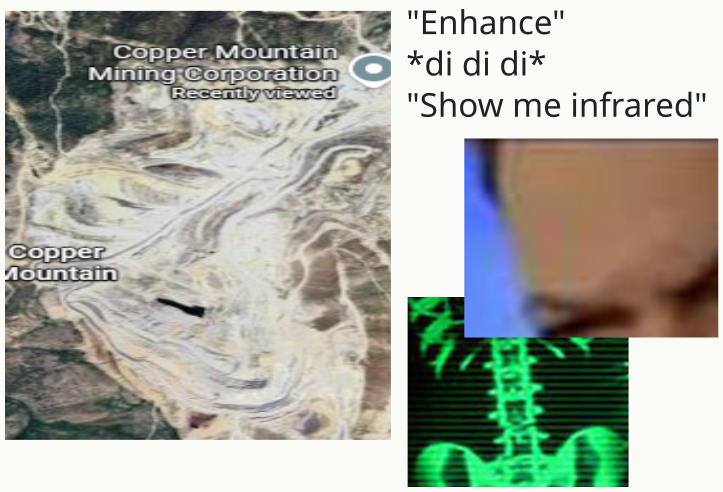

<title>Geospatial Query</title>
<link rel="preconnect" href="https://fonts.googleapis.com">
<link rel="stylesheet" href="https://fonts.googleapis.com/css2?family=Barlow+Condensed:wght@500;600&family=IBM+Plex+Sans:wght@400;500&family=IBM+Plex+Mono:wght@400;500&display=swap">
<style>
/* Layout: one column of survey-sheet panels, scrolled vertically. */
:root {
  --paper: #f3f4ef;
  --panel: #fbfbf8;
  --ink: #1d2420;
  --muted: #66706a;
  --rule: #d5d9d1;
  --accent: #2f6b4f;
  --code: #eef0ea;
  --f1: #b5543c; --f2: #7d6a58; --f3: #c48a1f; --f4: #4f8a3a; --f5: #8c6b3e;
  --f6: #9b4f7a; --f7: #3f7fa8; --f8: #6a5fb0; --f9: #2f8f8f; --f10: #55606a;
  --display: "Barlow Condensed", "Arial Narrow", sans-serif;
  --body: "IBM Plex Sans", system-ui, sans-serif;
  --mono: "IBM Plex Mono", ui-monospace, monospace;
}
@media (prefers-color-scheme: dark) {
  :root:not([data-theme="light"]) {
    color-scheme: dark;
    --paper: #141816; --panel: #1b201d; --ink: #e4e8e2; --muted: #98a29b; --rule: #2e3531; --accent: #7cc49f; --code: #222824;
    --f1: #e07a60; --f2: #b09a86; --f3: #e2ae4a; --f4: #82bd6a; --f5: #c49b66;
    --f6: #cf7fac; --f7: #6fb0d8; --f8: #9d92e0; --f9: #5cc2c2; --f10: #9aa6b0;
  }
}
:root[data-theme="dark"] {
  color-scheme: dark;
  --paper: #141816; --panel: #1b201d; --ink: #e4e8e2; --muted: #98a29b; --rule: #2e3531; --accent: #7cc49f; --code: #222824;
  --f1: #e07a60; --f2: #b09a86; --f3: #e2ae4a; --f4: #82bd6a; --f5: #c49b66;
  --f6: #cf7fac; --f7: #6fb0d8; --f8: #9d92e0; --f9: #5cc2c2; --f10: #9aa6b0;
}
body { background: var(--paper); color: var(--ink); font-family: var(--body); }
.sheet {
  display: grid; grid-template-columns: minmax(0, 1fr); gap: 20px;
  max-width: 920px; margin: 0 auto; padding-block: 20px 32px; padding-inline: 20px;
}
.bar { display: flex; justify-content: flex-end; }
.toggle {
  display: grid; place-items: center; width: 34px; height: 34px; padding: 0; cursor: pointer;
  color: var(--ink); background: var(--panel); border: 1px solid var(--rule); border-radius: 50%;
}
.toggle svg { width: 17px; height: 17px; }
.toggle:focus-visible { outline: 2px solid var(--accent); outline-offset: 2px; }
.toggle .sun { display: none; }
:root[data-dark] .toggle .sun { display: block; }
:root[data-dark] .toggle .moon { display: none; }

.panel {
  background: var(--panel); border: 1px solid var(--rule); border-radius: 3px;
  padding: 18px 20px 20px; display: flex; flex-direction: column; gap: 16px; min-width: 0;
}
.panel h2 {
  margin: 0; font-family: var(--display); font-weight: 600; font-size: 15px;
  letter-spacing: .14em; text-transform: uppercase; color: var(--muted);
  display: flex; gap: 10px; align-items: baseline;
}
.panel h2 b { color: var(--accent); font-weight: 600; }
.panel h3 { margin: 0; font-family: var(--display); font-weight: 600; font-size: 20px; letter-spacing: .02em; }
.vibe img { display: block; width: 100%; height: auto; }
.vibe .dark { display: none; }
:root[data-dark] .vibe .light { display: none; }
:root[data-dark] .vibe .dark { display: block; }

/* Signature */
.sig { display: grid; gap: 4px; }
.sig h3 { margin-top: 12px; }
.sig > ul { margin: 0; padding: 0; list-style: none; display: grid; gap: 10px; }
.def { scroll-margin-top: 16px; }
.def > div { font-size: 14px; }
.def > div b { font-family: var(--mono); font-weight: 500; color: var(--accent); }
.def > div i { font-style: normal; color: var(--muted); font-size: 12.5px; }
.def ul { margin: 4px 0 0; padding-left: 22px; display: grid; gap: 2px; font-size: 13px; }
.def li::marker { color: var(--muted); }
.def code { font-family: var(--mono); font-size: 12.5px; }
.def .t { color: var(--f1); }
.def .p { color: color-mix(in srgb, var(--f1) 50%, var(--panel)); }
.def .k { color: var(--muted); font-family: var(--body); font-size: 12.5px; }
.def .ex { margin: 2px 0 0 22px; font-size: 12.5px; color: var(--muted); }
.def a { color: inherit; text-decoration: none; border-bottom: 1px dotted currentColor; }
.def:target > div b { text-decoration: underline; }

/* Feature set */
#bars { width: 100%; height: 350px; }
.fams { display: grid; grid-template-columns: minmax(0, 1fr); gap: 0; border-top: 1px solid var(--rule); }
.fams details { border-bottom: 1px solid var(--rule); }
.fams summary {
  display: flex; align-items: center; gap: 10px; padding: 9px 2px; cursor: pointer; list-style: none; font-size: 14px;
}
.fams summary::-webkit-details-marker { display: none; }
.fams summary::before {
  content: ""; flex: none; width: 0; height: 0; margin: 0 4px 0 2px;
  border-style: solid; border-width: 6px 0 6px 9px; border-color: transparent transparent transparent var(--accent);
  transition: transform .15s ease;
}
.fams details[open] summary::before { transform: rotate(90deg); }
.fams summary:hover { background: var(--code); }
.hint { margin: 0; font-size: 12.5px; color: var(--muted); }
.find { display: flex; flex-wrap: wrap; align-items: center; gap: 8px 14px; }
.find input { flex: 1 1 220px; max-width: 340px; font: 13px var(--mono); color: var(--ink); background: var(--panel); border: 1px solid var(--rule); border-radius: 2px; padding: 5px 8px; }
.find input:focus-visible { outline: 2px solid var(--accent); outline-offset: 1px; }
.find .hint:last-child { margin-left: auto; }
@media (prefers-reduced-motion: reduce) { .fams summary::before { transition: none; } }
.fams summary:focus-visible { outline: 2px solid var(--accent); outline-offset: -2px; }
.fams summary .count { margin-left: auto; font-family: var(--mono); font-size: 12px; color: var(--muted); }
.table { overflow-x: auto; padding-bottom: 10px; }
.table table { width: 100%; border-collapse: collapse; font-size: 12.5px; }
.table th { text-align: left; font-family: var(--display); font-weight: 600; font-size: 13px; letter-spacing: .08em; text-transform: uppercase; color: var(--muted); padding: 6px 10px 6px 0; border-bottom: 1px solid var(--rule); }
.table td { padding: 4px 10px 4px 0; vertical-align: top; border-bottom: 1px solid var(--code); }
.table td:first-child, .table td:nth-child(3), .table td:last-child { font-family: var(--mono); font-size: 12px; white-space: nowrap; }
.table td:last-child a { color: var(--accent); text-decoration: none; border-bottom: 1px dotted var(--accent); }
.csv { align-self: flex-start; font-family: var(--mono); font-size: 12px; color: var(--ink); background: var(--panel); border: 1px solid var(--rule); border-radius: 2px; padding: 5px 10px; cursor: pointer; }
.csv:focus-visible { outline: 2px solid var(--accent); outline-offset: 2px; }
.csv-row { display: flex; flex-wrap: wrap; align-items: center; gap: 10px; }
.csv-row span { font-size: 12px; color: var(--muted); }

/* Method */
.caption { margin: 0; font-size: 13.5px; color: var(--muted); }
.dag { overflow-x: auto; }
.dag svg { display: block; margin: 0 auto; max-width: 100%; height: auto; }
.dag .dark { display: none; }
:root[data-dark] .dag .light { display: none; }
:root[data-dark] .dag .dark { display: block; }
.fams summary .blurb { display: block; font-size: 12.5px; color: var(--muted); margin-top: 2px; white-space: nowrap; overflow: hidden; text-overflow: ellipsis; }
.fams summary .name { flex: 1; min-width: 0; }
</style>

<main class="sheet">
  <div class="bar">
    <button class="toggle" id="theme" type="button" aria-label="Toggle light and dark theme">
      <svg class="moon" viewBox="0 0 24 24" fill="none" stroke="currentColor" stroke-width="2" stroke-linecap="round" stroke-linejoin="round"><path d="M21 12.8A9 9 0 1 1 11.2 3a7 7 0 0 0 9.8 9.8z"/></svg>
      <svg class="sun" viewBox="0 0 24 24" fill="none" stroke="currentColor" stroke-width="2" stroke-linecap="round"><circle cx="12" cy="12" r="4.5"/><path d="M12 1.5v2.5M12 20v2.5M1.5 12H4M20 12h2.5M4.6 4.6l1.8 1.8M17.6 17.6l1.8 1.8M4.6 19.4l1.8-1.8M17.6 6.4l1.8-1.8"/></svg>
    </button>
  </div>

  <section class="panel">
    <h2><b>1</b>Abstract</h2>
    <div class="vibe"></div>
  </section>

  <section class="panel">
    <h2><b>2</b>Pipeline signature</h2>
    <p class="caption">This section describes what the pipeline requires as input and what it promises to produce as output. Briefly, a query specifying time and area of interest (AOI) returns a list of features. Panel 3 describes available features.</p>
    <div class="sig" id="sig"></div>
    <p class="caption">Some features, such as nadir or cloud cover, can be used for QC and are filterable at the query level.</p>
  </section>

  <section class="panel">
    <h2><b>3</b>Features</h2>
    <p class="caption">Hybrid LLM + human curation with proof of concept live data retrieval tests produced the following list of obtainable features, grouped into families.</p>
    <div id="bars"></div>
    <div class="csv-row" id="csv-row" hidden><button class="csv" id="csv" type="button">Download features CSV</button><span id="csv-status"></span></div>
    <div class="find"><p class="hint">Click a row to expand.</p><input type="search" id="q" placeholder="Search features, sources, types" aria-label="Search features" autocomplete="off" spellcheck="false"><p class="hint" id="q-status" aria-live="polite"></p></div>
    <div class="fams" id="fams"></div>
  </section>

  <section class="panel">
    <h2><b>4</b>Method</h2>
    <p class="caption">The pipeline is a simple scatter-gather across sources. Diagram collapsed by feature family for legibility. Metasmith will plan the data fetch across sources and compile into Nextflow for execution.</p>
    <div class="dag"><div class="light"><?xml version="1.0" encoding="UTF-8" standalone="no"?>
<svg xmlns="http://www.w3.org/2000/svg" xmlns:xlink="http://www.w3.org/1999/xlink" width="382" height="428" viewBox="0 0 382 428">
<g fill="none" stroke="#666666" stroke-width="1.4" stroke-linejoin="round" stroke-linecap="butt">
<path d="M 105.1,38.9 L 105.1,40.6 L 105.1,70.6 L 105.1,100.6 L 105.1,130.6 L 105.1,160.6 L 105.1,190.6 L 105.1,220.6 L 105.1,250.6 L 105.1,280.6 L 105.1,329.3"/>
<path d="M 105.1,338.2 L 105.1,356.9 L 105.1,359.3"/>
<path d="M 105.1,368.2 L 105.1,388.6"/>
<path d="M 170.1,59.3 L 170.1,56.9 A 8.1,8.1 0 0 0 162.0,48.8 L 113.2,48.8 A 8.1,8.1 0 0 1 105.1,40.6"/>
<path d="M 170.1,68.2 L 170.1,340.6 A 8.1,8.1 0 0 1 162.0,348.8 L 145.8,348.8 L 129.5,348.8 L 113.2,348.8 A 8.1,8.1 0 0 0 105.1,356.9"/>
<path d="M 153.9,89.3 L 153.9,86.9 A 8.1,8.1 0 0 0 145.8,78.8 L 113.2,78.8 A 8.1,8.1 0 0 1 105.1,70.6"/>
<path d="M 153.9,98.2 L 153.9,340.6 A 8.1,8.1 0 0 1 145.8,348.8"/>
<path d="M 137.6,119.3 L 137.6,116.9 A 8.1,8.1 0 0 0 129.5,108.8 L 113.2,108.8 A 8.1,8.1 0 0 1 105.1,100.6"/>
<path d="M 137.6,128.2 L 137.6,340.6 A 8.1,8.1 0 0 1 129.5,348.8"/>
<path d="M 121.4,149.3 L 121.4,146.9 A 8.1,8.1 0 0 0 113.2,138.8 A 8.1,8.1 0 0 1 105.1,130.6"/>
<path d="M 121.4,158.2 L 121.4,340.6 A 8.1,8.1 0 0 1 113.2,348.8"/>
<path d="M 23.9,179.3 L 23.9,176.9 A 8.1,8.1 0 0 1 32.0,168.8 L 97.0,168.8 A 8.1,8.1 0 0 0 105.1,160.6"/>
<path d="M 23.9,188.2 L 23.9,340.6 A 8.1,8.1 0 0 0 32.0,348.8 L 48.2,348.8 L 64.5,348.8 L 80.8,348.8 L 97.0,348.8 A 8.1,8.1 0 0 1 105.1,356.9"/>
<path d="M 40.1,209.3 L 40.1,206.9 A 8.1,8.1 0 0 1 48.2,198.8 L 97.0,198.8 A 8.1,8.1 0 0 0 105.1,190.6"/>
<path d="M 40.1,218.2 L 40.1,340.6 A 8.1,8.1 0 0 0 48.2,348.8"/>
<path d="M 56.4,239.3 L 56.4,236.9 A 8.1,8.1 0 0 1 64.5,228.8 L 97.0,228.8 A 8.1,8.1 0 0 0 105.1,220.6"/>
<path d="M 56.4,248.2 L 56.4,340.6 A 8.1,8.1 0 0 0 64.5,348.8"/>
<path d="M 72.6,269.3 L 72.6,266.9 A 8.1,8.1 0 0 1 80.8,258.8 L 97.0,258.8 A 8.1,8.1 0 0 0 105.1,250.6"/>
<path d="M 72.6,278.2 L 72.6,340.6 A 8.1,8.1 0 0 0 80.8,348.8"/>
<path d="M 88.9,299.3 L 88.9,296.9 A 8.1,8.1 0 0 1 97.0,288.8 A 8.1,8.1 0 0 0 105.1,280.6"/>
<path d="M 88.9,308.2 L 88.9,340.6 A 8.1,8.1 0 0 0 97.0,348.8"/>
</g>
<g><title></title>
<circle cx="105.1" cy="33.8" r="5.1" fill="#212121" stroke="#2B2B2B" stroke-width="1.3"/>
<text x="192.1" y="38.2" font-family="IBM Plex Mono" font-size="12" fill="#7A7A7A" font-weight="normal" text-anchor="start"></text></g>
<g><title>Socio-economic</title>
<polygon points="165.0,59.3 175.2,59.3 170.1,68.2" fill="#FFFFFF" stroke="#2B2B2B" stroke-width="2.0" stroke-linejoin="round"/>
<text x="182.1" y="68.2" font-family="IBM Plex Mono" font-size="12" fill="#111111" font-weight="normal" text-anchor="start">Socio-economic</text></g>
<g><title>Infrastructure &amp; industry</title>
<polygon points="148.8,89.3 159.0,89.3 153.9,98.2" fill="#FFFFFF" stroke="#2B2B2B" stroke-width="2.0" stroke-linejoin="round"/>
<text x="182.1" y="98.2" font-family="IBM Plex Mono" font-size="12" fill="#111111" font-weight="normal" text-anchor="start">Infrastructure &amp; industry</text></g>
<g><title>Hazards</title>
<polygon points="132.5,119.3 142.8,119.3 137.6,128.2" fill="#FFFFFF" stroke="#2B2B2B" stroke-width="2.0" stroke-linejoin="round"/>
<text x="182.1" y="128.2" font-family="IBM Plex Mono" font-size="12" fill="#111111" font-weight="normal" text-anchor="start">Hazards</text></g>
<g><title>Macrobiology</title>
<polygon points="116.2,149.3 126.5,149.3 121.4,158.2" fill="#FFFFFF" stroke="#2B2B2B" stroke-width="2.0" stroke-linejoin="round"/>
<text x="182.1" y="158.2" font-family="IBM Plex Mono" font-size="12" fill="#111111" font-weight="normal" text-anchor="start">Macrobiology</text></g>
<g><title>Geology</title>
<polygon points="18.8,179.3 29.0,179.3 23.9,188.2" fill="#FFFFFF" stroke="#2B2B2B" stroke-width="2.0" stroke-linejoin="round"/>
<text x="182.1" y="188.2" font-family="IBM Plex Mono" font-size="12" fill="#111111" font-weight="normal" text-anchor="start">Geology</text></g>
<g><title>Microbiology &amp; health</title>
<polygon points="35.0,209.3 45.2,209.3 40.1,218.2" fill="#FFFFFF" stroke="#2B2B2B" stroke-width="2.0" stroke-linejoin="round"/>
<text x="182.1" y="218.2" font-family="IBM Plex Mono" font-size="12" fill="#111111" font-weight="normal" text-anchor="start">Microbiology &amp; health</text></g>
<g><title>Climate</title>
<polygon points="51.2,239.3 61.5,239.3 56.4,248.2" fill="#FFFFFF" stroke="#2B2B2B" stroke-width="2.0" stroke-linejoin="round"/>
<text x="182.1" y="248.2" font-family="IBM Plex Mono" font-size="12" fill="#111111" font-weight="normal" text-anchor="start">Climate</text></g>
<g><title>Spectral</title>
<polygon points="67.5,269.3 77.8,269.3 72.6,278.2" fill="#FFFFFF" stroke="#2B2B2B" stroke-width="2.0" stroke-linejoin="round"/>
<text x="182.1" y="278.2" font-family="IBM Plex Mono" font-size="12" fill="#111111" font-weight="normal" text-anchor="start">Spectral</text></g>
<g><title>Water bodies</title>
<polygon points="83.8,299.3 94.0,299.3 88.9,308.2" fill="#FFFFFF" stroke="#2B2B2B" stroke-width="2.0" stroke-linejoin="round"/>
<text x="182.1" y="308.2" font-family="IBM Plex Mono" font-size="12" fill="#111111" font-weight="normal" text-anchor="start">Water bodies</text></g>
<g><title>Latent</title>
<polygon points="100.0,329.3 110.2,329.3 105.1,338.2" fill="#FFFFFF" stroke="#2B2B2B" stroke-width="2.0" stroke-linejoin="round"/>
<text x="182.1" y="338.2" font-family="IBM Plex Mono" font-size="12" fill="#111111" font-weight="normal" text-anchor="start">Latent</text></g>
<g><title>aggregate</title>
<polygon points="100.0,359.3 110.2,359.3 105.1,368.2" fill="#FFFFFF" stroke="#2B2B2B" stroke-width="2.0" stroke-linejoin="round"/>
<text x="182.1" y="368.2" font-family="IBM Plex Mono" font-size="12" fill="#111111" font-weight="normal" text-anchor="start">aggregate</text></g>
<g><title></title>
<circle cx="105.1" cy="393.8" r="5.1" fill="#212121" stroke="#2B2B2B" stroke-width="1.3"/>
<text x="192.1" y="398.2" font-family="IBM Plex Mono" font-size="12" fill="#7A7A7A" font-weight="normal" text-anchor="start"></text></g>
</svg>
</div><div class="dark"><?xml version="1.0" encoding="UTF-8" standalone="no"?>
<svg xmlns="http://www.w3.org/2000/svg" xmlns:xlink="http://www.w3.org/1999/xlink" width="382" height="428" viewBox="0 0 382 428">
<g fill="none" stroke="#8D97A8" stroke-width="1.4" stroke-linejoin="round" stroke-linecap="butt">
<path d="M 105.1,38.9 L 105.1,40.6 L 105.1,70.6 L 105.1,100.6 L 105.1,130.6 L 105.1,160.6 L 105.1,190.6 L 105.1,220.6 L 105.1,250.6 L 105.1,280.6 L 105.1,329.3"/>
<path d="M 105.1,338.2 L 105.1,356.9 L 105.1,359.3"/>
<path d="M 105.1,368.2 L 105.1,388.6"/>
<path d="M 170.1,59.3 L 170.1,56.9 A 8.1,8.1 0 0 0 162.0,48.8 L 113.2,48.8 A 8.1,8.1 0 0 1 105.1,40.6"/>
<path d="M 170.1,68.2 L 170.1,340.6 A 8.1,8.1 0 0 1 162.0,348.8 L 145.8,348.8 L 129.5,348.8 L 113.2,348.8 A 8.1,8.1 0 0 0 105.1,356.9"/>
<path d="M 153.9,89.3 L 153.9,86.9 A 8.1,8.1 0 0 0 145.8,78.8 L 113.2,78.8 A 8.1,8.1 0 0 1 105.1,70.6"/>
<path d="M 153.9,98.2 L 153.9,340.6 A 8.1,8.1 0 0 1 145.8,348.8"/>
<path d="M 137.6,119.3 L 137.6,116.9 A 8.1,8.1 0 0 0 129.5,108.8 L 113.2,108.8 A 8.1,8.1 0 0 1 105.1,100.6"/>
<path d="M 137.6,128.2 L 137.6,340.6 A 8.1,8.1 0 0 1 129.5,348.8"/>
<path d="M 121.4,149.3 L 121.4,146.9 A 8.1,8.1 0 0 0 113.2,138.8 A 8.1,8.1 0 0 1 105.1,130.6"/>
<path d="M 121.4,158.2 L 121.4,340.6 A 8.1,8.1 0 0 1 113.2,348.8"/>
<path d="M 23.9,179.3 L 23.9,176.9 A 8.1,8.1 0 0 1 32.0,168.8 L 97.0,168.8 A 8.1,8.1 0 0 0 105.1,160.6"/>
<path d="M 23.9,188.2 L 23.9,340.6 A 8.1,8.1 0 0 0 32.0,348.8 L 48.2,348.8 L 64.5,348.8 L 80.8,348.8 L 97.0,348.8 A 8.1,8.1 0 0 1 105.1,356.9"/>
<path d="M 40.1,209.3 L 40.1,206.9 A 8.1,8.1 0 0 1 48.2,198.8 L 97.0,198.8 A 8.1,8.1 0 0 0 105.1,190.6"/>
<path d="M 40.1,218.2 L 40.1,340.6 A 8.1,8.1 0 0 0 48.2,348.8"/>
<path d="M 56.4,239.3 L 56.4,236.9 A 8.1,8.1 0 0 1 64.5,228.8 L 97.0,228.8 A 8.1,8.1 0 0 0 105.1,220.6"/>
<path d="M 56.4,248.2 L 56.4,340.6 A 8.1,8.1 0 0 0 64.5,348.8"/>
<path d="M 72.6,269.3 L 72.6,266.9 A 8.1,8.1 0 0 1 80.8,258.8 L 97.0,258.8 A 8.1,8.1 0 0 0 105.1,250.6"/>
<path d="M 72.6,278.2 L 72.6,340.6 A 8.1,8.1 0 0 0 80.8,348.8"/>
<path d="M 88.9,299.3 L 88.9,296.9 A 8.1,8.1 0 0 1 97.0,288.8 A 8.1,8.1 0 0 0 105.1,280.6"/>
<path d="M 88.9,308.2 L 88.9,340.6 A 8.1,8.1 0 0 0 97.0,348.8"/>
</g>
<g><title></title>
<circle cx="105.1" cy="33.8" r="5.1" fill="#DFE3EA" stroke="#DFE3EA" stroke-width="1.3"/>
<text x="192.1" y="38.2" font-family="IBM Plex Mono" font-size="12" fill="#8D97A8" font-weight="normal" text-anchor="start"></text></g>
<g><title>Socio-economic</title>
<polygon points="165.0,59.3 175.2,59.3 170.1,68.2" fill="#1B1E24" stroke="#DFE3EA" stroke-width="2.0" stroke-linejoin="round"/>
<text x="182.1" y="68.2" font-family="IBM Plex Mono" font-size="12" fill="#DFE3EA" font-weight="normal" text-anchor="start">Socio-economic</text></g>
<g><title>Infrastructure &amp; industry</title>
<polygon points="148.8,89.3 159.0,89.3 153.9,98.2" fill="#1B1E24" stroke="#DFE3EA" stroke-width="2.0" stroke-linejoin="round"/>
<text x="182.1" y="98.2" font-family="IBM Plex Mono" font-size="12" fill="#DFE3EA" font-weight="normal" text-anchor="start">Infrastructure &amp; industry</text></g>
<g><title>Hazards</title>
<polygon points="132.5,119.3 142.8,119.3 137.6,128.2" fill="#1B1E24" stroke="#DFE3EA" stroke-width="2.0" stroke-linejoin="round"/>
<text x="182.1" y="128.2" font-family="IBM Plex Mono" font-size="12" fill="#DFE3EA" font-weight="normal" text-anchor="start">Hazards</text></g>
<g><title>Macrobiology</title>
<polygon points="116.2,149.3 126.5,149.3 121.4,158.2" fill="#1B1E24" stroke="#DFE3EA" stroke-width="2.0" stroke-linejoin="round"/>
<text x="182.1" y="158.2" font-family="IBM Plex Mono" font-size="12" fill="#DFE3EA" font-weight="normal" text-anchor="start">Macrobiology</text></g>
<g><title>Geology</title>
<polygon points="18.8,179.3 29.0,179.3 23.9,188.2" fill="#1B1E24" stroke="#DFE3EA" stroke-width="2.0" stroke-linejoin="round"/>
<text x="182.1" y="188.2" font-family="IBM Plex Mono" font-size="12" fill="#DFE3EA" font-weight="normal" text-anchor="start">Geology</text></g>
<g><title>Microbiology &amp; health</title>
<polygon points="35.0,209.3 45.2,209.3 40.1,218.2" fill="#1B1E24" stroke="#DFE3EA" stroke-width="2.0" stroke-linejoin="round"/>
<text x="182.1" y="218.2" font-family="IBM Plex Mono" font-size="12" fill="#DFE3EA" font-weight="normal" text-anchor="start">Microbiology &amp; health</text></g>
<g><title>Climate</title>
<polygon points="51.2,239.3 61.5,239.3 56.4,248.2" fill="#1B1E24" stroke="#DFE3EA" stroke-width="2.0" stroke-linejoin="round"/>
<text x="182.1" y="248.2" font-family="IBM Plex Mono" font-size="12" fill="#DFE3EA" font-weight="normal" text-anchor="start">Climate</text></g>
<g><title>Spectral</title>
<polygon points="67.5,269.3 77.8,269.3 72.6,278.2" fill="#1B1E24" stroke="#DFE3EA" stroke-width="2.0" stroke-linejoin="round"/>
<text x="182.1" y="278.2" font-family="IBM Plex Mono" font-size="12" fill="#DFE3EA" font-weight="normal" text-anchor="start">Spectral</text></g>
<g><title>Water bodies</title>
<polygon points="83.8,299.3 94.0,299.3 88.9,308.2" fill="#1B1E24" stroke="#DFE3EA" stroke-width="2.0" stroke-linejoin="round"/>
<text x="182.1" y="308.2" font-family="IBM Plex Mono" font-size="12" fill="#DFE3EA" font-weight="normal" text-anchor="start">Water bodies</text></g>
<g><title>Latent</title>
<polygon points="100.0,329.3 110.2,329.3 105.1,338.2" fill="#1B1E24" stroke="#DFE3EA" stroke-width="2.0" stroke-linejoin="round"/>
<text x="182.1" y="338.2" font-family="IBM Plex Mono" font-size="12" fill="#DFE3EA" font-weight="normal" text-anchor="start">Latent</text></g>
<g><title>aggregate</title>
<polygon points="100.0,359.3 110.2,359.3 105.1,368.2" fill="#1B1E24" stroke="#DFE3EA" stroke-width="2.0" stroke-linejoin="round"/>
<text x="182.1" y="368.2" font-family="IBM Plex Mono" font-size="12" fill="#DFE3EA" font-weight="normal" text-anchor="start">aggregate</text></g>
<g><title></title>
<circle cx="105.1" cy="393.8" r="5.1" fill="#DFE3EA" stroke="#DFE3EA" stroke-width="1.3"/>
<text x="192.1" y="398.2" font-family="IBM Plex Mono" font-size="12" fill="#8D97A8" font-weight="normal" text-anchor="start"></text></g>
</svg>
</div></div>
  </section>
</main>

<script src="https://cdnjs.cloudflare.com/ajax/libs/plotly.js/2.34.0/plotly.min.js"></script>
<script src="https://cdnjs.cloudflare.com/ajax/libs/fuse.js/7.0.0/fuse.min.js"></script>
<script>
const DATA = [{"family": "Socio-economic", "blurb": "People, money, movement, tenure and place names: census, population, commuting, parcels.", "features": [{"name": "statcan_aoi_area_km2", "description": "Census demography: AOI area km²", "source": "statcan_csd_2016", "layer": "census_demography", "module": "census_micro", "licence": "permissive", "url": "https://www12.statcan.gc.ca/census-recensement/2016/index-eng.cfm", "observation_type": "survey", "poc_adapter": true}, {"name": "statcan_cma_name", "description": "Census demography: metro area name", "source": "statcan_csd_2016", "layer": "census_demography", "module": "census_micro", "licence": "permissive", "url": "https://www12.statcan.gc.ca/census-recensement/2016/index-eng.cfm", "observation_type": "survey", "poc_adapter": true}, {"name": "statcan_cma_uid", "description": "Census demography: metro area id", "source": "statcan_csd_2016", "layer": "census_demography", "module": "census_micro", "licence": "permissive", "url": "https://www12.statcan.gc.ca/census-recensement/2016/index-eng.cfm", "observation_type": "survey", "poc_adapter": true}, {"name": "statcan_csd_dominant_frac", "description": "Census demography: census subdivision dominant fraction", "source": "statcan_csd_2016", "layer": "census_demography", "module": "census_micro", "licence": "permissive", "url": "https://www12.statcan.gc.ca/census-recensement/2016/index-eng.cfm", "observation_type": "survey", "poc_adapter": true}, {"name": "statcan_csd_households_2016", "description": "Census demography: census subdivision households 2016", "source": "statcan_csd_2016", "layer": "census_demography", "module": "census_micro", "licence": "permissive", "url": "https://www12.statcan.gc.ca/census-recensement/2016/index-eng.cfm", "observation_type": "survey", "poc_adapter": true}, {"name": "statcan_csd_land_area_km2", "description": "Census demography: census subdivision land area km²", "source": "statcan_csd_2016", "layer": "census_demography", "module": "census_micro", "licence": "permissive", "url": "https://www12.statcan.gc.ca/census-recensement/2016/index-eng.cfm", "observation_type": "survey", "poc_adapter": true}, {"name": "statcan_csd_med_hh_income_cad", "description": "Census demography: census subdivision med HH income CAD", "source": "statcan_csd_2016", "layer": "census_demography", "module": "census_micro", "licence": "permissive", "url": "https://www12.statcan.gc.ca/census-recensement/2016/index-eng.cfm", "observation_type": "survey", "poc_adapter": true}, {"name": "statcan_csd_n_overlapping", "description": "Census demography: census subdivision count overlapping", "source": "statcan_csd_2016", "layer": "census_demography", "module": "census_micro", "licence": "permissive", "url": "https://www12.statcan.gc.ca/census-recensement/2016/index-eng.cfm", "observation_type": "survey", "poc_adapter": true}, {"name": "statcan_csd_name", "description": "Census demography: census subdivision name", "source": "statcan_csd_2016", "layer": "census_demography", "module": "census_micro", "licence": "permissive", "url": "https://www12.statcan.gc.ca/census-recensement/2016/index-eng.cfm", "observation_type": "survey", "poc_adapter": true}, {"name": "statcan_csd_pop_2016", "description": "Census demography: census subdivision pop 2016", "source": "statcan_csd_2016", "layer": "census_demography", "module": "census_micro", "licence": "permissive", "url": "https://www12.statcan.gc.ca/census-recensement/2016/index-eng.cfm", "observation_type": "survey", "poc_adapter": true}, {"name": "statcan_csd_pop_density_km2", "description": "Census demography: census subdivision pop density km²", "source": "statcan_csd_2016", "layer": "census_demography", "module": "census_micro", "licence": "permissive", "url": "https://www12.statcan.gc.ca/census-recensement/2016/index-eng.cfm", "observation_type": "survey", "poc_adapter": true}, {"name": "statcan_csd_type", "description": "Census demography: census subdivision type", "source": "statcan_csd_2016", "layer": "census_demography", "module": "census_micro", "licence": "permissive", "url": "https://www12.statcan.gc.ca/census-recensement/2016/index-eng.cfm", "observation_type": "survey", "poc_adapter": true}, {"name": "statcan_csd_uid", "description": "Census demography: census subdivision id", "source": "statcan_csd_2016", "layer": "census_demography", "module": "census_micro", "licence": "permissive", "url": "https://www12.statcan.gc.ca/census-recensement/2016/index-eng.cfm", "observation_type": "survey", "poc_adapter": true}, {"name": "statcan_ct_n_overlapping", "description": "Census demography: ct count overlapping", "source": "statcan_csd_2016", "layer": "census_demography", "module": "census_micro", "licence": "permissive", "url": "https://www12.statcan.gc.ca/census-recensement/2016/index-eng.cfm", "observation_type": "survey", "poc_adapter": true}, {"name": "statcan_ct_uid", "description": "Census demography: ct id", "source": "statcan_csd_2016", "layer": "census_demography", "module": "census_micro", "licence": "permissive", "url": "https://www12.statcan.gc.ca/census-recensement/2016/index-eng.cfm", "observation_type": "survey", "poc_adapter": true}, {"name": "statcan_popest_geo_code", "description": "Census demography: popest geo code", "source": "statcan_wds_popest", "layer": "census_demography", "module": "census_micro", "licence": "permissive", "url": "https://www150.statcan.gc.ca/t1/tbl1/en/tv.action?pid=1710015501", "observation_type": "survey", "poc_adapter": true}, {"name": "statcan_popest_geo_level", "description": "Census demography: popest geo level", "source": "statcan_wds_popest", "layer": "census_demography", "module": "census_micro", "licence": "permissive", "url": "https://www150.statcan.gc.ca/t1/tbl1/en/tv.action?pid=1710015501", "observation_type": "survey", "poc_adapter": true}, {"name": "statcan_popest_latest", "description": "Census demography: popest latest", "source": "statcan_wds_popest", "layer": "census_demography", "module": "census_micro", "licence": "permissive", "url": "https://www150.statcan.gc.ca/t1/tbl1/en/tv.action?pid=1710015501", "observation_type": "survey", "poc_adapter": true}, {"name": "statcan_popest_ref_period", "description": "Census demography: popest ref period", "source": "statcan_wds_popest", "layer": "census_demography", "module": "census_micro", "licence": "permissive", "url": "https://www150.statcan.gc.ca/t1/tbl1/en/tv.action?pid=1710015501", "observation_type": "survey", "poc_adapter": true}, {"name": "statcan_popest_vector_id", "description": "Census demography: popest vector id", "source": "statcan_wds_popest", "layer": "census_demography", "module": "census_micro", "licence": "permissive", "url": "https://www150.statcan.gc.ca/t1/tbl1/en/tv.action?pid=1710015501", "observation_type": "survey", "poc_adapter": true}, {"name": "statcan_popest_yoy_pct", "description": "Census demography: popest yoy %", "source": "statcan_wds_popest", "layer": "census_demography", "module": "census_micro", "licence": "permissive", "url": "https://www150.statcan.gc.ca/t1/tbl1/en/tv.action?pid=1710015501", "observation_type": "survey", "poc_adapter": true}, {"name": "statcan_province", "description": "Census demography: province", "source": "statcan_csd_2016", "layer": "census_demography", "module": "census_micro", "licence": "permissive", "url": "https://www12.statcan.gc.ca/census-recensement/2016/index-eng.cfm", "observation_type": "survey", "poc_adapter": true}, {"name": "tiger_block_housing_units_2020", "description": "Census demography: block housing units 2020", "source": "tigerweb_blocks2020", "layer": "census_demography", "module": "census_grids", "licence": "permissive", "url": "https://tigerweb.geo.census.gov/", "observation_type": "survey", "poc_adapter": true}, {"name": "tiger_block_pop_2020", "description": "Census demography: block pop 2020", "source": "tigerweb_blocks2020", "layer": "census_demography", "module": "census_grids", "licence": "permissive", "url": "https://tigerweb.geo.census.gov/", "observation_type": "survey", "poc_adapter": true}, {"name": "tiger_county_fips", "description": "Census demography: county FIPS", "source": "tigerweb_blocks2020", "layer": "census_demography", "module": "census_grids", "licence": "permissive", "url": "https://tigerweb.geo.census.gov/", "observation_type": "survey", "poc_adapter": true}, {"name": "tiger_housing_density_km2", "description": "Census demography: housing density km²", "source": "tigerweb_blocks2020", "layer": "census_demography", "module": "census_grids", "licence": "permissive", "url": "https://tigerweb.geo.census.gov/", "observation_type": "survey", "poc_adapter": true}, {"name": "tiger_mean_block_area_km2", "description": "Census demography: mean block area km²", "source": "tigerweb_blocks2020", "layer": "census_demography", "module": "census_grids", "licence": "permissive", "url": "https://tigerweb.geo.census.gov/", "observation_type": "survey", "poc_adapter": true}, {"name": "tiger_n_blocks", "description": "Census demography: count blocks", "source": "tigerweb_blocks2020", "layer": "census_demography", "module": "census_grids", "licence": "permissive", "url": "https://tigerweb.geo.census.gov/", "observation_type": "survey", "poc_adapter": true}, {"name": "tiger_n_tracts", "description": "Census demography: count tracts", "source": "tigerweb_blocks2020", "layer": "census_demography", "module": "census_grids", "licence": "permissive", "url": "https://tigerweb.geo.census.gov/", "observation_type": "survey", "poc_adapter": true}, {"name": "tiger_persons_per_housing_unit", "description": "Census demography: persons per housing unit", "source": "tigerweb_blocks2020", "layer": "census_demography", "module": "census_grids", "licence": "permissive", "url": "https://tigerweb.geo.census.gov/", "observation_type": "survey", "poc_adapter": true}, {"name": "tiger_pop_density_km2", "description": "Census demography: pop density km²", "source": "tigerweb_blocks2020", "layer": "census_demography", "module": "census_grids", "licence": "permissive", "url": "https://tigerweb.geo.census.gov/", "observation_type": "survey", "poc_adapter": true}, {"name": "tiger_state_fips", "description": "Census demography: state FIPS", "source": "tigerweb_blocks2020", "layer": "census_demography", "module": "census_grids", "licence": "permissive", "url": "https://tigerweb.geo.census.gov/", "observation_type": "survey", "poc_adapter": true}, {"name": "tiger_transfer_limit_hit", "description": "Census demography: transfer limit hit", "source": "tigerweb_blocks2020", "layer": "census_demography", "module": "census_grids", "licence": "permissive", "url": "https://tigerweb.geo.census.gov/", "observation_type": "survey", "poc_adapter": true}, {"name": "bccrown_crown_frac_lower_bound", "description": "Crown land: crown fraction lower bound", "source": "bc_tantalis_crown", "layer": "crown_land", "module": "cadastre_open", "licence": "permissive", "url": "https://catalogue.data.gov.bc.ca/dataset/parcelmap-bc-parcel-fabric", "observation_type": "survey", "poc_adapter": true}, {"name": "bccrown_crown_frac_of_aoi", "description": "Crown land: crown fraction of AOI", "source": "bc_tantalis_crown", "layer": "crown_land", "module": "cadastre_open", "licence": "permissive", "url": "https://catalogue.data.gov.bc.ca/dataset/parcelmap-bc-parcel-fabric", "observation_type": "survey", "poc_adapter": true}, {"name": "bccrown_crown_frac_of_parcelled", "description": "Crown land: crown fraction of parcelled", "source": "bc_tantalis_crown", "layer": "crown_land", "module": "cadastre_open", "licence": "permissive", "url": "https://catalogue.data.gov.bc.ca/dataset/parcelmap-bc-parcel-fabric", "observation_type": "survey", "poc_adapter": true}, {"name": "bccrown_crown_frac_upper_bound", "description": "Crown land: crown fraction upper bound", "source": "bc_tantalis_crown", "layer": "crown_land", "module": "cadastre_open", "licence": "permissive", "url": "https://catalogue.data.gov.bc.ca/dataset/parcelmap-bc-parcel-fabric", "observation_type": "survey", "poc_adapter": true}, {"name": "bccrown_crown_km2", "description": "Crown land: crown km²", "source": "bc_tantalis_crown", "layer": "crown_land", "module": "cadastre_open", "licence": "permissive", "url": "https://catalogue.data.gov.bc.ca/dataset/parcelmap-bc-parcel-fabric", "observation_type": "survey", "poc_adapter": true}, {"name": "bccrown_dominant_owner_type", "description": "Crown land: dominant owner type", "source": "bc_tantalis_crown", "layer": "crown_land", "module": "cadastre_open", "licence": "permissive", "url": "https://catalogue.data.gov.bc.ca/dataset/parcelmap-bc-parcel-fabric", "observation_type": "survey", "poc_adapter": true}, {"name": "bccrown_dominant_tenure_purpose", "description": "Crown land: dominant tenure purpose", "source": "bc_tantalis_crown", "layer": "crown_land", "module": "cadastre_open", "licence": "permissive", "url": "https://catalogue.data.gov.bc.ca/dataset/parcelmap-bc-parcel-fabric", "observation_type": "survey", "poc_adapter": true}, {"name": "bccrown_dominant_tenure_type", "description": "Crown land: dominant tenure type", "source": "bc_tantalis_crown", "layer": "crown_land", "module": "cadastre_open", "licence": "permissive", "url": "https://catalogue.data.gov.bc.ca/dataset/parcelmap-bc-parcel-fabric", "observation_type": "survey", "poc_adapter": true}, {"name": "bccrown_frac_crown_provincial", "description": "Crown land: fraction crown provincial", "source": "bc_tantalis_crown", "layer": "crown_land", "module": "cadastre_open", "licence": "permissive", "url": "https://catalogue.data.gov.bc.ca/dataset/parcelmap-bc-parcel-fabric", "observation_type": "survey", "poc_adapter": true}, {"name": "bccrown_frac_private", "description": "Crown land: fraction private", "source": "bc_tantalis_crown", "layer": "crown_land", "module": "cadastre_open", "licence": "permissive", "url": "https://catalogue.data.gov.bc.ca/dataset/parcelmap-bc-parcel-fabric", "observation_type": "survey", "poc_adapter": true}, {"name": "bccrown_frac_untitled_provincial", "description": "Crown land: fraction untitled provincial", "source": "bc_tantalis_crown", "layer": "crown_land", "module": "cadastre_open", "licence": "permissive", "url": "https://catalogue.data.gov.bc.ca/dataset/parcelmap-bc-parcel-fabric", "observation_type": "survey", "poc_adapter": true}, {"name": "bccrown_n_owner_types", "description": "Crown land: count owner types", "source": "bc_tantalis_crown", "layer": "crown_land", "module": "cadastre_open", "licence": "permissive", "url": "https://catalogue.data.gov.bc.ca/dataset/parcelmap-bc-parcel-fabric", "observation_type": "survey", "poc_adapter": true}, {"name": "bccrown_parcelled_frac_of_aoi", "description": "Crown land: parcelled fraction of AOI", "source": "bc_tantalis_crown", "layer": "crown_land", "module": "cadastre_open", "licence": "permissive", "url": "https://catalogue.data.gov.bc.ca/dataset/parcelmap-bc-parcel-fabric", "observation_type": "survey", "poc_adapter": true}, {"name": "bccrown_tenure_area_km2", "description": "Crown land: tenure area km²", "source": "bc_tantalis_crown", "layer": "crown_land", "module": "cadastre_open", "licence": "permissive", "url": "https://catalogue.data.gov.bc.ca/dataset/parcelmap-bc-parcel-fabric", "observation_type": "survey", "poc_adapter": true}, {"name": "bccrown_tenure_count", "description": "Crown land: tenure count", "source": "bc_tantalis_crown", "layer": "crown_land", "module": "cadastre_open", "licence": "permissive", "url": "https://catalogue.data.gov.bc.ca/dataset/parcelmap-bc-parcel-fabric", "observation_type": "survey", "poc_adapter": true}, {"name": "bccrown_unparcelled_frac_of_aoi", "description": "Crown land: unparcelled fraction of AOI", "source": "bc_tantalis_crown", "layer": "crown_land", "module": "cadastre_open", "licence": "permissive", "url": "https://catalogue.data.gov.bc.ca/dataset/parcelmap-bc-parcel-fabric", "observation_type": "survey", "poc_adapter": true}, {"name": "wd_distinct_classes", "description": "Gazetteer: distinct classes", "source": "wikidata_sparql", "layer": "gazetteer", "module": "wikidata_geo", "licence": "permissive", "url": "https://query.wikidata.org/", "observation_type": "crowdsourced", "poc_adapter": true}, {"name": "wd_dominant_class_label", "description": "Gazetteer: dominant class label", "source": "wikidata_sparql", "layer": "gazetteer", "module": "wikidata_geo", "licence": "permissive", "url": "https://query.wikidata.org/", "observation_type": "crowdsourced", "poc_adapter": true}, {"name": "wd_dominant_class_n", "description": "Gazetteer: dominant class count", "source": "wikidata_sparql", "layer": "gazetteer", "module": "wikidata_geo", "licence": "permissive", "url": "https://query.wikidata.org/", "observation_type": "crowdsourced", "poc_adapter": true}, {"name": "wd_dominant_class_qid", "description": "Gazetteer: dominant class qid", "source": "wikidata_sparql", "layer": "gazetteer", "module": "wikidata_geo", "licence": "permissive", "url": "https://query.wikidata.org/", "observation_type": "crowdsourced", "poc_adapter": true}, {"name": "wd_entities_bbox", "description": "Gazetteer: entities bbox", "source": "wikidata_sparql", "layer": "gazetteer", "module": "wikidata_geo", "licence": "permissive", "url": "https://query.wikidata.org/", "observation_type": "crowdsourced", "poc_adapter": true}, {"name": "wd_entities_per_km2", "description": "Gazetteer: entities per km²", "source": "wikidata_sparql", "layer": "gazetteer", "module": "wikidata_geo", "licence": "permissive", "url": "https://query.wikidata.org/", "observation_type": "crowdsourced", "poc_adapter": true}, {"name": "wd_top5_class_share", "description": "Gazetteer: top5 class share", "source": "wikidata_sparql", "layer": "gazetteer", "module": "wikidata_geo", "licence": "permissive", "url": "https://query.wikidata.org/", "observation_type": "crowdsourced", "poc_adapter": true}, {"name": "aiannh_aoi_area_km2", "description": "Indigenous lands: AOI area km²", "source": "tigerweb_aiannh", "layer": "indigenous_lands", "module": "native_land", "licence": "permissive", "url": "https://tigerweb.geo.census.gov/", "observation_type": "survey", "poc_adapter": true}, {"name": "aiannh_n_areas", "description": "Indigenous lands: count areas", "source": "tigerweb_aiannh", "layer": "indigenous_lands", "module": "native_land", "licence": "permissive", "url": "https://tigerweb.geo.census.gov/", "observation_type": "survey", "poc_adapter": true}, {"name": "aiannh_overlap_frac", "description": "Indigenous lands: overlap fraction", "source": "tigerweb_aiannh", "layer": "indigenous_lands", "module": "native_land", "licence": "permissive", "url": "https://tigerweb.geo.census.gov/", "observation_type": "survey", "poc_adapter": true}, {"name": "aiannh_overlap_km2", "description": "Indigenous lands: overlap km²", "source": "tigerweb_aiannh", "layer": "indigenous_lands", "module": "native_land", "licence": "permissive", "url": "https://tigerweb.geo.census.gov/", "observation_type": "survey", "poc_adapter": true}, {"name": "aiannh_reservation_frac", "description": "Indigenous lands: reservation fraction", "source": "tigerweb_aiannh", "layer": "indigenous_lands", "module": "native_land", "licence": "permissive", "url": "https://tigerweb.geo.census.gov/", "observation_type": "survey", "poc_adapter": true}, {"name": "aiannh_trust_land_frac", "description": "Indigenous lands: trust land fraction", "source": "tigerweb_aiannh", "layer": "indigenous_lands", "module": "native_land", "licence": "permissive", "url": "https://tigerweb.geo.census.gov/", "observation_type": "survey", "poc_adapter": true}, {"name": "alta_n_parcels_in_province", "description": "Indigenous lands: count parcels in province", "source": "nrcan_alta", "layer": "indigenous_lands", "module": "native_land", "licence": "permissive", "url": "https://ftp.maps.canada.ca/pub/nrcan_rncan/vector/geobase_al_ta/", "observation_type": "survey", "poc_adapter": true}, {"name": "alta_n_parcels_intersecting", "description": "Indigenous lands: count parcels intersecting", "source": "nrcan_alta", "layer": "indigenous_lands", "module": "native_land", "licence": "permissive", "url": "https://ftp.maps.canada.ca/pub/nrcan_rncan/vector/geobase_al_ta/", "observation_type": "survey", "poc_adapter": true}, {"name": "alta_nearest_km", "description": "Indigenous lands: nearest km", "source": "nrcan_alta", "layer": "indigenous_lands", "module": "native_land", "licence": "permissive", "url": "https://ftp.maps.canada.ca/pub/nrcan_rncan/vector/geobase_al_ta/", "observation_type": "survey", "poc_adapter": true}, {"name": "alta_nearest_name", "description": "Indigenous lands: nearest name", "source": "nrcan_alta", "layer": "indigenous_lands", "module": "native_land", "licence": "permissive", "url": "https://ftp.maps.canada.ca/pub/nrcan_rncan/vector/geobase_al_ta/", "observation_type": "survey", "poc_adapter": true}, {"name": "alta_nearest_type", "description": "Indigenous lands: nearest type", "source": "nrcan_alta", "layer": "indigenous_lands", "module": "native_land", "licence": "permissive", "url": "https://ftp.maps.canada.ca/pub/nrcan_rncan/vector/geobase_al_ta/", "observation_type": "survey", "poc_adapter": true}, {"name": "alta_overlap_frac", "description": "Indigenous lands: overlap fraction", "source": "nrcan_alta", "layer": "indigenous_lands", "module": "native_land", "licence": "permissive", "url": "https://ftp.maps.canada.ca/pub/nrcan_rncan/vector/geobase_al_ta/", "observation_type": "survey", "poc_adapter": true}, {"name": "alta_overlap_km2", "description": "Indigenous lands: overlap km²", "source": "nrcan_alta", "layer": "indigenous_lands", "module": "native_land", "licence": "permissive", "url": "https://ftp.maps.canada.ca/pub/nrcan_rncan/vector/geobase_al_ta/", "observation_type": "survey", "poc_adapter": true}, {"name": "alta_province_extract", "description": "Indigenous lands: province extract", "source": "nrcan_alta", "layer": "indigenous_lands", "module": "native_land", "licence": "permissive", "url": "https://ftp.maps.canada.ca/pub/nrcan_rncan/vector/geobase_al_ta/", "observation_type": "survey", "poc_adapter": true}, {"name": "lodes_flow_records_matched", "description": "Mobility flows: flow records matched", "source": "lehd_lodes8", "layer": "mobility_flows", "module": "lodes", "licence": "permissive", "url": "https://lehd.ces.census.gov/data/", "observation_type": "survey", "poc_adapter": true}, {"name": "lodes_internal_job_frac", "description": "Mobility flows: internal job fraction", "source": "lehd_lodes8", "layer": "mobility_flows", "module": "lodes", "licence": "permissive", "url": "https://lehd.ces.census.gov/data/", "observation_type": "survey", "poc_adapter": true}, {"name": "lodes_jobs_balance_ratio", "description": "Mobility flows: jobs balance ratio", "source": "lehd_lodes8", "layer": "mobility_flows", "module": "lodes", "licence": "permissive", "url": "https://lehd.ces.census.gov/data/", "observation_type": "survey", "poc_adapter": true}, {"name": "lodes_jobs_held_by_residents", "description": "Mobility flows: jobs held by residents", "source": "lehd_lodes8", "layer": "mobility_flows", "module": "lodes", "licence": "permissive", "url": "https://lehd.ces.census.gov/data/", "observation_type": "survey", "poc_adapter": true}, {"name": "lodes_jobs_in_aoi", "description": "Mobility flows: jobs in AOI", "source": "lehd_lodes8", "layer": "mobility_flows", "module": "lodes", "licence": "permissive", "url": "https://lehd.ces.census.gov/data/", "observation_type": "survey", "poc_adapter": true}, {"name": "lodes_mean_inbound_commute_km", "description": "Mobility flows: mean inbound commute km", "source": "lehd_lodes8", "layer": "mobility_flows", "module": "lodes", "licence": "permissive", "url": "https://lehd.ces.census.gov/data/", "observation_type": "survey", "poc_adapter": true}, {"name": "lodes_mean_outbound_commute_km", "description": "Mobility flows: mean outbound commute km", "source": "lehd_lodes8", "layer": "mobility_flows", "module": "lodes", "licence": "permissive", "url": "https://lehd.ces.census.gov/data/", "observation_type": "survey", "poc_adapter": true}, {"name": "lodes_n_blocks_queried", "description": "Mobility flows: count blocks queried", "source": "lehd_lodes8", "layer": "mobility_flows", "module": "lodes", "licence": "permissive", "url": "https://lehd.ces.census.gov/data/", "observation_type": "survey", "poc_adapter": true}, {"name": "lodes_n_destination_blocks", "description": "Mobility flows: count destination blocks", "source": "lehd_lodes8", "layer": "mobility_flows", "module": "lodes", "licence": "permissive", "url": "https://lehd.ces.census.gov/data/", "observation_type": "survey", "poc_adapter": true}, {"name": "lodes_n_origin_blocks", "description": "Mobility flows: count origin blocks", "source": "lehd_lodes8", "layer": "mobility_flows", "module": "lodes", "licence": "permissive", "url": "https://lehd.ces.census.gov/data/", "observation_type": "survey", "poc_adapter": true}, {"name": "lodes_p90_inbound_commute_km", "description": "Mobility flows: 90th percentile inbound commute km", "source": "lehd_lodes8", "layer": "mobility_flows", "module": "lodes", "licence": "permissive", "url": "https://lehd.ces.census.gov/data/", "observation_type": "survey", "poc_adapter": true}, {"name": "lodes_scope", "description": "Mobility flows: scope", "source": "lehd_lodes8", "layer": "mobility_flows", "module": "lodes", "licence": "permissive", "url": "https://lehd.ces.census.gov/data/", "observation_type": "survey", "poc_adapter": true}, {"name": "lodes_state", "description": "Mobility flows: state", "source": "lehd_lodes8", "layer": "mobility_flows", "module": "lodes", "licence": "permissive", "url": "https://lehd.ces.census.gov/data/", "observation_type": "survey", "poc_adapter": true}, {"name": "lodes_verified_absence", "description": "Mobility flows: verified absence", "source": "lehd_lodes8", "layer": "mobility_flows", "module": "lodes", "licence": "permissive", "url": "https://lehd.ces.census.gov/data/", "observation_type": "survey", "poc_adapter": true}, {"name": "lodes_wac_frac_earn_high", "description": "Mobility flows: wac fraction earn high", "source": "lehd_lodes8", "layer": "mobility_flows", "module": "lodes", "licence": "permissive", "url": "https://lehd.ces.census.gov/data/", "observation_type": "survey", "poc_adapter": true}, {"name": "lodes_wac_frac_earn_low", "description": "Mobility flows: wac fraction earn low", "source": "lehd_lodes8", "layer": "mobility_flows", "module": "lodes", "licence": "permissive", "url": "https://lehd.ces.census.gov/data/", "observation_type": "survey", "poc_adapter": true}, {"name": "lodes_wac_frac_earn_mid", "description": "Mobility flows: wac fraction earn mid", "source": "lehd_lodes8", "layer": "mobility_flows", "module": "lodes", "licence": "permissive", "url": "https://lehd.ces.census.gov/data/", "observation_type": "survey", "poc_adapter": true}, {"name": "lodes_wac_jobs_total", "description": "Mobility flows: wac jobs total", "source": "lehd_lodes8", "layer": "mobility_flows", "module": "lodes", "licence": "permissive", "url": "https://lehd.ces.census.gov/data/", "observation_type": "survey", "poc_adapter": true}, {"name": "lodes_year", "description": "Mobility flows: year", "source": "lehd_lodes8", "layer": "mobility_flows", "module": "lodes", "licence": "permissive", "url": "https://lehd.ces.census.gov/data/", "observation_type": "survey", "poc_adapter": true}, {"name": "bcpmbc_dominant_parcel_class", "description": "Parcels cadastre: dominant parcel class", "source": "bc_pmbc_parcel_fabric", "layer": "parcels_cadastre", "module": "cadastre_open", "licence": "permissive", "url": "https://catalogue.data.gov.bc.ca/dataset/parcelmap-bc-parcel-fabric", "observation_type": "survey", "poc_adapter": true}, {"name": "bcpmbc_frac_with_pid", "description": "Parcels cadastre: fraction with pid", "source": "bc_pmbc_parcel_fabric", "layer": "parcels_cadastre", "module": "cadastre_open", "licence": "permissive", "url": "https://catalogue.data.gov.bc.ca/dataset/parcelmap-bc-parcel-fabric", "observation_type": "survey", "poc_adapter": true}, {"name": "bcpmbc_max_parcel_area_km2", "description": "Parcels cadastre: max parcel area km²", "source": "bc_pmbc_parcel_fabric", "layer": "parcels_cadastre", "module": "cadastre_open", "licence": "permissive", "url": "https://catalogue.data.gov.bc.ca/dataset/parcelmap-bc-parcel-fabric", "observation_type": "survey", "poc_adapter": true}, {"name": "bcpmbc_mean_parcel_area_km2", "description": "Parcels cadastre: mean parcel area km²", "source": "bc_pmbc_parcel_fabric", "layer": "parcels_cadastre", "module": "cadastre_open", "licence": "permissive", "url": "https://catalogue.data.gov.bc.ca/dataset/parcelmap-bc-parcel-fabric", "observation_type": "survey", "poc_adapter": true}, {"name": "bcpmbc_median_parcel_area_km2", "description": "Parcels cadastre: median parcel area km²", "source": "bc_pmbc_parcel_fabric", "layer": "parcels_cadastre", "module": "cadastre_open", "licence": "permissive", "url": "https://catalogue.data.gov.bc.ca/dataset/parcelmap-bc-parcel-fabric", "observation_type": "survey", "poc_adapter": true}, {"name": "bcpmbc_municipality", "description": "Parcels cadastre: municipality", "source": "bc_pmbc_parcel_fabric", "layer": "parcels_cadastre", "module": "cadastre_open", "licence": "permissive", "url": "https://catalogue.data.gov.bc.ca/dataset/parcelmap-bc-parcel-fabric", "observation_type": "survey", "poc_adapter": true}, {"name": "bcpmbc_n_parcel_classes", "description": "Parcels cadastre: count parcel classes", "source": "bc_pmbc_parcel_fabric", "layer": "parcels_cadastre", "module": "cadastre_open", "licence": "permissive", "url": "https://catalogue.data.gov.bc.ca/dataset/parcelmap-bc-parcel-fabric", "observation_type": "survey", "poc_adapter": true}, {"name": "bcpmbc_parcel_count", "description": "Parcels cadastre: parcel count", "source": "bc_pmbc_parcel_fabric", "layer": "parcels_cadastre", "module": "cadastre_open", "licence": "permissive", "url": "https://catalogue.data.gov.bc.ca/dataset/parcelmap-bc-parcel-fabric", "observation_type": "survey", "poc_adapter": true}, {"name": "bcpmbc_parcel_coverage_frac", "description": "Parcels cadastre: parcel coverage fraction", "source": "bc_pmbc_parcel_fabric", "layer": "parcels_cadastre", "module": "cadastre_open", "licence": "permissive", "url": "https://catalogue.data.gov.bc.ca/dataset/parcelmap-bc-parcel-fabric", "observation_type": "survey", "poc_adapter": true}, {"name": "bcpmbc_parcel_density_per_km2", "description": "Parcels cadastre: parcel density per km²", "source": "bc_pmbc_parcel_fabric", "layer": "parcels_cadastre", "module": "cadastre_open", "licence": "permissive", "url": "https://catalogue.data.gov.bc.ca/dataset/parcelmap-bc-parcel-fabric", "observation_type": "survey", "poc_adapter": true}, {"name": "bcpmbc_regional_district", "description": "Parcels cadastre: regional district", "source": "bc_pmbc_parcel_fabric", "layer": "parcels_cadastre", "module": "cadastre_open", "licence": "permissive", "url": "https://catalogue.data.gov.bc.ca/dataset/parcelmap-bc-parcel-fabric", "observation_type": "survey", "poc_adapter": true}, {"name": "ghspop_cell_max", "description": "Population gridded: cell max", "source": "ghs_pop_r2023a", "layer": "population_gridded", "module": "ghsl_pop", "licence": "permissive", "url": "https://human-settlement.emergency.copernicus.eu/ghs_pop2023.php", "observation_type": "blended", "poc_adapter": true}, {"name": "ghspop_cell_mean", "description": "Population gridded: cell mean", "source": "ghs_pop_r2023a", "layer": "population_gridded", "module": "ghsl_pop", "licence": "permissive", "url": "https://human-settlement.emergency.copernicus.eu/ghs_pop2023.php", "observation_type": "blended", "poc_adapter": true}, {"name": "ghspop_cell_p90", "description": "Population gridded: cell 90th percentile", "source": "ghs_pop_r2023a", "layer": "population_gridded", "module": "ghsl_pop", "licence": "permissive", "url": "https://human-settlement.emergency.copernicus.eu/ghs_pop2023.php", "observation_type": "blended", "poc_adapter": true}, {"name": "ghspop_density_km2", "description": "Population gridded: density km²", "source": "ghs_pop_r2023a", "layer": "population_gridded", "module": "ghsl_pop", "licence": "permissive", "url": "https://human-settlement.emergency.copernicus.eu/ghs_pop2023.php", "observation_type": "blended", "poc_adapter": true}, {"name": "ghspop_n_cells", "description": "Population gridded: count cells", "source": "ghs_pop_r2023a", "layer": "population_gridded", "module": "ghsl_pop", "licence": "permissive", "url": "https://human-settlement.emergency.copernicus.eu/ghs_pop2023.php", "observation_type": "blended", "poc_adapter": true}, {"name": "ghspop_populated_cell_frac", "description": "Population gridded: populated cell fraction", "source": "ghs_pop_r2023a", "layer": "population_gridded", "module": "ghsl_pop", "licence": "permissive", "url": "https://human-settlement.emergency.copernicus.eu/ghs_pop2023.php", "observation_type": "blended", "poc_adapter": true}, {"name": "ghspop_tiles", "description": "Population gridded: tiles", "source": "ghs_pop_r2023a", "layer": "population_gridded", "module": "ghsl_pop", "licence": "permissive", "url": "https://human-settlement.emergency.copernicus.eu/ghs_pop2023.php", "observation_type": "blended", "poc_adapter": true}, {"name": "ghspop_total_persons", "description": "Population gridded: total persons", "source": "ghs_pop_r2023a", "layer": "population_gridded", "module": "ghsl_pop", "licence": "permissive", "url": "https://human-settlement.emergency.copernicus.eu/ghs_pop2023.php", "observation_type": "blended", "poc_adapter": true}, {"name": "statcan_avg_dwelling_value_cad", "description": "Property assessment: avg dwelling value CAD", "source": "statcan_dwelling_value", "layer": "property_assessment", "module": "census_micro", "licence": "permissive", "url": "https://www12.statcan.gc.ca/census-recensement/2016/index-eng.cfm", "observation_type": "survey", "poc_adapter": true}, {"name": "statcan_dwelling_value_csd_uid", "description": "Property assessment: dwelling value census subdivision id", "source": "statcan_dwelling_value", "layer": "property_assessment", "module": "census_micro", "licence": "permissive", "url": "https://www12.statcan.gc.ca/census-recensement/2016/index-eng.cfm", "observation_type": "survey", "poc_adapter": true}, {"name": "statcan_dwelling_value_n_csd", "description": "Property assessment: dwelling value count census subdivision", "source": "statcan_dwelling_value", "layer": "property_assessment", "module": "census_micro", "licence": "permissive", "url": "https://www12.statcan.gc.ca/census-recensement/2016/index-eng.cfm", "observation_type": "survey", "poc_adapter": true}, {"name": "statcan_owner_occupied_dwellings", "description": "Property assessment: owner occupied dwellings", "source": "statcan_dwelling_value", "layer": "property_assessment", "module": "census_micro", "licence": "permissive", "url": "https://www12.statcan.gc.ca/census-recensement/2016/index-eng.cfm", "observation_type": "survey", "poc_adapter": true}, {"name": "ghssmod_dominant_class", "description": "Urban extent: dominant class", "source": "ghs_smod_r2023a", "layer": "urban_extent", "module": "ghsl_pop", "licence": "permissive", "url": "https://human-settlement.emergency.copernicus.eu/ghs_smod2023.php", "observation_type": "blended", "poc_adapter": true}, {"name": "ghssmod_dominant_label", "description": "Urban extent: dominant label", "source": "ghs_smod_r2023a", "layer": "urban_extent", "module": "ghsl_pop", "licence": "permissive", "url": "https://human-settlement.emergency.copernicus.eu/ghs_smod2023.php", "observation_type": "blended", "poc_adapter": true}, {"name": "ghssmod_frac_dense_town", "description": "Urban extent: fraction dense town", "source": "ghs_smod_r2023a", "layer": "urban_extent", "module": "ghsl_pop", "licence": "permissive", "url": "https://human-settlement.emergency.copernicus.eu/ghs_smod2023.php", "observation_type": "blended", "poc_adapter": true}, {"name": "ghssmod_frac_low_rural", "description": "Urban extent: fraction low rural", "source": "ghs_smod_r2023a", "layer": "urban_extent", "module": "ghsl_pop", "licence": "permissive", "url": "https://human-settlement.emergency.copernicus.eu/ghs_smod2023.php", "observation_type": "blended", "poc_adapter": true}, {"name": "ghssmod_frac_rural_cluster", "description": "Urban extent: fraction rural cluster", "source": "ghs_smod_r2023a", "layer": "urban_extent", "module": "ghsl_pop", "licence": "permissive", "url": "https://human-settlement.emergency.copernicus.eu/ghs_smod2023.php", "observation_type": "blended", "poc_adapter": true}, {"name": "ghssmod_frac_suburban", "description": "Urban extent: fraction suburban", "source": "ghs_smod_r2023a", "layer": "urban_extent", "module": "ghsl_pop", "licence": "permissive", "url": "https://human-settlement.emergency.copernicus.eu/ghs_smod2023.php", "observation_type": "blended", "poc_adapter": true}, {"name": "ghssmod_frac_urban_centre", "description": "Urban extent: fraction urban centre", "source": "ghs_smod_r2023a", "layer": "urban_extent", "module": "ghsl_pop", "licence": "permissive", "url": "https://human-settlement.emergency.copernicus.eu/ghs_smod2023.php", "observation_type": "blended", "poc_adapter": true}, {"name": "ghssmod_frac_very_low_rural", "description": "Urban extent: fraction very low rural", "source": "ghs_smod_r2023a", "layer": "urban_extent", "module": "ghsl_pop", "licence": "permissive", "url": "https://human-settlement.emergency.copernicus.eu/ghs_smod2023.php", "observation_type": "blended", "poc_adapter": true}, {"name": "ghssmod_frac_water", "description": "Urban extent: fraction water", "source": "ghs_smod_r2023a", "layer": "urban_extent", "module": "ghsl_pop", "licence": "permissive", "url": "https://human-settlement.emergency.copernicus.eu/ghs_smod2023.php", "observation_type": "blended", "poc_adapter": true}, {"name": "ghssmod_is_urban", "description": "Urban extent: is urban", "source": "ghs_smod_r2023a", "layer": "urban_extent", "module": "ghsl_pop", "licence": "permissive", "url": "https://human-settlement.emergency.copernicus.eu/ghs_smod2023.php", "observation_type": "blended", "poc_adapter": true}, {"name": "ghssmod_n_cells", "description": "Urban extent: count cells", "source": "ghs_smod_r2023a", "layer": "urban_extent", "module": "ghsl_pop", "licence": "permissive", "url": "https://human-settlement.emergency.copernicus.eu/ghs_smod2023.php", "observation_type": "blended", "poc_adapter": true}, {"name": "ghssmod_subpixel_aoi", "description": "Urban extent: subpixel AOI", "source": "ghs_smod_r2023a", "layer": "urban_extent", "module": "ghsl_pop", "licence": "permissive", "url": "https://human-settlement.emergency.copernicus.eu/ghs_smod2023.php", "observation_type": "blended", "poc_adapter": true}, {"name": "ghssmod_tiles", "description": "Urban extent: tiles", "source": "ghs_smod_r2023a", "layer": "urban_extent", "module": "ghsl_pop", "licence": "permissive", "url": "https://human-settlement.emergency.copernicus.eu/ghs_smod2023.php", "observation_type": "blended", "poc_adapter": true}, {"name": "ghssmod_urban_centre_frac", "description": "Urban extent: urban centre fraction", "source": "ghs_smod_r2023a", "layer": "urban_extent", "module": "ghsl_pop", "licence": "permissive", "url": "https://human-settlement.emergency.copernicus.eu/ghs_smod2023.php", "observation_type": "blended", "poc_adapter": true}, {"name": "ghssmod_urban_frac", "description": "Urban extent: urban fraction", "source": "ghs_smod_r2023a", "layer": "urban_extent", "module": "ghsl_pop", "licence": "permissive", "url": "https://human-settlement.emergency.copernicus.eu/ghs_smod2023.php", "observation_type": "blended", "poc_adapter": true}, {"name": "ghssmod_window_deg", "description": "Urban extent: window deg", "source": "ghs_smod_r2023a", "layer": "urban_extent", "module": "ghsl_pop", "licence": "permissive", "url": "https://human-settlement.emergency.copernicus.eu/ghs_smod2023.php", "observation_type": "blended", "poc_adapter": true}, {"name": "nza_height_cap_flag", "description": "Zoning atlas: height cap applies", "source": "nza", "layer": "S6", "module": "", "licence": "permissive", "url": "https://tiles.zoningatlas.org/", "observation_type": "survey", "poc_adapter": false}, {"name": "nza_housing_treatment", "description": "Zoning atlas: how 1 to 4 family housing is treated (by right, hearing, prohibited)", "source": "nza", "layer": "S6", "module": "", "licence": "permissive", "url": "https://tiles.zoningatlas.org/", "observation_type": "survey", "poc_adapter": false}, {"name": "nza_parking_required_flag", "description": "Zoning atlas: parking minimum applies", "source": "nza", "layer": "S6", "module": "", "licence": "permissive", "url": "https://tiles.zoningatlas.org/", "observation_type": "survey", "poc_adapter": false}, {"name": "nza_snapshot_date", "description": "Registry QC: date the district record was created", "source": "nza", "layer": "S6", "module": "", "licence": "permissive", "url": "https://tiles.zoningatlas.org/", "observation_type": "survey", "poc_adapter": false}, {"name": "nza_zone_code", "description": "Zoning atlas: district code and name", "source": "nza", "layer": "S6", "module": "", "licence": "permissive", "url": "https://tiles.zoningatlas.org/", "observation_type": "survey", "poc_adapter": false}, {"name": "padus_designation", "description": "Protected areas: designation category of the land", "source": "padus", "layer": "S6", "module": "", "licence": "permissive", "url": "https://edits.nationalmap.gov/arcgis/rest/services/PAD-US/PAD_US_4_1/MapServer/0", "observation_type": "survey", "poc_adapter": false}, {"name": "padus_gap_status", "description": "Protected areas: GAP status code 1 to 4", "source": "padus", "layer": "S6", "module": "", "licence": "permissive", "url": "https://edits.nationalmap.gov/arcgis/rest/services/PAD-US/PAD_US_4_1/MapServer/0", "observation_type": "survey", "poc_adapter": false}, {"name": "padus_iucn_category", "description": "Protected areas: IUCN management category", "source": "padus", "layer": "S6", "module": "", "licence": "permissive", "url": "https://edits.nationalmap.gov/arcgis/rest/services/PAD-US/PAD_US_4_1/MapServer/0", "observation_type": "survey", "poc_adapter": false}, {"name": "padus_public_access", "description": "Protected areas: public access class", "source": "padus", "layer": "S6", "module": "", "licence": "permissive", "url": "https://edits.nationalmap.gov/arcgis/rest/services/PAD-US/PAD_US_4_1/MapServer/0", "observation_type": "survey", "poc_adapter": false}, {"name": "padus_source_date", "description": "Registry QC: source date of the polygon", "source": "padus", "layer": "S6", "module": "", "licence": "permissive", "url": "https://edits.nationalmap.gov/arcgis/rest/services/PAD-US/PAD_US_4_1/MapServer/0", "observation_type": "survey", "poc_adapter": false}, {"name": "torzone_coverage_pct", "description": "Toronto zoning: maximum lot coverage, percent", "source": "toronto_zoning", "layer": "S6", "module": "", "licence": "permissive", "url": "https://open.toronto.ca/dataset/zoning-by-law/", "observation_type": "survey", "poc_adapter": false}, {"name": "torzone_fsi_ratio", "description": "Toronto zoning: total floor space index", "source": "toronto_zoning", "layer": "S6", "module": "", "licence": "permissive", "url": "https://open.toronto.ca/dataset/zoning-by-law/", "observation_type": "survey", "poc_adapter": false}, {"name": "torzone_snapshot_date", "description": "Registry QC: date the package was last modified", "source": "toronto_zoning", "layer": "S6", "module": "", "licence": "permissive", "url": "https://open.toronto.ca/dataset/zoning-by-law/", "observation_type": "survey", "poc_adapter": false}, {"name": "torzone_zone_code", "description": "Toronto zoning: by-law zone code", "source": "toronto_zoning", "layer": "S6", "module": "", "licence": "permissive", "url": "https://open.toronto.ca/dataset/zoning-by-law/", "observation_type": "survey", "poc_adapter": false}]}, {"family": "Infrastructure & industry", "blurb": "What people build and run: buildings, transport, power, pipelines, mines, regulated facilities, street-level imagery.", "features": [{"name": "ovt_address_dominant_postcode", "description": "Addresses: address dominant postcode", "source": "overture_addresses", "layer": "addresses", "module": "overture", "licence": "permissive", "url": "https://docs.overturemaps.org/guides/addresses/", "observation_type": "survey", "poc_adapter": true}, {"name": "ovt_address_n", "description": "Addresses: address count", "source": "overture_addresses", "layer": "addresses", "module": "overture", "licence": "permissive", "url": "https://docs.overturemaps.org/guides/addresses/", "observation_type": "survey", "poc_adapter": true}, {"name": "ovt_address_n_bbox", "description": "Addresses: address count bbox", "source": "overture_addresses", "layer": "addresses", "module": "overture", "licence": "permissive", "url": "https://docs.overturemaps.org/guides/addresses/", "observation_type": "survey", "poc_adapter": true}, {"name": "ovt_address_n_postcodes", "description": "Addresses: address count postcodes", "source": "overture_addresses", "layer": "addresses", "module": "overture", "licence": "permissive", "url": "https://docs.overturemaps.org/guides/addresses/", "observation_type": "survey", "poc_adapter": true}, {"name": "ovt_address_n_streets", "description": "Addresses: address count streets", "source": "overture_addresses", "layer": "addresses", "module": "overture", "licence": "permissive", "url": "https://docs.overturemaps.org/guides/addresses/", "observation_type": "survey", "poc_adapter": true}, {"name": "ovt_address_n_within_25km", "description": "Addresses: address count within 25km", "source": "overture_addresses", "layer": "addresses", "module": "overture", "licence": "permissive", "url": "https://docs.overturemaps.org/guides/addresses/", "observation_type": "survey", "poc_adapter": true}, {"name": "ovt_address_per_km2", "description": "Addresses: address per km²", "source": "overture_addresses", "layer": "addresses", "module": "overture", "licence": "permissive", "url": "https://docs.overturemaps.org/guides/addresses/", "observation_type": "survey", "poc_adapter": true}, {"name": "ovt_address_present", "description": "Addresses: address present", "source": "overture_addresses", "layer": "addresses", "module": "overture", "licence": "permissive", "url": "https://docs.overturemaps.org/guides/addresses/", "observation_type": "survey", "poc_adapter": true}, {"name": "ovt_address_regional_coverage", "description": "Addresses: address regional coverage", "source": "overture_addresses", "layer": "addresses", "module": "overture", "licence": "permissive", "url": "https://docs.overturemaps.org/guides/addresses/", "observation_type": "survey", "poc_adapter": true}, {"name": "ovt_address_street_density", "description": "Addresses: address street density", "source": "overture_addresses", "layer": "addresses", "module": "overture", "licence": "permissive", "url": "https://docs.overturemaps.org/guides/addresses/", "observation_type": "survey", "poc_adapter": true}, {"name": "ovt_building_dominant_class", "description": "Addresses: building dominant class", "source": "overture_buildings", "layer": "addresses", "module": "overture", "licence": "share-alike", "url": "https://docs.overturemaps.org/guides/buildings/", "observation_type": "blended", "poc_adapter": true}, {"name": "ovt_building_footprint_km2", "description": "Addresses: building footprint km²", "source": "overture_buildings", "layer": "addresses", "module": "overture", "licence": "share-alike", "url": "https://docs.overturemaps.org/guides/buildings/", "observation_type": "blended", "poc_adapter": true}, {"name": "ovt_building_height_m_max", "description": "Addresses: building height m max", "source": "overture_buildings", "layer": "addresses", "module": "overture", "licence": "share-alike", "url": "https://docs.overturemaps.org/guides/buildings/", "observation_type": "blended", "poc_adapter": true}, {"name": "ovt_building_height_m_mean", "description": "Addresses: building height m mean", "source": "overture_buildings", "layer": "addresses", "module": "overture", "licence": "share-alike", "url": "https://docs.overturemaps.org/guides/buildings/", "observation_type": "blended", "poc_adapter": true}, {"name": "ovt_building_height_m_p90", "description": "Addresses: building height m 90th percentile", "source": "overture_buildings", "layer": "addresses", "module": "overture", "licence": "share-alike", "url": "https://docs.overturemaps.org/guides/buildings/", "observation_type": "blended", "poc_adapter": true}, {"name": "ovt_building_mean_footprint_m2", "description": "Addresses: building mean footprint m2", "source": "overture_buildings", "layer": "addresses", "module": "overture", "licence": "share-alike", "url": "https://docs.overturemaps.org/guides/buildings/", "observation_type": "blended", "poc_adapter": true}, {"name": "ovt_building_n", "description": "Addresses: building count", "source": "overture_buildings", "layer": "addresses", "module": "overture", "licence": "share-alike", "url": "https://docs.overturemaps.org/guides/buildings/", "observation_type": "blended", "poc_adapter": true}, {"name": "ovt_building_n_bbox", "description": "Addresses: building count bbox", "source": "overture_buildings", "layer": "addresses", "module": "overture", "licence": "share-alike", "url": "https://docs.overturemaps.org/guides/buildings/", "observation_type": "blended", "poc_adapter": true}, {"name": "ovt_building_n_classes", "description": "Addresses: building count classes", "source": "overture_buildings", "layer": "addresses", "module": "overture", "licence": "share-alike", "url": "https://docs.overturemaps.org/guides/buildings/", "observation_type": "blended", "poc_adapter": true}, {"name": "ovt_building_n_over_20m", "description": "Addresses: building count over 20m", "source": "overture_buildings", "layer": "addresses", "module": "overture", "licence": "share-alike", "url": "https://docs.overturemaps.org/guides/buildings/", "observation_type": "blended", "poc_adapter": true}, {"name": "ovt_building_n_with_height", "description": "Addresses: building count with height", "source": "overture_buildings", "layer": "addresses", "module": "overture", "licence": "share-alike", "url": "https://docs.overturemaps.org/guides/buildings/", "observation_type": "blended", "poc_adapter": true}, {"name": "ovt_building_per_km2", "description": "Addresses: building per km²", "source": "overture_buildings", "layer": "addresses", "module": "overture", "licence": "share-alike", "url": "https://docs.overturemaps.org/guides/buildings/", "observation_type": "blended", "poc_adapter": true}, {"name": "ovt_built_frac", "description": "Addresses: built fraction", "source": "overture_buildings", "layer": "addresses", "module": "overture", "licence": "share-alike", "url": "https://docs.overturemaps.org/guides/buildings/", "observation_type": "blended", "poc_adapter": true}, {"name": "ovt_comm_n_aoi", "description": "Cell towers: comm count AOI", "source": "overture_communication", "layer": "cell_towers", "module": "overture", "licence": "share-alike", "url": "https://docs.overturemaps.org/guides/base/", "observation_type": "crowdsourced", "poc_adapter": true}, {"name": "ovt_comm_n_within_10km", "description": "Cell towers: comm count within 10km", "source": "overture_communication", "layer": "cell_towers", "module": "overture", "licence": "share-alike", "url": "https://docs.overturemaps.org/guides/base/", "observation_type": "crowdsourced", "poc_adapter": true}, {"name": "ovt_comm_tower_n", "description": "Cell towers: comm tower count", "source": "overture_communication", "layer": "cell_towers", "module": "overture", "licence": "share-alike", "url": "https://docs.overturemaps.org/guides/base/", "observation_type": "crowdsourced", "poc_adapter": true}, {"name": "ovt_comm_tower_present", "description": "Cell towers: comm tower present", "source": "overture_communication", "layer": "cell_towers", "module": "overture", "licence": "share-alike", "url": "https://docs.overturemaps.org/guides/base/", "observation_type": "crowdsourced", "poc_adapter": true}, {"name": "ovt_mobile_phone_tower_n", "description": "Cell towers: mobile phone tower count", "source": "overture_communication", "layer": "cell_towers", "module": "overture", "licence": "share-alike", "url": "https://docs.overturemaps.org/guides/base/", "observation_type": "crowdsourced", "poc_adapter": true}, {"name": "ovt_opencellid_status", "description": "Cell towers: opencellid status", "source": "overture_communication", "layer": "cell_towers", "module": "overture", "licence": "share-alike", "url": "https://docs.overturemaps.org/guides/base/", "observation_type": "crowdsourced", "poc_adapter": true}, {"name": "sems_nearest_km", "description": "Contaminated sites: nearest km", "source": "epa_frs_sems", "layer": "contaminated_sites", "module": "epa_frs", "licence": "permissive", "url": "https://www.epa.gov/superfund/superfund-data-and-reports", "observation_type": "survey", "poc_adapter": true}, {"name": "sems_nearest_name", "description": "Contaminated sites: nearest name", "source": "epa_frs_sems", "layer": "contaminated_sites", "module": "epa_frs", "licence": "permissive", "url": "https://www.epa.gov/superfund/superfund-data-and-reports", "observation_type": "survey", "poc_adapter": true}, {"name": "sems_sites_10km", "description": "Contaminated sites: sites 10km", "source": "epa_frs_sems", "layer": "contaminated_sites", "module": "epa_frs", "licence": "permissive", "url": "https://www.epa.gov/superfund/superfund-data-and-reports", "observation_type": "survey", "poc_adapter": true}, {"name": "sems_sites_25km", "description": "Contaminated sites: sites 25km", "source": "epa_frs_sems", "layer": "contaminated_sites", "module": "epa_frs", "licence": "permissive", "url": "https://www.epa.gov/superfund/superfund-data-and-reports", "observation_type": "survey", "poc_adapter": true}, {"name": "sems_sites_5km", "description": "Contaminated sites: sites 5km", "source": "epa_frs_sems", "layer": "contaminated_sites", "module": "epa_frs", "licence": "permissive", "url": "https://www.epa.gov/superfund/superfund-data-and-reports", "observation_type": "survey", "poc_adapter": true}, {"name": "echotri_caa_air_sources_10km", "description": "Emissions releases: caa air sources 10km", "source": "epa_echo_tri", "layer": "emissions_releases", "module": "epa_frs", "licence": "permissive", "url": "https://www.epa.gov/toxics-release-inventory-tri-program", "observation_type": "survey", "poc_adapter": true}, {"name": "echotri_caa_air_sources_25km", "description": "Emissions releases: caa air sources 25km", "source": "epa_echo_tri", "layer": "emissions_releases", "module": "epa_frs", "licence": "permissive", "url": "https://www.epa.gov/toxics-release-inventory-tri-program", "observation_type": "survey", "poc_adapter": true}, {"name": "echotri_density_per_km2_25km", "description": "Emissions releases: density per km² 25km", "source": "epa_echo_tri", "layer": "emissions_releases", "module": "epa_frs", "licence": "permissive", "url": "https://www.epa.gov/toxics-release-inventory-tri-program", "observation_type": "survey", "poc_adapter": true}, {"name": "echotri_rcra_handlers_10km", "description": "Emissions releases: rcra handlers 10km", "source": "epa_echo_tri", "layer": "emissions_releases", "module": "epa_frs", "licence": "permissive", "url": "https://www.epa.gov/toxics-release-inventory-tri-program", "observation_type": "survey", "poc_adapter": true}, {"name": "echotri_rcra_handlers_25km", "description": "Emissions releases: rcra handlers 25km", "source": "epa_echo_tri", "layer": "emissions_releases", "module": "epa_frs", "licence": "permissive", "url": "https://www.epa.gov/toxics-release-inventory-tri-program", "observation_type": "survey", "poc_adapter": true}, {"name": "echotri_regulated_facilities_10km", "description": "Emissions releases: regulated facilities 10km", "source": "epa_echo_tri", "layer": "emissions_releases", "module": "epa_frs", "licence": "permissive", "url": "https://www.epa.gov/toxics-release-inventory-tri-program", "observation_type": "survey", "poc_adapter": true}, {"name": "echotri_regulated_facilities_25km", "description": "Emissions releases: regulated facilities 25km", "source": "epa_echo_tri", "layer": "emissions_releases", "module": "epa_frs", "licence": "permissive", "url": "https://www.epa.gov/toxics-release-inventory-tri-program", "observation_type": "survey", "poc_adapter": true}, {"name": "echotri_tri_frac_of_regulated_25km", "description": "Emissions releases: tri fraction of regulated 25km", "source": "epa_echo_tri", "layer": "emissions_releases", "module": "epa_frs", "licence": "permissive", "url": "https://www.epa.gov/toxics-release-inventory-tri-program", "observation_type": "survey", "poc_adapter": true}, {"name": "echotri_tri_reporters_10km", "description": "Emissions releases: tri reporters 10km", "source": "epa_echo_tri", "layer": "emissions_releases", "module": "epa_frs", "licence": "permissive", "url": "https://www.epa.gov/toxics-release-inventory-tri-program", "observation_type": "survey", "poc_adapter": true}, {"name": "echotri_tri_reporters_25km", "description": "Emissions releases: tri reporters 25km", "source": "epa_echo_tri", "layer": "emissions_releases", "module": "epa_frs", "licence": "permissive", "url": "https://www.epa.gov/toxics-release-inventory-tri-program", "observation_type": "survey", "poc_adapter": true}, {"name": "echo_caa_facilities", "description": "Facility compliance: caa facilities", "source": "epa_echo", "layer": "facility_compliance", "module": "epa_frs", "licence": "permissive", "url": "https://echo.epa.gov/", "observation_type": "survey", "poc_adapter": true}, {"name": "echo_current_violations", "description": "Facility compliance: current violations", "source": "epa_echo", "layer": "facility_compliance", "module": "epa_frs", "licence": "permissive", "url": "https://echo.epa.gov/", "observation_type": "survey", "poc_adapter": true}, {"name": "echo_cwa_facilities", "description": "Facility compliance: cwa facilities", "source": "epa_echo", "layer": "facility_compliance", "module": "epa_frs", "licence": "permissive", "url": "https://echo.epa.gov/", "observation_type": "survey", "poc_adapter": true}, {"name": "echo_facilities", "description": "Facility compliance: facilities", "source": "epa_echo", "layer": "facility_compliance", "module": "epa_frs", "licence": "permissive", "url": "https://echo.epa.gov/", "observation_type": "survey", "poc_adapter": true}, {"name": "echo_formal_actions_5yr", "description": "Facility compliance: formal actions 5yr", "source": "epa_echo", "layer": "facility_compliance", "module": "epa_frs", "licence": "permissive", "url": "https://echo.epa.gov/", "observation_type": "survey", "poc_adapter": true}, {"name": "echo_informal_actions_5yr", "description": "Facility compliance: informal actions 5yr", "source": "epa_echo", "layer": "facility_compliance", "module": "epa_frs", "licence": "permissive", "url": "https://echo.epa.gov/", "observation_type": "survey", "poc_adapter": true}, {"name": "echo_insp_per_facility", "description": "Facility compliance: insp per facility", "source": "epa_echo", "layer": "facility_compliance", "module": "epa_frs", "licence": "permissive", "url": "https://echo.epa.gov/", "observation_type": "survey", "poc_adapter": true}, {"name": "echo_inspections_5yr", "description": "Facility compliance: inspections 5yr", "source": "epa_echo", "layer": "facility_compliance", "module": "epa_frs", "licence": "permissive", "url": "https://echo.epa.gov/", "observation_type": "survey", "poc_adapter": true}, {"name": "echo_penalties_usd_5yr", "description": "Facility compliance: penalties usd 5yr", "source": "epa_echo", "layer": "facility_compliance", "module": "epa_frs", "licence": "permissive", "url": "https://echo.epa.gov/", "observation_type": "survey", "poc_adapter": true}, {"name": "echo_rcra_facilities", "description": "Facility compliance: rcra facilities", "source": "epa_echo", "layer": "facility_compliance", "module": "epa_frs", "licence": "permissive", "url": "https://echo.epa.gov/", "observation_type": "survey", "poc_adapter": true}, {"name": "echo_sig_violation_rate", "description": "Facility compliance: sig violation rate", "source": "epa_echo", "layer": "facility_compliance", "module": "epa_frs", "licence": "permissive", "url": "https://echo.epa.gov/", "observation_type": "survey", "poc_adapter": true}, {"name": "echo_significant_violations", "description": "Facility compliance: significant violations", "source": "epa_echo", "layer": "facility_compliance", "module": "epa_frs", "licence": "permissive", "url": "https://echo.epa.gov/", "observation_type": "survey", "poc_adapter": true}, {"name": "echo_tri_facilities", "description": "Facility compliance: tri facilities", "source": "epa_echo", "layer": "facility_compliance", "module": "epa_frs", "licence": "permissive", "url": "https://echo.epa.gov/", "observation_type": "survey", "poc_adapter": true}, {"name": "echo_tribal_facilities", "description": "Facility compliance: tribal facilities", "source": "epa_echo", "layer": "facility_compliance", "module": "epa_frs", "licence": "permissive", "url": "https://echo.epa.gov/", "observation_type": "survey", "poc_adapter": true}, {"name": "echo_violations_3yr", "description": "Facility compliance: violations 3yr", "source": "epa_echo", "layer": "facility_compliance", "module": "epa_frs", "licence": "permissive", "url": "https://echo.epa.gov/", "observation_type": "survey", "poc_adapter": true}, {"name": "ovt_country_code", "description": "Gazetteer: country code", "source": "overture_divisions", "layer": "gazetteer", "module": "overture", "licence": "share-alike", "url": "https://docs.overturemaps.org/guides/divisions/", "observation_type": "crowdsourced", "poc_adapter": true}, {"name": "ovt_division_n_in_aoi", "description": "Gazetteer: division count in AOI", "source": "overture_divisions", "layer": "gazetteer", "module": "overture", "licence": "share-alike", "url": "https://docs.overturemaps.org/guides/divisions/", "observation_type": "crowdsourced", "poc_adapter": true}, {"name": "ovt_division_n_in_radius", "description": "Gazetteer: division count in radius", "source": "overture_divisions", "layer": "gazetteer", "module": "overture", "licence": "share-alike", "url": "https://docs.overturemaps.org/guides/divisions/", "observation_type": "crowdsourced", "poc_adapter": true}, {"name": "ovt_division_n_subtypes", "description": "Gazetteer: division count subtypes", "source": "overture_divisions", "layer": "gazetteer", "module": "overture", "licence": "share-alike", "url": "https://docs.overturemaps.org/guides/divisions/", "observation_type": "crowdsourced", "poc_adapter": true}, {"name": "ovt_division_search_radius_km", "description": "Gazetteer: division search radius km", "source": "overture_divisions", "layer": "gazetteer", "module": "overture", "licence": "share-alike", "url": "https://docs.overturemaps.org/guides/divisions/", "observation_type": "crowdsourced", "poc_adapter": true}, {"name": "ovt_max_place_population_radius", "description": "Gazetteer: max place population radius", "source": "overture_divisions", "layer": "gazetteer", "module": "overture", "licence": "share-alike", "url": "https://docs.overturemaps.org/guides/divisions/", "observation_type": "crowdsourced", "poc_adapter": true}, {"name": "ovt_n_places_with_population", "description": "Gazetteer: count places with population", "source": "overture_divisions", "layer": "gazetteer", "module": "overture", "licence": "share-alike", "url": "https://docs.overturemaps.org/guides/divisions/", "observation_type": "crowdsourced", "poc_adapter": true}, {"name": "ovt_nearest_place", "description": "Gazetteer: nearest place", "source": "overture_divisions", "layer": "gazetteer", "module": "overture", "licence": "share-alike", "url": "https://docs.overturemaps.org/guides/divisions/", "observation_type": "crowdsourced", "poc_adapter": true}, {"name": "ovt_nearest_place_km", "description": "Gazetteer: nearest place km", "source": "overture_divisions", "layer": "gazetteer", "module": "overture", "licence": "share-alike", "url": "https://docs.overturemaps.org/guides/divisions/", "observation_type": "crowdsourced", "poc_adapter": true}, {"name": "ovt_nearest_place_subtype", "description": "Gazetteer: nearest place subtype", "source": "overture_divisions", "layer": "gazetteer", "module": "overture", "licence": "share-alike", "url": "https://docs.overturemaps.org/guides/divisions/", "observation_type": "crowdsourced", "poc_adapter": true}, {"name": "ovt_place_names_in_aoi", "description": "Gazetteer: place names in AOI", "source": "overture_divisions", "layer": "gazetteer", "module": "overture", "licence": "share-alike", "url": "https://docs.overturemaps.org/guides/divisions/", "observation_type": "crowdsourced", "poc_adapter": true}, {"name": "ovt_region_code", "description": "Gazetteer: region code", "source": "overture_divisions", "layer": "gazetteer", "module": "overture", "licence": "share-alike", "url": "https://docs.overturemaps.org/guides/divisions/", "observation_type": "crowdsourced", "poc_adapter": true}, {"name": "echo_clean_air_act_n", "description": "Industrial facilities: clean air act count", "source": "epa_echo", "layer": "industrial_facilities", "module": "epa_frs", "licence": "permissive", "url": "https://echo.epa.gov/", "observation_type": "survey", "poc_adapter": true}, {"name": "echo_clean_water_act_n", "description": "Industrial facilities: clean water act count", "source": "epa_echo", "layer": "industrial_facilities", "module": "epa_frs", "licence": "permissive", "url": "https://echo.epa.gov/", "observation_type": "survey", "poc_adapter": true}, {"name": "echo_current_violations_n", "description": "Industrial facilities: current violations count", "source": "epa_echo", "layer": "industrial_facilities", "module": "epa_frs", "licence": "permissive", "url": "https://echo.epa.gov/", "observation_type": "survey", "poc_adapter": true}, {"name": "echo_facilities_bbox", "description": "Industrial facilities: facilities bbox", "source": "epa_echo", "layer": "industrial_facilities", "module": "epa_frs", "licence": "permissive", "url": "https://echo.epa.gov/", "observation_type": "survey", "poc_adapter": true}, {"name": "echo_facilities_per_km2", "description": "Industrial facilities: facilities per km²", "source": "epa_echo", "layer": "industrial_facilities", "module": "epa_frs", "licence": "permissive", "url": "https://echo.epa.gov/", "observation_type": "survey", "poc_adapter": true}, {"name": "echo_formal_enforcement_n", "description": "Industrial facilities: formal enforcement count", "source": "epa_echo", "layer": "industrial_facilities", "module": "epa_frs", "licence": "permissive", "url": "https://echo.epa.gov/", "observation_type": "survey", "poc_adapter": true}, {"name": "echo_inspections_n", "description": "Industrial facilities: inspections count", "source": "epa_echo", "layer": "industrial_facilities", "module": "epa_frs", "licence": "permissive", "url": "https://echo.epa.gov/", "observation_type": "survey", "poc_adapter": true}, {"name": "echo_rcra_hazwaste_n", "description": "Industrial facilities: rcra hazwaste count", "source": "epa_echo", "layer": "industrial_facilities", "module": "epa_frs", "licence": "permissive", "url": "https://echo.epa.gov/", "observation_type": "survey", "poc_adapter": true}, {"name": "echo_significant_violations_n", "description": "Industrial facilities: significant violations count", "source": "epa_echo", "layer": "industrial_facilities", "module": "epa_frs", "licence": "permissive", "url": "https://echo.epa.gov/", "observation_type": "survey", "poc_adapter": true}, {"name": "echo_total_penalties_usd", "description": "Industrial facilities: total penalties usd", "source": "epa_echo", "layer": "industrial_facilities", "module": "epa_frs", "licence": "permissive", "url": "https://echo.epa.gov/", "observation_type": "survey", "poc_adapter": true}, {"name": "echo_tri_releasers_n", "description": "Industrial facilities: tri releasers count", "source": "epa_echo", "layer": "industrial_facilities", "module": "epa_frs", "licence": "permissive", "url": "https://echo.epa.gov/", "observation_type": "survey", "poc_adapter": true}, {"name": "ovt_extractive_area_km2", "description": "Industrial facilities: extractive area km²", "source": "overture_land_use", "layer": "industrial_facilities", "module": "overture", "licence": "share-alike", "url": "https://docs.overturemaps.org/guides/base/", "observation_type": "crowdsourced", "poc_adapter": true}, {"name": "ovt_industrial_area_km2", "description": "Industrial facilities: industrial area km²", "source": "overture_land_use", "layer": "industrial_facilities", "module": "overture", "licence": "share-alike", "url": "https://docs.overturemaps.org/guides/base/", "observation_type": "crowdsourced", "poc_adapter": true}, {"name": "ovt_industrial_frac", "description": "Industrial facilities: industrial fraction", "source": "overture_land_use", "layer": "industrial_facilities", "module": "overture", "licence": "share-alike", "url": "https://docs.overturemaps.org/guides/base/", "observation_type": "crowdsourced", "poc_adapter": true}, {"name": "ovt_industrial_n", "description": "Industrial facilities: industrial count", "source": "overture_land_use", "layer": "industrial_facilities", "module": "overture", "licence": "share-alike", "url": "https://docs.overturemaps.org/guides/base/", "observation_type": "crowdsourced", "poc_adapter": true}, {"name": "ovt_landuse_dominant_class", "description": "Industrial facilities: landuse dominant class", "source": "overture_land_use", "layer": "industrial_facilities", "module": "overture", "licence": "share-alike", "url": "https://docs.overturemaps.org/guides/base/", "observation_type": "crowdsourced", "poc_adapter": true}, {"name": "ovt_landuse_km2_brownfield", "description": "Industrial facilities: landuse km² brownfield", "source": "overture_land_use", "layer": "industrial_facilities", "module": "overture", "licence": "share-alike", "url": "https://docs.overturemaps.org/guides/base/", "observation_type": "crowdsourced", "poc_adapter": true}, {"name": "ovt_landuse_km2_commercial", "description": "Industrial facilities: landuse km² commercial", "source": "overture_land_use", "layer": "industrial_facilities", "module": "overture", "licence": "share-alike", "url": "https://docs.overturemaps.org/guides/base/", "observation_type": "crowdsourced", "poc_adapter": true}, {"name": "ovt_landuse_km2_industrial", "description": "Industrial facilities: landuse km² industrial", "source": "overture_land_use", "layer": "industrial_facilities", "module": "overture", "licence": "share-alike", "url": "https://docs.overturemaps.org/guides/base/", "observation_type": "crowdsourced", "poc_adapter": true}, {"name": "ovt_landuse_km2_landfill", "description": "Industrial facilities: landuse km² landfill", "source": "overture_land_use", "layer": "industrial_facilities", "module": "overture", "licence": "share-alike", "url": "https://docs.overturemaps.org/guides/base/", "observation_type": "crowdsourced", "poc_adapter": true}, {"name": "ovt_landuse_km2_military", "description": "Industrial facilities: landuse km² military", "source": "overture_land_use", "layer": "industrial_facilities", "module": "overture", "licence": "share-alike", "url": "https://docs.overturemaps.org/guides/base/", "observation_type": "crowdsourced", "poc_adapter": true}, {"name": "ovt_landuse_km2_quarry", "description": "Industrial facilities: landuse km² quarry", "source": "overture_land_use", "layer": "industrial_facilities", "module": "overture", "licence": "share-alike", "url": "https://docs.overturemaps.org/guides/base/", "observation_type": "crowdsourced", "poc_adapter": true}, {"name": "ovt_landuse_km2_retail", "description": "Industrial facilities: landuse km² retail", "source": "overture_land_use", "layer": "industrial_facilities", "module": "overture", "licence": "share-alike", "url": "https://docs.overturemaps.org/guides/base/", "observation_type": "crowdsourced", "poc_adapter": true}, {"name": "ovt_landuse_n_bbox", "description": "Industrial facilities: landuse count bbox", "source": "overture_land_use", "layer": "industrial_facilities", "module": "overture", "licence": "share-alike", "url": "https://docs.overturemaps.org/guides/base/", "observation_type": "crowdsourced", "poc_adapter": true}, {"name": "ovt_landuse_n_classes", "description": "Industrial facilities: landuse count classes", "source": "overture_land_use", "layer": "industrial_facilities", "module": "overture", "licence": "share-alike", "url": "https://docs.overturemaps.org/guides/base/", "observation_type": "crowdsourced", "poc_adapter": true}, {"name": "nrcan900a_count_in_aoi", "description": "Mines producing: count in AOI", "source": "nrcan_900a", "layer": "mines_producing", "module": "nrcan_900a", "licence": "permissive", "url": "https://ftp.maps.canada.ca/pub/nrcan_rncan/Mining-industry_Industrie-miniere/900A_and_top_100/", "observation_type": "survey", "poc_adapter": true}, {"name": "nrcan900a_count_within_100km", "description": "Mines producing: count within 100km", "source": "nrcan_900a", "layer": "mines_producing", "module": "nrcan_900a", "licence": "permissive", "url": "https://ftp.maps.canada.ca/pub/nrcan_rncan/Mining-industry_Industrie-miniere/900A_and_top_100/", "observation_type": "survey", "poc_adapter": true}, {"name": "nrcan900a_count_within_25km", "description": "Mines producing: count within 25km", "source": "nrcan_900a", "layer": "mines_producing", "module": "nrcan_900a", "licence": "permissive", "url": "https://ftp.maps.canada.ca/pub/nrcan_rncan/Mining-industry_Industrie-miniere/900A_and_top_100/", "observation_type": "survey", "poc_adapter": true}, {"name": "nrcan900a_nearest_commodity", "description": "Mines producing: nearest commodity", "source": "nrcan_900a", "layer": "mines_producing", "module": "nrcan_900a", "licence": "permissive", "url": "https://ftp.maps.canada.ca/pub/nrcan_rncan/Mining-industry_Industrie-miniere/900A_and_top_100/", "observation_type": "survey", "poc_adapter": true}, {"name": "nrcan900a_nearest_km", "description": "Mines producing: nearest km", "source": "nrcan_900a", "layer": "mines_producing", "module": "nrcan_900a", "licence": "permissive", "url": "https://ftp.maps.canada.ca/pub/nrcan_rncan/Mining-industry_Industrie-miniere/900A_and_top_100/", "observation_type": "survey", "poc_adapter": true}, {"name": "nrcan900a_nearest_name", "description": "Mines producing: nearest name", "source": "nrcan_900a", "layer": "mines_producing", "module": "nrcan_900a", "licence": "permissive", "url": "https://ftp.maps.canada.ca/pub/nrcan_rncan/Mining-industry_Industrie-miniere/900A_and_top_100/", "observation_type": "survey", "poc_adapter": true}, {"name": "nrcan900a_total_records", "description": "Mines producing: total records", "source": "nrcan_900a", "layer": "mines_producing", "module": "nrcan_900a", "licence": "permissive", "url": "https://ftp.maps.canada.ca/pub/nrcan_rncan/Mining-industry_Industrie-miniere/900A_and_top_100/", "observation_type": "survey", "poc_adapter": true}, {"name": "usgsmineplant_count_in_aoi", "description": "Mines producing: count in AOI", "source": "usgs_mineplant", "layer": "mines_producing", "module": "mrds", "licence": "permissive", "url": "https://mrdata.usgs.gov/mineplant/", "observation_type": "survey", "poc_adapter": true}, {"name": "usgsmineplant_count_within_100km", "description": "Mines producing: count within 100km", "source": "usgs_mineplant", "layer": "mines_producing", "module": "mrds", "licence": "permissive", "url": "https://mrdata.usgs.gov/mineplant/", "observation_type": "survey", "poc_adapter": true}, {"name": "usgsmineplant_count_within_25km", "description": "Mines producing: count within 25km", "source": "usgs_mineplant", "layer": "mines_producing", "module": "mrds", "licence": "permissive", "url": "https://mrdata.usgs.gov/mineplant/", "observation_type": "survey", "poc_adapter": true}, {"name": "usgsmineplant_nearest_commodity", "description": "Mines producing: nearest commodity", "source": "usgs_mineplant", "layer": "mines_producing", "module": "mrds", "licence": "permissive", "url": "https://mrdata.usgs.gov/mineplant/", "observation_type": "survey", "poc_adapter": true}, {"name": "usgsmineplant_nearest_km", "description": "Mines producing: nearest km", "source": "usgs_mineplant", "layer": "mines_producing", "module": "mrds", "licence": "permissive", "url": "https://mrdata.usgs.gov/mineplant/", "observation_type": "survey", "poc_adapter": true}, {"name": "usgsmineplant_nearest_name", "description": "Mines producing: nearest name", "source": "usgs_mineplant", "layer": "mines_producing", "module": "mrds", "licence": "permissive", "url": "https://mrdata.usgs.gov/mineplant/", "observation_type": "survey", "poc_adapter": true}, {"name": "usgsmineplant_plant_count_within_25km", "description": "Mines producing: plant count within 25km", "source": "usgs_mineplant", "layer": "mines_producing", "module": "mrds", "licence": "permissive", "url": "https://mrdata.usgs.gov/mineplant/", "observation_type": "survey", "poc_adapter": true}, {"name": "usgsmineplant_plant_nearest_km", "description": "Mines producing: plant nearest km", "source": "usgs_mineplant", "layer": "mines_producing", "module": "mrds", "licence": "permissive", "url": "https://mrdata.usgs.gov/mineplant/", "observation_type": "survey", "poc_adapter": true}, {"name": "usgsmineplant_total_records", "description": "Mines producing: total records", "source": "usgs_mineplant", "layer": "mines_producing", "module": "mrds", "licence": "permissive", "url": "https://mrdata.usgs.gov/mineplant/", "observation_type": "survey", "poc_adapter": true}, {"name": "ovt_infra_n_bbox", "description": "Pipelines: infra count bbox", "source": "overture_utility", "layer": "pipelines", "module": "overture", "licence": "share-alike", "url": "https://docs.overturemaps.org/guides/base/", "observation_type": "crowdsourced", "poc_adapter": true}, {"name": "ovt_pipeline_km", "description": "Pipelines: pipeline km", "source": "overture_utility", "layer": "pipelines", "module": "overture", "licence": "share-alike", "url": "https://docs.overturemaps.org/guides/base/", "observation_type": "crowdsourced", "poc_adapter": true}, {"name": "ovt_pipeline_km_per_km2", "description": "Pipelines: pipeline km per km²", "source": "overture_utility", "layer": "pipelines", "module": "overture", "licence": "share-alike", "url": "https://docs.overturemaps.org/guides/base/", "observation_type": "crowdsourced", "poc_adapter": true}, {"name": "ovt_pipeline_n", "description": "Pipelines: pipeline count", "source": "overture_utility", "layer": "pipelines", "module": "overture", "licence": "share-alike", "url": "https://docs.overturemaps.org/guides/base/", "observation_type": "crowdsourced", "poc_adapter": true}, {"name": "ovt_pipeline_present", "description": "Pipelines: pipeline present", "source": "overture_utility", "layer": "pipelines", "module": "overture", "licence": "share-alike", "url": "https://docs.overturemaps.org/guides/base/", "observation_type": "crowdsourced", "poc_adapter": true}, {"name": "ovt_storage_tank_n", "description": "Pipelines: storage tank count", "source": "overture_utility", "layer": "pipelines", "module": "overture", "licence": "share-alike", "url": "https://docs.overturemaps.org/guides/base/", "observation_type": "crowdsourced", "poc_adapter": true}, {"name": "ovt_utility_dominant_class", "description": "Pipelines: utility dominant class", "source": "overture_utility", "layer": "pipelines", "module": "overture", "licence": "share-alike", "url": "https://docs.overturemaps.org/guides/base/", "observation_type": "crowdsourced", "poc_adapter": true}, {"name": "ovt_utility_n_aoi", "description": "Pipelines: utility count AOI", "source": "overture_utility", "layer": "pipelines", "module": "overture", "licence": "share-alike", "url": "https://docs.overturemaps.org/guides/base/", "observation_type": "crowdsourced", "poc_adapter": true}, {"name": "gppd_capacity_mw_50km", "description": "Power plants: capacity MW 50km", "source": "wri_gppd", "layer": "power_plants", "module": "power_plants", "licence": "permissive", "url": "https://datasets.wri.org/dataset/globalpowerplantdatabase", "observation_type": "survey", "poc_adapter": true}, {"name": "gppd_dominant_fuel_50km", "description": "Power plants: dominant fuel 50km", "source": "wri_gppd", "layer": "power_plants", "module": "power_plants", "licence": "permissive", "url": "https://datasets.wri.org/dataset/globalpowerplantdatabase", "observation_type": "survey", "poc_adapter": true}, {"name": "gppd_max_capacity_mw_50km", "description": "Power plants: max capacity MW 50km", "source": "wri_gppd", "layer": "power_plants", "module": "power_plants", "licence": "permissive", "url": "https://datasets.wri.org/dataset/globalpowerplantdatabase", "observation_type": "survey", "poc_adapter": true}, {"name": "gppd_median_commission_year_50km", "description": "Power plants: median commission year 50km", "source": "wri_gppd", "layer": "power_plants", "module": "power_plants", "licence": "permissive", "url": "https://datasets.wri.org/dataset/globalpowerplantdatabase", "observation_type": "survey", "poc_adapter": true}, {"name": "gppd_n_fuel_types_50km", "description": "Power plants: count fuel types 50km", "source": "wri_gppd", "layer": "power_plants", "module": "power_plants", "licence": "permissive", "url": "https://datasets.wri.org/dataset/globalpowerplantdatabase", "observation_type": "survey", "poc_adapter": true}, {"name": "gppd_nearest_capacity_mw", "description": "Power plants: nearest capacity MW", "source": "wri_gppd", "layer": "power_plants", "module": "power_plants", "licence": "permissive", "url": "https://datasets.wri.org/dataset/globalpowerplantdatabase", "observation_type": "survey", "poc_adapter": true}, {"name": "gppd_nearest_fuel", "description": "Power plants: nearest fuel", "source": "wri_gppd", "layer": "power_plants", "module": "power_plants", "licence": "permissive", "url": "https://datasets.wri.org/dataset/globalpowerplantdatabase", "observation_type": "survey", "poc_adapter": true}, {"name": "gppd_nearest_km", "description": "Power plants: nearest km", "source": "wri_gppd", "layer": "power_plants", "module": "power_plants", "licence": "permissive", "url": "https://datasets.wri.org/dataset/globalpowerplantdatabase", "observation_type": "survey", "poc_adapter": true}, {"name": "gppd_nearest_name", "description": "Power plants: nearest name", "source": "wri_gppd", "layer": "power_plants", "module": "power_plants", "licence": "permissive", "url": "https://datasets.wri.org/dataset/globalpowerplantdatabase", "observation_type": "survey", "poc_adapter": true}, {"name": "gppd_plants_50km", "description": "Power plants: plants 50km", "source": "wri_gppd", "layer": "power_plants", "module": "power_plants", "licence": "permissive", "url": "https://datasets.wri.org/dataset/globalpowerplantdatabase", "observation_type": "survey", "poc_adapter": true}, {"name": "gppd_plants_in_bbox", "description": "Power plants: plants in bbox", "source": "wri_gppd", "layer": "power_plants", "module": "power_plants", "licence": "permissive", "url": "https://datasets.wri.org/dataset/globalpowerplantdatabase", "observation_type": "survey", "poc_adapter": true}, {"name": "ovt_generator_n", "description": "Power plants: generator count", "source": "overture_power_plant", "layer": "power_plants", "module": "overture", "licence": "share-alike", "url": "https://docs.overturemaps.org/guides/base/", "observation_type": "crowdsourced", "poc_adapter": true}, {"name": "ovt_power_plant_area_km2", "description": "Power plants: power plant area km²", "source": "overture_power_plant", "layer": "power_plants", "module": "overture", "licence": "share-alike", "url": "https://docs.overturemaps.org/guides/base/", "observation_type": "crowdsourced", "poc_adapter": true}, {"name": "ovt_power_plant_n", "description": "Power plants: power plant count", "source": "overture_power_plant", "layer": "power_plants", "module": "overture", "licence": "share-alike", "url": "https://docs.overturemaps.org/guides/base/", "observation_type": "crowdsourced", "poc_adapter": true}, {"name": "ovt_power_plant_named", "description": "Power plants: power plant named", "source": "overture_power_plant", "layer": "power_plants", "module": "overture", "licence": "share-alike", "url": "https://docs.overturemaps.org/guides/base/", "observation_type": "crowdsourced", "poc_adapter": true}, {"name": "ovt_power_plant_present", "description": "Power plants: power plant present", "source": "overture_power_plant", "layer": "power_plants", "module": "overture", "licence": "share-alike", "url": "https://docs.overturemaps.org/guides/base/", "observation_type": "crowdsourced", "poc_adapter": true}, {"name": "ovt_substation_n_aoi", "description": "Power plants: substation count AOI", "source": "overture_power_plant", "layer": "power_plants", "module": "overture", "licence": "share-alike", "url": "https://docs.overturemaps.org/guides/base/", "observation_type": "crowdsourced", "poc_adapter": true}, {"name": "ovt_rail_km", "description": "Railways: rail km", "source": "overture_transportation", "layer": "railways", "module": "overture", "licence": "share-alike", "url": "https://docs.overturemaps.org/guides/transportation/", "observation_type": "crowdsourced", "poc_adapter": true}, {"name": "ovt_rail_km_light_rail", "description": "Railways: rail km light rail", "source": "overture_transportation", "layer": "railways", "module": "overture", "licence": "share-alike", "url": "https://docs.overturemaps.org/guides/transportation/", "observation_type": "crowdsourced", "poc_adapter": true}, {"name": "ovt_rail_km_per_km2", "description": "Railways: rail km per km²", "source": "overture_transportation", "layer": "railways", "module": "overture", "licence": "share-alike", "url": "https://docs.overturemaps.org/guides/transportation/", "observation_type": "crowdsourced", "poc_adapter": true}, {"name": "ovt_rail_km_standard_gauge", "description": "Railways: rail km standard gauge", "source": "overture_transportation", "layer": "railways", "module": "overture", "licence": "share-alike", "url": "https://docs.overturemaps.org/guides/transportation/", "observation_type": "crowdsourced", "poc_adapter": true}, {"name": "ovt_rail_km_subway", "description": "Railways: rail km subway", "source": "overture_transportation", "layer": "railways", "module": "overture", "licence": "share-alike", "url": "https://docs.overturemaps.org/guides/transportation/", "observation_type": "crowdsourced", "poc_adapter": true}, {"name": "ovt_rail_km_tram", "description": "Railways: rail km tram", "source": "overture_transportation", "layer": "railways", "module": "overture", "licence": "share-alike", "url": "https://docs.overturemaps.org/guides/transportation/", "observation_type": "crowdsourced", "poc_adapter": true}, {"name": "ovt_rail_n_segments", "description": "Railways: rail count segments", "source": "overture_transportation", "layer": "railways", "module": "overture", "licence": "share-alike", "url": "https://docs.overturemaps.org/guides/transportation/", "observation_type": "crowdsourced", "poc_adapter": true}, {"name": "ovt_rail_present", "description": "Railways: rail present", "source": "overture_transportation", "layer": "railways", "module": "overture", "licence": "share-alike", "url": "https://docs.overturemaps.org/guides/transportation/", "observation_type": "crowdsourced", "poc_adapter": true}, {"name": "ovt_road_dominant_class", "description": "Railways: road dominant class", "source": "overture_transportation", "layer": "railways", "module": "overture", "licence": "share-alike", "url": "https://docs.overturemaps.org/guides/transportation/", "observation_type": "crowdsourced", "poc_adapter": true}, {"name": "ovt_road_km", "description": "Railways: road km", "source": "overture_transportation", "layer": "railways", "module": "overture", "licence": "share-alike", "url": "https://docs.overturemaps.org/guides/transportation/", "observation_type": "crowdsourced", "poc_adapter": true}, {"name": "ovt_road_km_footway", "description": "Railways: road km footway", "source": "overture_transportation", "layer": "railways", "module": "overture", "licence": "share-alike", "url": "https://docs.overturemaps.org/guides/transportation/", "observation_type": "crowdsourced", "poc_adapter": true}, {"name": "ovt_road_km_motorway", "description": "Railways: road km motorway", "source": "overture_transportation", "layer": "railways", "module": "overture", "licence": "share-alike", "url": "https://docs.overturemaps.org/guides/transportation/", "observation_type": "crowdsourced", "poc_adapter": true}, {"name": "ovt_road_km_per_km2", "description": "Railways: road km per km²", "source": "overture_transportation", "layer": "railways", "module": "overture", "licence": "share-alike", "url": "https://docs.overturemaps.org/guides/transportation/", "observation_type": "crowdsourced", "poc_adapter": true}, {"name": "ovt_road_km_primary", "description": "Railways: road km primary", "source": "overture_transportation", "layer": "railways", "module": "overture", "licence": "share-alike", "url": "https://docs.overturemaps.org/guides/transportation/", "observation_type": "crowdsourced", "poc_adapter": true}, {"name": "ovt_road_km_residential", "description": "Railways: road km residential", "source": "overture_transportation", "layer": "railways", "module": "overture", "licence": "share-alike", "url": "https://docs.overturemaps.org/guides/transportation/", "observation_type": "crowdsourced", "poc_adapter": true}, {"name": "ovt_road_km_secondary", "description": "Railways: road km secondary", "source": "overture_transportation", "layer": "railways", "module": "overture", "licence": "share-alike", "url": "https://docs.overturemaps.org/guides/transportation/", "observation_type": "crowdsourced", "poc_adapter": true}, {"name": "ovt_road_km_service", "description": "Railways: road km service", "source": "overture_transportation", "layer": "railways", "module": "overture", "licence": "share-alike", "url": "https://docs.overturemaps.org/guides/transportation/", "observation_type": "crowdsourced", "poc_adapter": true}, {"name": "ovt_road_km_tertiary", "description": "Railways: road km tertiary", "source": "overture_transportation", "layer": "railways", "module": "overture", "licence": "share-alike", "url": "https://docs.overturemaps.org/guides/transportation/", "observation_type": "crowdsourced", "poc_adapter": true}, {"name": "ovt_road_km_track", "description": "Railways: road km track", "source": "overture_transportation", "layer": "railways", "module": "overture", "licence": "share-alike", "url": "https://docs.overturemaps.org/guides/transportation/", "observation_type": "crowdsourced", "poc_adapter": true}, {"name": "ovt_road_km_trunk", "description": "Railways: road km trunk", "source": "overture_transportation", "layer": "railways", "module": "overture", "licence": "share-alike", "url": "https://docs.overturemaps.org/guides/transportation/", "observation_type": "crowdsourced", "poc_adapter": true}, {"name": "ovt_road_km_unclassified", "description": "Railways: road km unclassified", "source": "overture_transportation", "layer": "railways", "module": "overture", "licence": "share-alike", "url": "https://docs.overturemaps.org/guides/transportation/", "observation_type": "crowdsourced", "poc_adapter": true}, {"name": "ovt_road_n_segments", "description": "Railways: road count segments", "source": "overture_transportation", "layer": "railways", "module": "overture", "licence": "share-alike", "url": "https://docs.overturemaps.org/guides/transportation/", "observation_type": "crowdsourced", "poc_adapter": true}, {"name": "ovt_segment_n_bbox", "description": "Railways: segment count bbox", "source": "overture_transportation", "layer": "railways", "module": "overture", "licence": "share-alike", "url": "https://docs.overturemaps.org/guides/transportation/", "observation_type": "crowdsourced", "poc_adapter": true}, {"name": "ovt_minor_line_km", "description": "Transmission lines: minor line km", "source": "overture_power", "layer": "transmission_lines", "module": "overture", "licence": "share-alike", "url": "https://docs.overturemaps.org/guides/base/", "observation_type": "crowdsourced", "poc_adapter": true}, {"name": "ovt_power_n_aoi", "description": "Transmission lines: power count AOI", "source": "overture_power", "layer": "transmission_lines", "module": "overture", "licence": "share-alike", "url": "https://docs.overturemaps.org/guides/base/", "observation_type": "crowdsourced", "poc_adapter": true}, {"name": "ovt_power_portal_n", "description": "Transmission lines: power portal count", "source": "overture_power", "layer": "transmission_lines", "module": "overture", "licence": "share-alike", "url": "https://docs.overturemaps.org/guides/base/", "observation_type": "crowdsourced", "poc_adapter": true}, {"name": "ovt_power_power_pole_n", "description": "Transmission lines: power power pole count", "source": "overture_power", "layer": "transmission_lines", "module": "overture", "licence": "share-alike", "url": "https://docs.overturemaps.org/guides/base/", "observation_type": "crowdsourced", "poc_adapter": true}, {"name": "ovt_power_power_tower_n", "description": "Transmission lines: power power tower count", "source": "overture_power", "layer": "transmission_lines", "module": "overture", "licence": "share-alike", "url": "https://docs.overturemaps.org/guides/base/", "observation_type": "crowdsourced", "poc_adapter": true}, {"name": "ovt_power_substation_n", "description": "Transmission lines: power substation count", "source": "overture_power", "layer": "transmission_lines", "module": "overture", "licence": "share-alike", "url": "https://docs.overturemaps.org/guides/base/", "observation_type": "crowdsourced", "poc_adapter": true}, {"name": "ovt_power_tower_per_km2", "description": "Transmission lines: power tower per km²", "source": "overture_power", "layer": "transmission_lines", "module": "overture", "licence": "share-alike", "url": "https://docs.overturemaps.org/guides/base/", "observation_type": "crowdsourced", "poc_adapter": true}, {"name": "ovt_power_transformer_n", "description": "Transmission lines: power transformer count", "source": "overture_power", "layer": "transmission_lines", "module": "overture", "licence": "share-alike", "url": "https://docs.overturemaps.org/guides/base/", "observation_type": "crowdsourced", "poc_adapter": true}, {"name": "ovt_powerline_km", "description": "Transmission lines: powerline km", "source": "overture_power", "layer": "transmission_lines", "module": "overture", "licence": "share-alike", "url": "https://docs.overturemaps.org/guides/base/", "observation_type": "crowdsourced", "poc_adapter": true}, {"name": "ovt_powerline_km_per_km2", "description": "Transmission lines: powerline km per km²", "source": "overture_power", "layer": "transmission_lines", "module": "overture", "licence": "share-alike", "url": "https://docs.overturemaps.org/guides/base/", "observation_type": "crowdsourced", "poc_adapter": true}, {"name": "ovt_powerline_n", "description": "Transmission lines: powerline count", "source": "overture_power", "layer": "transmission_lines", "module": "overture", "licence": "share-alike", "url": "https://docs.overturemaps.org/guides/base/", "observation_type": "crowdsourced", "poc_adapter": true}, {"name": "ovt_powerline_present", "description": "Transmission lines: powerline present", "source": "overture_power", "layer": "transmission_lines", "module": "overture", "licence": "share-alike", "url": "https://docs.overturemaps.org/guides/base/", "observation_type": "crowdsourced", "poc_adapter": true}, {"name": "drivebc_camera_heading", "description": "Camera QC: compass direction the camera faces", "source": "drivebc_webcams", "layer": "S9", "module": "", "licence": "permissive", "url": "https://www.drivebc.ca/api/webcams/", "observation_type": "fixed sensor", "poc_adapter": false}, {"name": "drivebc_nearest_camera_km", "description": "Camera QC: distance from the AOI to the nearest DriveBC camera", "source": "drivebc_webcams", "layer": "S9", "module": "", "licence": "permissive", "url": "https://www.drivebc.ca/api/webcams/", "observation_type": "fixed sensor", "poc_adapter": false}, {"name": "drivebc_snapshot_date", "description": "Camera QC: time of the latest frame", "source": "drivebc_webcams", "layer": "S9", "module": "", "licence": "permissive", "url": "https://www.drivebc.ca/api/webcams/", "observation_type": "fixed sensor", "poc_adapter": false}, {"name": "drivebc_webcam_n", "description": "Highway webcams: DriveBC cameras in the area", "source": "drivebc_webcams", "layer": "S9", "module": "", "licence": "permissive", "url": "https://www.drivebc.ca/api/webcams/", "observation_type": "fixed sensor", "poc_adapter": false}, {"name": "panoramax_camera_heading_deg", "description": "Camera QC: heading of the camera", "source": "panoramax", "layer": "S9", "module": "", "licence": "share-alike", "url": "https://api.panoramax.xyz/api/search", "observation_type": "surface vehicle", "poc_adapter": false}, {"name": "panoramax_camera_pitch_deg", "description": "Camera QC: pitch of the camera", "source": "panoramax", "layer": "S9", "module": "", "licence": "share-alike", "url": "https://api.panoramax.xyz/api/search", "observation_type": "surface vehicle", "poc_adapter": false}, {"name": "panoramax_gps_accuracy_m", "description": "Camera QC: horizontal accuracy of the capture position, metres", "source": "panoramax", "layer": "S9", "module": "", "licence": "share-alike", "url": "https://api.panoramax.xyz/api/search", "observation_type": "surface vehicle", "poc_adapter": false}, {"name": "panoramax_image_n", "description": "Street-level imagery: Panoramax images in the area", "source": "panoramax", "layer": "S9", "module": "", "licence": "share-alike", "url": "https://api.panoramax.xyz/api/search", "observation_type": "surface vehicle", "poc_adapter": false}, {"name": "wikimedia_camera_heading_deg", "description": "Camera QC: EXIF image direction when present", "source": "wikimedia_commons", "layer": "S9", "module": "", "licence": "share-alike", "url": "https://commons.wikimedia.org/w/api.php", "observation_type": "crowdsourced", "poc_adapter": false}, {"name": "wikimedia_photo_n", "description": "Geotagged photos: Wikimedia Commons files in the area", "source": "wikimedia_commons", "layer": "S9", "module": "", "licence": "share-alike", "url": "https://commons.wikimedia.org/w/api.php", "observation_type": "crowdsourced", "poc_adapter": false}]}, {"family": "Hazards", "blurb": "Things that can hurt: air quality, contamination, toxic and GHG releases, earthquakes.", "features": [{"name": "cams_aod550_mean", "description": "Air quality modelled: AOD 550 nm mean", "source": "cams_open_meteo", "layer": "air_quality_modelled", "module": "cams", "licence": "permissive", "url": "https://open-meteo.com/en/docs/air-quality-api", "observation_type": "blended", "poc_adapter": true}, {"name": "cams_aod550_p95", "description": "Air quality modelled: AOD 550 nm 95th percentile", "source": "cams_open_meteo", "layer": "air_quality_modelled", "module": "cams", "licence": "permissive", "url": "https://open-meteo.com/en/docs/air-quality-api", "observation_type": "blended", "poc_adapter": true}, {"name": "cams_co_ugm3_mean", "description": "Air quality modelled: co µg/m³ mean", "source": "cams_open_meteo", "layer": "air_quality_modelled", "module": "cams", "licence": "permissive", "url": "https://open-meteo.com/en/docs/air-quality-api", "observation_type": "blended", "poc_adapter": true}, {"name": "cams_co_ugm3_p95", "description": "Air quality modelled: co µg/m³ 95th percentile", "source": "cams_open_meteo", "layer": "air_quality_modelled", "module": "cams", "licence": "permissive", "url": "https://open-meteo.com/en/docs/air-quality-api", "observation_type": "blended", "poc_adapter": true}, {"name": "cams_grid_lat", "description": "Air quality modelled: grid lat", "source": "cams_open_meteo", "layer": "air_quality_modelled", "module": "cams", "licence": "permissive", "url": "https://open-meteo.com/en/docs/air-quality-api", "observation_type": "blended", "poc_adapter": true}, {"name": "cams_grid_lon", "description": "Air quality modelled: grid lon", "source": "cams_open_meteo", "layer": "air_quality_modelled", "module": "cams", "licence": "permissive", "url": "https://open-meteo.com/en/docs/air-quality-api", "observation_type": "blended", "poc_adapter": true}, {"name": "cams_n_hours", "description": "Air quality modelled: count hours", "source": "cams_open_meteo", "layer": "air_quality_modelled", "module": "cams", "licence": "permissive", "url": "https://open-meteo.com/en/docs/air-quality-api", "observation_type": "blended", "poc_adapter": true}, {"name": "cams_no2_ugm3_mean", "description": "Air quality modelled: no2 µg/m³ mean", "source": "cams_open_meteo", "layer": "air_quality_modelled", "module": "cams", "licence": "permissive", "url": "https://open-meteo.com/en/docs/air-quality-api", "observation_type": "blended", "poc_adapter": true}, {"name": "cams_no2_ugm3_p95", "description": "Air quality modelled: no2 µg/m³ 95th percentile", "source": "cams_open_meteo", "layer": "air_quality_modelled", "module": "cams", "licence": "permissive", "url": "https://open-meteo.com/en/docs/air-quality-api", "observation_type": "blended", "poc_adapter": true}, {"name": "cams_o3_ugm3_mean", "description": "Air quality modelled: o3 µg/m³ mean", "source": "cams_open_meteo", "layer": "air_quality_modelled", "module": "cams", "licence": "permissive", "url": "https://open-meteo.com/en/docs/air-quality-api", "observation_type": "blended", "poc_adapter": true}, {"name": "cams_o3_ugm3_p95", "description": "Air quality modelled: o3 µg/m³ 95th percentile", "source": "cams_open_meteo", "layer": "air_quality_modelled", "module": "cams", "licence": "permissive", "url": "https://open-meteo.com/en/docs/air-quality-api", "observation_type": "blended", "poc_adapter": true}, {"name": "cams_pm10_ugm3_mean", "description": "Air quality modelled: pm10 µg/m³ mean", "source": "cams_open_meteo", "layer": "air_quality_modelled", "module": "cams", "licence": "permissive", "url": "https://open-meteo.com/en/docs/air-quality-api", "observation_type": "blended", "poc_adapter": true}, {"name": "cams_pm10_ugm3_p95", "description": "Air quality modelled: pm10 µg/m³ 95th percentile", "source": "cams_open_meteo", "layer": "air_quality_modelled", "module": "cams", "licence": "permissive", "url": "https://open-meteo.com/en/docs/air-quality-api", "observation_type": "blended", "poc_adapter": true}, {"name": "cams_pm25_ugm3_mean", "description": "Air quality modelled: pm25 µg/m³ mean", "source": "cams_open_meteo", "layer": "air_quality_modelled", "module": "cams", "licence": "permissive", "url": "https://open-meteo.com/en/docs/air-quality-api", "observation_type": "blended", "poc_adapter": true}, {"name": "cams_pm25_ugm3_p95", "description": "Air quality modelled: pm25 µg/m³ 95th percentile", "source": "cams_open_meteo", "layer": "air_quality_modelled", "module": "cams", "licence": "permissive", "url": "https://open-meteo.com/en/docs/air-quality-api", "observation_type": "blended", "poc_adapter": true}, {"name": "cams_so2_ugm3_mean", "description": "Air quality modelled: so2 µg/m³ mean", "source": "cams_open_meteo", "layer": "air_quality_modelled", "module": "cams", "licence": "permissive", "url": "https://open-meteo.com/en/docs/air-quality-api", "observation_type": "blended", "poc_adapter": true}, {"name": "cams_so2_ugm3_p95", "description": "Air quality modelled: so2 µg/m³ 95th percentile", "source": "cams_open_meteo", "layer": "air_quality_modelled", "module": "cams", "licence": "permissive", "url": "https://open-meteo.com/en/docs/air-quality-api", "observation_type": "blended", "poc_adapter": true}, {"name": "aqs_co_ppm_mean", "description": "Air quality monitors: co ppm mean", "source": "epa_aqs_airdata", "layer": "air_quality_monitors", "module": "epa_aqs_airdata", "licence": "permissive", "url": "https://aqs.epa.gov/aqsweb/airdata/download_files.html", "observation_type": "fixed sensor", "poc_adapter": true}, {"name": "aqs_co_src_km", "description": "Air quality monitors: co src km", "source": "epa_aqs_airdata", "layer": "air_quality_monitors", "module": "epa_aqs_airdata", "licence": "permissive", "url": "https://aqs.epa.gov/aqsweb/airdata/download_files.html", "observation_type": "fixed sensor", "poc_adapter": true}, {"name": "aqs_nearest_monitor_km", "description": "Air quality monitors: nearest monitor km", "source": "epa_aqs_airdata", "layer": "air_quality_monitors", "module": "epa_aqs_airdata", "licence": "permissive", "url": "https://aqs.epa.gov/aqsweb/airdata/download_files.html", "observation_type": "fixed sensor", "poc_adapter": true}, {"name": "aqs_nearest_site_id", "description": "Air quality monitors: nearest site id", "source": "epa_aqs_airdata", "layer": "air_quality_monitors", "module": "epa_aqs_airdata", "licence": "permissive", "url": "https://aqs.epa.gov/aqsweb/airdata/download_files.html", "observation_type": "fixed sensor", "poc_adapter": true}, {"name": "aqs_nearest_site_name", "description": "Air quality monitors: nearest site name", "source": "epa_aqs_airdata", "layer": "air_quality_monitors", "module": "epa_aqs_airdata", "licence": "permissive", "url": "https://aqs.epa.gov/aqsweb/airdata/download_files.html", "observation_type": "fixed sensor", "poc_adapter": true}, {"name": "aqs_no2_ppb_mean", "description": "Air quality monitors: no2 ppb mean", "source": "epa_aqs_airdata", "layer": "air_quality_monitors", "module": "epa_aqs_airdata", "licence": "permissive", "url": "https://aqs.epa.gov/aqsweb/airdata/download_files.html", "observation_type": "fixed sensor", "poc_adapter": true}, {"name": "aqs_no2_src_km", "description": "Air quality monitors: no2 src km", "source": "epa_aqs_airdata", "layer": "air_quality_monitors", "module": "epa_aqs_airdata", "licence": "permissive", "url": "https://aqs.epa.gov/aqsweb/airdata/download_files.html", "observation_type": "fixed sensor", "poc_adapter": true}, {"name": "aqs_o3_ppm_mean", "description": "Air quality monitors: o3 ppm mean", "source": "epa_aqs_airdata", "layer": "air_quality_monitors", "module": "epa_aqs_airdata", "licence": "permissive", "url": "https://aqs.epa.gov/aqsweb/airdata/download_files.html", "observation_type": "fixed sensor", "poc_adapter": true}, {"name": "aqs_o3_src_km", "description": "Air quality monitors: o3 src km", "source": "epa_aqs_airdata", "layer": "air_quality_monitors", "module": "epa_aqs_airdata", "licence": "permissive", "url": "https://aqs.epa.gov/aqsweb/airdata/download_files.html", "observation_type": "fixed sensor", "poc_adapter": true}, {"name": "aqs_pm10_src_km", "description": "Air quality monitors: pm10 src km", "source": "epa_aqs_airdata", "layer": "air_quality_monitors", "module": "epa_aqs_airdata", "licence": "permissive", "url": "https://aqs.epa.gov/aqsweb/airdata/download_files.html", "observation_type": "fixed sensor", "poc_adapter": true}, {"name": "aqs_pm10_ugm3_mean", "description": "Air quality monitors: pm10 µg/m³ mean", "source": "epa_aqs_airdata", "layer": "air_quality_monitors", "module": "epa_aqs_airdata", "licence": "permissive", "url": "https://aqs.epa.gov/aqsweb/airdata/download_files.html", "observation_type": "fixed sensor", "poc_adapter": true}, {"name": "aqs_pm25_src_km", "description": "Air quality monitors: pm25 src km", "source": "epa_aqs_airdata", "layer": "air_quality_monitors", "module": "epa_aqs_airdata", "licence": "permissive", "url": "https://aqs.epa.gov/aqsweb/airdata/download_files.html", "observation_type": "fixed sensor", "poc_adapter": true}, {"name": "aqs_pm25_ugm3_mean", "description": "Air quality monitors: pm25 µg/m³ mean", "source": "epa_aqs_airdata", "layer": "air_quality_monitors", "module": "epa_aqs_airdata", "licence": "permissive", "url": "https://aqs.epa.gov/aqsweb/airdata/download_files.html", "observation_type": "fixed sensor", "poc_adapter": true}, {"name": "aqs_sites_25km", "description": "Air quality monitors: sites 25km", "source": "epa_aqs_airdata", "layer": "air_quality_monitors", "module": "epa_aqs_airdata", "licence": "permissive", "url": "https://aqs.epa.gov/aqsweb/airdata/download_files.html", "observation_type": "fixed sensor", "poc_adapter": true}, {"name": "aqs_sites_50km", "description": "Air quality monitors: sites 50km", "source": "epa_aqs_airdata", "layer": "air_quality_monitors", "module": "epa_aqs_airdata", "licence": "permissive", "url": "https://aqs.epa.gov/aqsweb/airdata/download_files.html", "observation_type": "fixed sensor", "poc_adapter": true}, {"name": "aqs_so2_ppb_mean", "description": "Air quality monitors: so2 ppb mean", "source": "epa_aqs_airdata", "layer": "air_quality_monitors", "module": "epa_aqs_airdata", "licence": "permissive", "url": "https://aqs.epa.gov/aqsweb/airdata/download_files.html", "observation_type": "fixed sensor", "poc_adapter": true}, {"name": "aqs_so2_src_km", "description": "Air quality monitors: so2 src km", "source": "epa_aqs_airdata", "layer": "air_quality_monitors", "module": "epa_aqs_airdata", "licence": "permissive", "url": "https://aqs.epa.gov/aqsweb/airdata/download_files.html", "observation_type": "fixed sensor", "poc_adapter": true}, {"name": "aqs_year", "description": "Air quality monitors: year", "source": "epa_aqs_airdata", "layer": "air_quality_monitors", "module": "epa_aqs_airdata", "licence": "permissive", "url": "https://aqs.epa.gov/aqsweb/airdata/download_files.html", "observation_type": "fixed sensor", "poc_adapter": true}, {"name": "naps_co_ppm_mean", "description": "Air quality monitors: co ppm mean", "source": "eccc_naps", "layer": "air_quality_monitors", "module": "eccc_naps", "licence": "permissive", "url": "https://www.canada.ca/en/environment-climate-change/services/air-pollution/monitoring-networks-data/national-air-pollution-program.html", "observation_type": "fixed sensor", "poc_adapter": true}, {"name": "naps_co_src_km", "description": "Air quality monitors: co src km", "source": "eccc_naps", "layer": "air_quality_monitors", "module": "eccc_naps", "licence": "permissive", "url": "https://www.canada.ca/en/environment-climate-change/services/air-pollution/monitoring-networks-data/national-air-pollution-program.html", "observation_type": "fixed sensor", "poc_adapter": true}, {"name": "naps_nearest_station_city", "description": "Air quality monitors: nearest station city", "source": "eccc_naps", "layer": "air_quality_monitors", "module": "eccc_naps", "licence": "permissive", "url": "https://www.canada.ca/en/environment-climate-change/services/air-pollution/monitoring-networks-data/national-air-pollution-program.html", "observation_type": "fixed sensor", "poc_adapter": true}, {"name": "naps_nearest_station_id", "description": "Air quality monitors: nearest station id", "source": "eccc_naps", "layer": "air_quality_monitors", "module": "eccc_naps", "licence": "permissive", "url": "https://www.canada.ca/en/environment-climate-change/services/air-pollution/monitoring-networks-data/national-air-pollution-program.html", "observation_type": "fixed sensor", "poc_adapter": true}, {"name": "naps_nearest_station_km", "description": "Air quality monitors: nearest station km", "source": "eccc_naps", "layer": "air_quality_monitors", "module": "eccc_naps", "licence": "permissive", "url": "https://www.canada.ca/en/environment-climate-change/services/air-pollution/monitoring-networks-data/national-air-pollution-program.html", "observation_type": "fixed sensor", "poc_adapter": true}, {"name": "naps_no2_ppb_mean", "description": "Air quality monitors: no2 ppb mean", "source": "eccc_naps", "layer": "air_quality_monitors", "module": "eccc_naps", "licence": "permissive", "url": "https://www.canada.ca/en/environment-climate-change/services/air-pollution/monitoring-networks-data/national-air-pollution-program.html", "observation_type": "fixed sensor", "poc_adapter": true}, {"name": "naps_no2_src_km", "description": "Air quality monitors: no2 src km", "source": "eccc_naps", "layer": "air_quality_monitors", "module": "eccc_naps", "licence": "permissive", "url": "https://www.canada.ca/en/environment-climate-change/services/air-pollution/monitoring-networks-data/national-air-pollution-program.html", "observation_type": "fixed sensor", "poc_adapter": true}, {"name": "naps_no_ppb_mean", "description": "Air quality monitors: no ppb mean", "source": "eccc_naps", "layer": "air_quality_monitors", "module": "eccc_naps", "licence": "permissive", "url": "https://www.canada.ca/en/environment-climate-change/services/air-pollution/monitoring-networks-data/national-air-pollution-program.html", "observation_type": "fixed sensor", "poc_adapter": true}, {"name": "naps_no_src_km", "description": "Air quality monitors: no src km", "source": "eccc_naps", "layer": "air_quality_monitors", "module": "eccc_naps", "licence": "permissive", "url": "https://www.canada.ca/en/environment-climate-change/services/air-pollution/monitoring-networks-data/national-air-pollution-program.html", "observation_type": "fixed sensor", "poc_adapter": true}, {"name": "naps_nox_ppb_mean", "description": "Air quality monitors: nox ppb mean", "source": "eccc_naps", "layer": "air_quality_monitors", "module": "eccc_naps", "licence": "permissive", "url": "https://www.canada.ca/en/environment-climate-change/services/air-pollution/monitoring-networks-data/national-air-pollution-program.html", "observation_type": "fixed sensor", "poc_adapter": true}, {"name": "naps_nox_src_km", "description": "Air quality monitors: nox src km", "source": "eccc_naps", "layer": "air_quality_monitors", "module": "eccc_naps", "licence": "permissive", "url": "https://www.canada.ca/en/environment-climate-change/services/air-pollution/monitoring-networks-data/national-air-pollution-program.html", "observation_type": "fixed sensor", "poc_adapter": true}, {"name": "naps_o3_ppb_mean", "description": "Air quality monitors: o3 ppb mean", "source": "eccc_naps", "layer": "air_quality_monitors", "module": "eccc_naps", "licence": "permissive", "url": "https://www.canada.ca/en/environment-climate-change/services/air-pollution/monitoring-networks-data/national-air-pollution-program.html", "observation_type": "fixed sensor", "poc_adapter": true}, {"name": "naps_o3_src_km", "description": "Air quality monitors: o3 src km", "source": "eccc_naps", "layer": "air_quality_monitors", "module": "eccc_naps", "licence": "permissive", "url": "https://www.canada.ca/en/environment-climate-change/services/air-pollution/monitoring-networks-data/national-air-pollution-program.html", "observation_type": "fixed sensor", "poc_adapter": true}, {"name": "naps_pm10_src_km", "description": "Air quality monitors: pm10 src km", "source": "eccc_naps", "layer": "air_quality_monitors", "module": "eccc_naps", "licence": "permissive", "url": "https://www.canada.ca/en/environment-climate-change/services/air-pollution/monitoring-networks-data/national-air-pollution-program.html", "observation_type": "fixed sensor", "poc_adapter": true}, {"name": "naps_pm10_ugm3_mean", "description": "Air quality monitors: pm10 µg/m³ mean", "source": "eccc_naps", "layer": "air_quality_monitors", "module": "eccc_naps", "licence": "permissive", "url": "https://www.canada.ca/en/environment-climate-change/services/air-pollution/monitoring-networks-data/national-air-pollution-program.html", "observation_type": "fixed sensor", "poc_adapter": true}, {"name": "naps_pm25_src_km", "description": "Air quality monitors: pm25 src km", "source": "eccc_naps", "layer": "air_quality_monitors", "module": "eccc_naps", "licence": "permissive", "url": "https://www.canada.ca/en/environment-climate-change/services/air-pollution/monitoring-networks-data/national-air-pollution-program.html", "observation_type": "fixed sensor", "poc_adapter": true}, {"name": "naps_pm25_ugm3_mean", "description": "Air quality monitors: pm25 µg/m³ mean", "source": "eccc_naps", "layer": "air_quality_monitors", "module": "eccc_naps", "licence": "permissive", "url": "https://www.canada.ca/en/environment-climate-change/services/air-pollution/monitoring-networks-data/national-air-pollution-program.html", "observation_type": "fixed sensor", "poc_adapter": true}, {"name": "naps_so2_ppb_mean", "description": "Air quality monitors: so2 ppb mean", "source": "eccc_naps", "layer": "air_quality_monitors", "module": "eccc_naps", "licence": "permissive", "url": "https://www.canada.ca/en/environment-climate-change/services/air-pollution/monitoring-networks-data/national-air-pollution-program.html", "observation_type": "fixed sensor", "poc_adapter": true}, {"name": "naps_so2_src_km", "description": "Air quality monitors: so2 src km", "source": "eccc_naps", "layer": "air_quality_monitors", "module": "eccc_naps", "licence": "permissive", "url": "https://www.canada.ca/en/environment-climate-change/services/air-pollution/monitoring-networks-data/national-air-pollution-program.html", "observation_type": "fixed sensor", "poc_adapter": true}, {"name": "naps_stations_25km", "description": "Air quality monitors: stations 25km", "source": "eccc_naps", "layer": "air_quality_monitors", "module": "eccc_naps", "licence": "permissive", "url": "https://www.canada.ca/en/environment-climate-change/services/air-pollution/monitoring-networks-data/national-air-pollution-program.html", "observation_type": "fixed sensor", "poc_adapter": true}, {"name": "naps_stations_50km", "description": "Air quality monitors: stations 50km", "source": "eccc_naps", "layer": "air_quality_monitors", "module": "eccc_naps", "licence": "permissive", "url": "https://www.canada.ca/en/environment-climate-change/services/air-pollution/monitoring-networks-data/national-air-pollution-program.html", "observation_type": "fixed sensor", "poc_adapter": true}, {"name": "naps_year", "description": "Air quality monitors: year", "source": "eccc_naps", "layer": "air_quality_monitors", "module": "eccc_naps", "licence": "permissive", "url": "https://www.canada.ca/en/environment-climate-change/services/air-pollution/monitoring-networks-data/national-air-pollution-program.html", "observation_type": "fixed sensor", "poc_adapter": true}, {"name": "fcsi_active_sites_25km", "description": "Contaminated sites: active sites 25km", "source": "tbs_fcsi", "layer": "contaminated_sites", "module": "tbs_fcsi", "licence": "permissive", "url": "https://www.tbs-sct.canada.ca/fcsi-rscf/home-accueil-eng.aspx", "observation_type": "survey", "poc_adapter": true}, {"name": "fcsi_closed_sites_25km", "description": "Contaminated sites: closed sites 25km", "source": "tbs_fcsi", "layer": "contaminated_sites", "module": "tbs_fcsi", "licence": "permissive", "url": "https://www.tbs-sct.canada.ca/fcsi-rscf/home-accueil-eng.aspx", "observation_type": "survey", "poc_adapter": true}, {"name": "fcsi_contaminated_area_ha_25km", "description": "Contaminated sites: contaminated area ha 25km", "source": "tbs_fcsi", "layer": "contaminated_sites", "module": "tbs_fcsi", "licence": "permissive", "url": "https://www.tbs-sct.canada.ca/fcsi-rscf/home-accueil-eng.aspx", "observation_type": "survey", "poc_adapter": true}, {"name": "fcsi_contaminated_soil_m3_25km", "description": "Contaminated sites: contaminated soil m3 25km", "source": "tbs_fcsi", "layer": "contaminated_sites", "module": "tbs_fcsi", "licence": "permissive", "url": "https://www.tbs-sct.canada.ca/fcsi-rscf/home-accueil-eng.aspx", "observation_type": "survey", "poc_adapter": true}, {"name": "fcsi_high_priority_sites_25km", "description": "Contaminated sites: high priority sites 25km", "source": "tbs_fcsi", "layer": "contaminated_sites", "module": "tbs_fcsi", "licence": "permissive", "url": "https://www.tbs-sct.canada.ca/fcsi-rscf/home-accueil-eng.aspx", "observation_type": "survey", "poc_adapter": true}, {"name": "fcsi_nearest_site_km", "description": "Contaminated sites: nearest site km", "source": "tbs_fcsi", "layer": "contaminated_sites", "module": "tbs_fcsi", "licence": "permissive", "url": "https://www.tbs-sct.canada.ca/fcsi-rscf/home-accueil-eng.aspx", "observation_type": "survey", "poc_adapter": true}, {"name": "fcsi_nearest_site_name", "description": "Contaminated sites: nearest site name", "source": "tbs_fcsi", "layer": "contaminated_sites", "module": "tbs_fcsi", "licence": "permissive", "url": "https://www.tbs-sct.canada.ca/fcsi-rscf/home-accueil-eng.aspx", "observation_type": "survey", "poc_adapter": true}, {"name": "fcsi_nearest_site_org", "description": "Contaminated sites: nearest site org", "source": "tbs_fcsi", "layer": "contaminated_sites", "module": "tbs_fcsi", "licence": "permissive", "url": "https://www.tbs-sct.canada.ca/fcsi-rscf/home-accueil-eng.aspx", "observation_type": "survey", "poc_adapter": true}, {"name": "fcsi_nearest_site_status", "description": "Contaminated sites: nearest site status", "source": "tbs_fcsi", "layer": "contaminated_sites", "module": "tbs_fcsi", "licence": "permissive", "url": "https://www.tbs-sct.canada.ca/fcsi-rscf/home-accueil-eng.aspx", "observation_type": "survey", "poc_adapter": true}, {"name": "fcsi_reporting_orgs_25km", "description": "Contaminated sites: reporting orgs 25km", "source": "tbs_fcsi", "layer": "contaminated_sites", "module": "tbs_fcsi", "licence": "permissive", "url": "https://www.tbs-sct.canada.ca/fcsi-rscf/home-accueil-eng.aspx", "observation_type": "survey", "poc_adapter": true}, {"name": "fcsi_sites_10km", "description": "Contaminated sites: sites 10km", "source": "tbs_fcsi", "layer": "contaminated_sites", "module": "tbs_fcsi", "licence": "permissive", "url": "https://www.tbs-sct.canada.ca/fcsi-rscf/home-accueil-eng.aspx", "observation_type": "survey", "poc_adapter": true}, {"name": "fcsi_sites_25km", "description": "Contaminated sites: sites 25km", "source": "tbs_fcsi", "layer": "contaminated_sites", "module": "tbs_fcsi", "licence": "permissive", "url": "https://www.tbs-sct.canada.ca/fcsi-rscf/home-accueil-eng.aspx", "observation_type": "survey", "poc_adapter": true}, {"name": "fcsi_sites_5km", "description": "Contaminated sites: sites 5km", "source": "tbs_fcsi", "layer": "contaminated_sites", "module": "tbs_fcsi", "licence": "permissive", "url": "https://www.tbs-sct.canada.ca/fcsi-rscf/home-accueil-eng.aspx", "observation_type": "survey", "poc_adapter": true}, {"name": "eq_count_100km_m2.5", "description": "Earthquake catalogue: count 100km m2.5", "source": "usgs_fdsn", "layer": "earthquake_catalogue", "module": "eq_catalog", "licence": "permissive", "url": "https://earthquake.usgs.gov/fdsnws/event/1/", "observation_type": "fixed sensor", "poc_adapter": true}, {"name": "eq_max_mag_100km", "description": "Earthquake catalogue: max magnitude 100km", "source": "usgs_fdsn", "layer": "earthquake_catalogue", "module": "eq_catalog", "licence": "permissive", "url": "https://earthquake.usgs.gov/fdsnws/event/1/", "observation_type": "fixed sensor", "poc_adapter": true}, {"name": "ghgrp_co2e_kt_25km", "description": "Emissions releases: CO₂e kt 25km", "source": "eccc_ghgrp", "layer": "emissions_releases", "module": "eccc_ghgrp", "licence": "permissive", "url": "https://www.canada.ca/en/environment-climate-change/services/climate-change/greenhouse-gas-emissions/facility-reporting.html", "observation_type": "survey", "poc_adapter": true}, {"name": "ghgrp_facilities_25km", "description": "Emissions releases: facilities 25km", "source": "eccc_ghgrp", "layer": "emissions_releases", "module": "eccc_ghgrp", "licence": "permissive", "url": "https://www.canada.ca/en/environment-climate-change/services/climate-change/greenhouse-gas-emissions/facility-reporting.html", "observation_type": "survey", "poc_adapter": true}, {"name": "ghgrp_max_facility_co2e_kt", "description": "Emissions releases: max facility CO₂e kt", "source": "eccc_ghgrp", "layer": "emissions_releases", "module": "eccc_ghgrp", "licence": "permissive", "url": "https://www.canada.ca/en/environment-climate-change/services/climate-change/greenhouse-gas-emissions/facility-reporting.html", "observation_type": "survey", "poc_adapter": true}, {"name": "ghgrp_nearest_facility_km", "description": "Emissions releases: nearest facility km", "source": "eccc_ghgrp", "layer": "emissions_releases", "module": "eccc_ghgrp", "licence": "permissive", "url": "https://www.canada.ca/en/environment-climate-change/services/climate-change/greenhouse-gas-emissions/facility-reporting.html", "observation_type": "survey", "poc_adapter": true}, {"name": "ghgrp_nearest_facility_name", "description": "Emissions releases: nearest facility name", "source": "eccc_ghgrp", "layer": "emissions_releases", "module": "eccc_ghgrp", "licence": "permissive", "url": "https://www.canada.ca/en/environment-climate-change/services/climate-change/greenhouse-gas-emissions/facility-reporting.html", "observation_type": "survey", "poc_adapter": true}, {"name": "ghgrp_top_sector_25km", "description": "Emissions releases: top sector 25km", "source": "eccc_ghgrp", "layer": "emissions_releases", "module": "eccc_ghgrp", "licence": "permissive", "url": "https://www.canada.ca/en/environment-climate-change/services/climate-change/greenhouse-gas-emissions/facility-reporting.html", "observation_type": "survey", "poc_adapter": true}, {"name": "ghgrp_year", "description": "Emissions releases: year", "source": "eccc_ghgrp", "layer": "emissions_releases", "module": "eccc_ghgrp", "licence": "permissive", "url": "https://www.canada.ca/en/environment-climate-change/services/climate-change/greenhouse-gas-emissions/facility-reporting.html", "observation_type": "survey", "poc_adapter": true}, {"name": "npri_air_releases_kg_25km", "description": "Emissions releases: air releases kg 25km", "source": "eccc_npri", "layer": "emissions_releases", "module": "eccc_npri", "licence": "permissive", "url": "https://www.canada.ca/en/services/environment/pollution-waste-management/national-pollutant-release-inventory.html", "observation_type": "survey", "poc_adapter": true}, {"name": "npri_co_kg_25km", "description": "Emissions releases: co kg 25km", "source": "eccc_npri", "layer": "emissions_releases", "module": "eccc_npri", "licence": "permissive", "url": "https://www.canada.ca/en/services/environment/pollution-waste-management/national-pollutant-release-inventory.html", "observation_type": "survey", "poc_adapter": true}, {"name": "npri_facilities_10km", "description": "Emissions releases: facilities 10km", "source": "eccc_npri", "layer": "emissions_releases", "module": "eccc_npri", "licence": "permissive", "url": "https://www.canada.ca/en/services/environment/pollution-waste-management/national-pollutant-release-inventory.html", "observation_type": "survey", "poc_adapter": true}, {"name": "npri_facilities_25km", "description": "Emissions releases: facilities 25km", "source": "eccc_npri", "layer": "emissions_releases", "module": "eccc_npri", "licence": "permissive", "url": "https://www.canada.ca/en/services/environment/pollution-waste-management/national-pollutant-release-inventory.html", "observation_type": "survey", "poc_adapter": true}, {"name": "npri_land_releases_kg_25km", "description": "Emissions releases: land releases kg 25km", "source": "eccc_npri", "layer": "emissions_releases", "module": "eccc_npri", "licence": "permissive", "url": "https://www.canada.ca/en/services/environment/pollution-waste-management/national-pollutant-release-inventory.html", "observation_type": "survey", "poc_adapter": true}, {"name": "npri_nearest_facility_km", "description": "Emissions releases: nearest facility km", "source": "eccc_npri", "layer": "emissions_releases", "module": "eccc_npri", "licence": "permissive", "url": "https://www.canada.ca/en/services/environment/pollution-waste-management/national-pollutant-release-inventory.html", "observation_type": "survey", "poc_adapter": true}, {"name": "npri_nearest_facility_name", "description": "Emissions releases: nearest facility name", "source": "eccc_npri", "layer": "emissions_releases", "module": "eccc_npri", "licence": "permissive", "url": "https://www.canada.ca/en/services/environment/pollution-waste-management/national-pollutant-release-inventory.html", "observation_type": "survey", "poc_adapter": true}, {"name": "npri_nearest_facility_sector", "description": "Emissions releases: nearest facility sector", "source": "eccc_npri", "layer": "emissions_releases", "module": "eccc_npri", "licence": "permissive", "url": "https://www.canada.ca/en/services/environment/pollution-waste-management/national-pollutant-release-inventory.html", "observation_type": "survey", "poc_adapter": true}, {"name": "npri_nox_kg_25km", "description": "Emissions releases: nox kg 25km", "source": "eccc_npri", "layer": "emissions_releases", "module": "eccc_npri", "licence": "permissive", "url": "https://www.canada.ca/en/services/environment/pollution-waste-management/national-pollutant-release-inventory.html", "observation_type": "survey", "poc_adapter": true}, {"name": "npri_pm10_kg_25km", "description": "Emissions releases: pm10 kg 25km", "source": "eccc_npri", "layer": "emissions_releases", "module": "eccc_npri", "licence": "permissive", "url": "https://www.canada.ca/en/services/environment/pollution-waste-management/national-pollutant-release-inventory.html", "observation_type": "survey", "poc_adapter": true}, {"name": "npri_pm25_kg_25km", "description": "Emissions releases: pm25 kg 25km", "source": "eccc_npri", "layer": "emissions_releases", "module": "eccc_npri", "licence": "permissive", "url": "https://www.canada.ca/en/services/environment/pollution-waste-management/national-pollutant-release-inventory.html", "observation_type": "survey", "poc_adapter": true}, {"name": "npri_so2_kg_25km", "description": "Emissions releases: so2 kg 25km", "source": "eccc_npri", "layer": "emissions_releases", "module": "eccc_npri", "licence": "permissive", "url": "https://www.canada.ca/en/services/environment/pollution-waste-management/national-pollutant-release-inventory.html", "observation_type": "survey", "poc_adapter": true}, {"name": "npri_substances_25km", "description": "Emissions releases: substances 25km", "source": "eccc_npri", "layer": "emissions_releases", "module": "eccc_npri", "licence": "permissive", "url": "https://www.canada.ca/en/services/environment/pollution-waste-management/national-pollutant-release-inventory.html", "observation_type": "survey", "poc_adapter": true}, {"name": "npri_top_substance", "description": "Emissions releases: top substance", "source": "eccc_npri", "layer": "emissions_releases", "module": "eccc_npri", "licence": "permissive", "url": "https://www.canada.ca/en/services/environment/pollution-waste-management/national-pollutant-release-inventory.html", "observation_type": "survey", "poc_adapter": true}, {"name": "npri_top_substance_kg_25km", "description": "Emissions releases: top substance kg 25km", "source": "eccc_npri", "layer": "emissions_releases", "module": "eccc_npri", "licence": "permissive", "url": "https://www.canada.ca/en/services/environment/pollution-waste-management/national-pollutant-release-inventory.html", "observation_type": "survey", "poc_adapter": true}, {"name": "npri_total_releases_kg_25km", "description": "Emissions releases: total releases kg 25km", "source": "eccc_npri", "layer": "emissions_releases", "module": "eccc_npri", "licence": "permissive", "url": "https://www.canada.ca/en/services/environment/pollution-waste-management/national-pollutant-release-inventory.html", "observation_type": "survey", "poc_adapter": true}, {"name": "npri_water_releases_kg_25km", "description": "Emissions releases: water releases kg 25km", "source": "eccc_npri", "layer": "emissions_releases", "module": "eccc_npri", "licence": "permissive", "url": "https://www.canada.ca/en/services/environment/pollution-waste-management/national-pollutant-release-inventory.html", "observation_type": "survey", "poc_adapter": true}, {"name": "npri_year", "description": "Emissions releases: year", "source": "eccc_npri", "layer": "emissions_releases", "module": "eccc_npri", "licence": "permissive", "url": "https://www.canada.ca/en/services/environment/pollution-waste-management/national-pollutant-release-inventory.html", "observation_type": "survey", "poc_adapter": true}, {"name": "wqp_stations_20km", "description": "Water quality: stations 20km", "source": "wqp", "layer": "water_quality", "module": "wqp", "licence": "permissive", "url": "https://www.waterqualitydata.us/", "observation_type": "survey", "poc_adapter": true}]}, {"family": "Macrobiology", "blurb": "Visible life: land cover and change, vegetation index, biomass, crops, species records and photos, canopy cameras.", "features": [{"name": "agb_mgha_mean", "description": "Biomass: Mg/ha mean", "source": "hgb", "layer": "biomass", "module": "spawn_biomass", "licence": "permissive", "url": "https://planetarycomputer.microsoft.com/dataset/hgb", "observation_type": "satellite", "poc_adapter": true}, {"name": "agb_mgha_n_px", "description": "Biomass: Mg/ha count pixels", "source": "hgb", "layer": "biomass", "module": "spawn_biomass", "licence": "permissive", "url": "https://planetarycomputer.microsoft.com/dataset/hgb", "observation_type": "satellite", "poc_adapter": true}, {"name": "agb_mgha_p10", "description": "Biomass: Mg/ha 10th percentile", "source": "hgb", "layer": "biomass", "module": "spawn_biomass", "licence": "permissive", "url": "https://planetarycomputer.microsoft.com/dataset/hgb", "observation_type": "satellite", "poc_adapter": true}, {"name": "agb_mgha_p90", "description": "Biomass: Mg/ha 90th percentile", "source": "hgb", "layer": "biomass", "module": "spawn_biomass", "licence": "permissive", "url": "https://planetarycomputer.microsoft.com/dataset/hgb", "observation_type": "satellite", "poc_adapter": true}, {"name": "agb_mgha_std", "description": "Biomass: Mg/ha std dev", "source": "hgb", "layer": "biomass", "module": "spawn_biomass", "licence": "permissive", "url": "https://planetarycomputer.microsoft.com/dataset/hgb", "observation_type": "satellite", "poc_adapter": true}, {"name": "cdl_dominant", "description": "Crop type us: dominant", "source": "usda_cdl", "layer": "crop_type_us", "module": "usda_cdl", "licence": "permissive", "url": "https://planetarycomputer.microsoft.com/dataset/usda-cdl", "observation_type": "satellite", "poc_adapter": true}, {"name": "cdl_frac_alfalfa", "description": "Crop type us: fraction alfalfa", "source": "usda_cdl", "layer": "crop_type_us", "module": "usda_cdl", "licence": "permissive", "url": "https://planetarycomputer.microsoft.com/dataset/usda-cdl", "observation_type": "satellite", "poc_adapter": true}, {"name": "cdl_frac_barren", "description": "Crop type us: fraction barren", "source": "usda_cdl", "layer": "crop_type_us", "module": "usda_cdl", "licence": "permissive", "url": "https://planetarycomputer.microsoft.com/dataset/usda-cdl", "observation_type": "satellite", "poc_adapter": true}, {"name": "cdl_frac_corn", "description": "Crop type us: fraction corn", "source": "usda_cdl", "layer": "crop_type_us", "module": "usda_cdl", "licence": "permissive", "url": "https://planetarycomputer.microsoft.com/dataset/usda-cdl", "observation_type": "satellite", "poc_adapter": true}, {"name": "cdl_frac_deciduous_forest", "description": "Crop type us: fraction deciduous forest", "source": "usda_cdl", "layer": "crop_type_us", "module": "usda_cdl", "licence": "permissive", "url": "https://planetarycomputer.microsoft.com/dataset/usda-cdl", "observation_type": "satellite", "poc_adapter": true}, {"name": "cdl_frac_developed_high", "description": "Crop type us: fraction developed high", "source": "usda_cdl", "layer": "crop_type_us", "module": "usda_cdl", "licence": "permissive", "url": "https://planetarycomputer.microsoft.com/dataset/usda-cdl", "observation_type": "satellite", "poc_adapter": true}, {"name": "cdl_frac_developed_low", "description": "Crop type us: fraction developed low", "source": "usda_cdl", "layer": "crop_type_us", "module": "usda_cdl", "licence": "permissive", "url": "https://planetarycomputer.microsoft.com/dataset/usda-cdl", "observation_type": "satellite", "poc_adapter": true}, {"name": "cdl_frac_developed_med", "description": "Crop type us: fraction developed med", "source": "usda_cdl", "layer": "crop_type_us", "module": "usda_cdl", "licence": "permissive", "url": "https://planetarycomputer.microsoft.com/dataset/usda-cdl", "observation_type": "satellite", "poc_adapter": true}, {"name": "cdl_frac_developed_open", "description": "Crop type us: fraction developed open", "source": "usda_cdl", "layer": "crop_type_us", "module": "usda_cdl", "licence": "permissive", "url": "https://planetarycomputer.microsoft.com/dataset/usda-cdl", "observation_type": "satellite", "poc_adapter": true}, {"name": "cdl_frac_fallow", "description": "Crop type us: fraction fallow", "source": "usda_cdl", "layer": "crop_type_us", "module": "usda_cdl", "licence": "permissive", "url": "https://planetarycomputer.microsoft.com/dataset/usda-cdl", "observation_type": "satellite", "poc_adapter": true}, {"name": "cdl_frac_grass_pasture", "description": "Crop type us: fraction grass pasture", "source": "usda_cdl", "layer": "crop_type_us", "module": "usda_cdl", "licence": "permissive", "url": "https://planetarycomputer.microsoft.com/dataset/usda-cdl", "observation_type": "satellite", "poc_adapter": true}, {"name": "cdl_frac_herb_wetlands", "description": "Crop type us: fraction herb wetlands", "source": "usda_cdl", "layer": "crop_type_us", "module": "usda_cdl", "licence": "permissive", "url": "https://planetarycomputer.microsoft.com/dataset/usda-cdl", "observation_type": "satellite", "poc_adapter": true}, {"name": "cdl_frac_mixed_forest", "description": "Crop type us: fraction mixed forest", "source": "usda_cdl", "layer": "crop_type_us", "module": "usda_cdl", "licence": "permissive", "url": "https://planetarycomputer.microsoft.com/dataset/usda-cdl", "observation_type": "satellite", "poc_adapter": true}, {"name": "cdl_frac_open_water", "description": "Crop type us: fraction open water", "source": "usda_cdl", "layer": "crop_type_us", "module": "usda_cdl", "licence": "permissive", "url": "https://planetarycomputer.microsoft.com/dataset/usda-cdl", "observation_type": "satellite", "poc_adapter": true}, {"name": "cdl_frac_shrubland", "description": "Crop type us: fraction shrubland", "source": "usda_cdl", "layer": "crop_type_us", "module": "usda_cdl", "licence": "permissive", "url": "https://planetarycomputer.microsoft.com/dataset/usda-cdl", "observation_type": "satellite", "poc_adapter": true}, {"name": "cdl_frac_soybeans", "description": "Crop type us: fraction soybeans", "source": "usda_cdl", "layer": "crop_type_us", "module": "usda_cdl", "licence": "permissive", "url": "https://planetarycomputer.microsoft.com/dataset/usda-cdl", "observation_type": "satellite", "poc_adapter": true}, {"name": "cdl_frac_woody_wetlands", "description": "Crop type us: fraction woody wetlands", "source": "usda_cdl", "layer": "crop_type_us", "module": "usda_cdl", "licence": "permissive", "url": "https://planetarycomputer.microsoft.com/dataset/usda-cdl", "observation_type": "satellite", "poc_adapter": true}, {"name": "cdl_n_classes", "description": "Crop type us: count classes", "source": "usda_cdl", "layer": "crop_type_us", "module": "usda_cdl", "licence": "permissive", "url": "https://planetarycomputer.microsoft.com/dataset/usda-cdl", "observation_type": "satellite", "poc_adapter": true}, {"name": "csb_aoi_frac_in_field", "description": "Field boundaries: AOI fraction in field", "source": "usda_csb_fiboa", "layer": "field_boundaries", "module": "field_boundaries", "licence": "permissive", "url": "https://source.coop/fiboa/us-usda-cropland", "observation_type": "satellite", "poc_adapter": true}, {"name": "csb_dominant_crop", "description": "Field boundaries: dominant crop", "source": "usda_csb_fiboa", "layer": "field_boundaries", "module": "field_boundaries", "licence": "permissive", "url": "https://source.coop/fiboa/us-usda-cropland", "observation_type": "satellite", "poc_adapter": true}, {"name": "csb_field_area_max_ha", "description": "Field boundaries: field area max ha", "source": "usda_csb_fiboa", "layer": "field_boundaries", "module": "field_boundaries", "licence": "permissive", "url": "https://source.coop/fiboa/us-usda-cropland", "observation_type": "satellite", "poc_adapter": true}, {"name": "csb_field_area_median_ha", "description": "Field boundaries: field area median ha", "source": "usda_csb_fiboa", "layer": "field_boundaries", "module": "field_boundaries", "licence": "permissive", "url": "https://source.coop/fiboa/us-usda-cropland", "observation_type": "satellite", "poc_adapter": true}, {"name": "csb_field_count", "description": "Field boundaries: field count", "source": "usda_csb_fiboa", "layer": "field_boundaries", "module": "field_boundaries", "licence": "permissive", "url": "https://source.coop/fiboa/us-usda-cropland", "observation_type": "satellite", "poc_adapter": true}, {"name": "csb_n_crop_classes", "description": "Field boundaries: count crop classes", "source": "usda_csb_fiboa", "layer": "field_boundaries", "module": "field_boundaries", "licence": "permissive", "url": "https://source.coop/fiboa/us-usda-cropland", "observation_type": "satellite", "poc_adapter": true}, {"name": "hansen_gain_frac_2000_2012", "description": "Forest change: gain fraction 2000 2012", "source": "hansen_gfc_v1_13", "layer": "forest_change", "module": "hansen_gfc", "licence": "permissive", "url": "https://glad.earthengine.app/view/global-forest-change", "observation_type": "satellite", "poc_adapter": true}, {"name": "hansen_loss_frac_2001_2024", "description": "Forest change: loss fraction 2001 2024", "source": "hansen_gfc_v1_13", "layer": "forest_change", "module": "hansen_gfc", "licence": "permissive", "url": "https://glad.earthengine.app/view/global-forest-change", "observation_type": "satellite", "poc_adapter": true}, {"name": "hansen_loss_last_year", "description": "Forest change: loss last year", "source": "hansen_gfc_v1_13", "layer": "forest_change", "module": "hansen_gfc", "licence": "permissive", "url": "https://glad.earthengine.app/view/global-forest-change", "observation_type": "satellite", "poc_adapter": true}, {"name": "hansen_loss_modal_year", "description": "Forest change: loss modal year", "source": "hansen_gfc_v1_13", "layer": "forest_change", "module": "hansen_gfc", "licence": "permissive", "url": "https://glad.earthengine.app/view/global-forest-change", "observation_type": "satellite", "poc_adapter": true}, {"name": "hansen_loss_n_years_affected", "description": "Forest change: loss count years affected", "source": "hansen_gfc_v1_13", "layer": "forest_change", "module": "hansen_gfc", "licence": "permissive", "url": "https://glad.earthengine.app/view/global-forest-change", "observation_type": "satellite", "poc_adapter": true}, {"name": "hansen_n_px", "description": "Forest change: count pixels", "source": "hansen_gfc_v1_13", "layer": "forest_change", "module": "hansen_gfc", "licence": "permissive", "url": "https://glad.earthengine.app/view/global-forest-change", "observation_type": "satellite", "poc_adapter": true}, {"name": "hansen_net_change_frac", "description": "Forest change: net change fraction", "source": "hansen_gfc_v1_13", "layer": "forest_change", "module": "hansen_gfc", "licence": "permissive", "url": "https://glad.earthengine.app/view/global-forest-change", "observation_type": "satellite", "poc_adapter": true}, {"name": "hansen_treecover2000_frac_ge25pct", "description": "Forest change: treecover2000 fraction ge25pct", "source": "hansen_gfc_v1_13", "layer": "forest_change", "module": "hansen_gfc", "licence": "permissive", "url": "https://glad.earthengine.app/view/global-forest-change", "observation_type": "satellite", "poc_adapter": true}, {"name": "hansen_treecover2000_pct_mean", "description": "Forest change: treecover2000 % mean", "source": "hansen_gfc_v1_13", "layer": "forest_change", "module": "hansen_gfc", "licence": "permissive", "url": "https://glad.earthengine.app/view/global-forest-change", "observation_type": "satellite", "poc_adapter": true}, {"name": "hansen_treecover2000_pct_p90", "description": "Forest change: treecover2000 % 90th percentile", "source": "hansen_gfc_v1_13", "layer": "forest_change", "module": "hansen_gfc", "licence": "permissive", "url": "https://glad.earthengine.app/view/global-forest-change", "observation_type": "satellite", "poc_adapter": true}, {"name": "wc_dominant", "description": "Land cover: dominant", "source": "esa_worldcover", "layer": "land_cover", "module": "esa_worldcover", "licence": "permissive", "url": "https://planetarycomputer.microsoft.com/dataset/esa-worldcover", "observation_type": "satellite", "poc_adapter": true}, {"name": "wc_frac_bare", "description": "Land cover: fraction bare", "source": "esa_worldcover", "layer": "land_cover", "module": "esa_worldcover", "licence": "permissive", "url": "https://planetarycomputer.microsoft.com/dataset/esa-worldcover", "observation_type": "satellite", "poc_adapter": true}, {"name": "wc_frac_builtup", "description": "Land cover: fraction builtup", "source": "esa_worldcover", "layer": "land_cover", "module": "esa_worldcover", "licence": "permissive", "url": "https://planetarycomputer.microsoft.com/dataset/esa-worldcover", "observation_type": "satellite", "poc_adapter": true}, {"name": "wc_frac_crop", "description": "Land cover: fraction crop", "source": "esa_worldcover", "layer": "land_cover", "module": "esa_worldcover", "licence": "permissive", "url": "https://planetarycomputer.microsoft.com/dataset/esa-worldcover", "observation_type": "satellite", "poc_adapter": true}, {"name": "wc_frac_grass", "description": "Land cover: fraction grass", "source": "esa_worldcover", "layer": "land_cover", "module": "esa_worldcover", "licence": "permissive", "url": "https://planetarycomputer.microsoft.com/dataset/esa-worldcover", "observation_type": "satellite", "poc_adapter": true}, {"name": "wc_frac_moss", "description": "Land cover: fraction moss", "source": "esa_worldcover", "layer": "land_cover", "module": "esa_worldcover", "licence": "permissive", "url": "https://planetarycomputer.microsoft.com/dataset/esa-worldcover", "observation_type": "satellite", "poc_adapter": true}, {"name": "wc_frac_shrub", "description": "Land cover: fraction shrub", "source": "esa_worldcover", "layer": "land_cover", "module": "esa_worldcover", "licence": "permissive", "url": "https://planetarycomputer.microsoft.com/dataset/esa-worldcover", "observation_type": "satellite", "poc_adapter": true}, {"name": "wc_frac_snowice", "description": "Land cover: fraction snowice", "source": "esa_worldcover", "layer": "land_cover", "module": "esa_worldcover", "licence": "permissive", "url": "https://planetarycomputer.microsoft.com/dataset/esa-worldcover", "observation_type": "satellite", "poc_adapter": true}, {"name": "wc_frac_tree", "description": "Land cover: fraction tree", "source": "esa_worldcover", "layer": "land_cover", "module": "esa_worldcover", "licence": "permissive", "url": "https://planetarycomputer.microsoft.com/dataset/esa-worldcover", "observation_type": "satellite", "poc_adapter": true}, {"name": "wc_frac_water", "description": "Land cover: fraction water", "source": "esa_worldcover", "layer": "land_cover", "module": "esa_worldcover", "licence": "permissive", "url": "https://planetarycomputer.microsoft.com/dataset/esa-worldcover", "observation_type": "satellite", "poc_adapter": true}, {"name": "wc_frac_wetland", "description": "Land cover: fraction wetland", "source": "esa_worldcover", "layer": "land_cover", "module": "esa_worldcover", "licence": "permissive", "url": "https://planetarycomputer.microsoft.com/dataset/esa-worldcover", "observation_type": "satellite", "poc_adapter": true}, {"name": "wc_n_classes", "description": "Land cover: count classes", "source": "esa_worldcover", "layer": "land_cover", "module": "esa_worldcover", "licence": "permissive", "url": "https://planetarycomputer.microsoft.com/dataset/esa-worldcover", "observation_type": "satellite", "poc_adapter": true}, {"name": "nrcanlc_dominant", "description": "Land cover ca: dominant", "source": "nrcan_landcover", "layer": "land_cover_ca", "module": "nrcan_landcover", "licence": "permissive", "url": "https://planetarycomputer.microsoft.com/dataset/nrcan-landcover", "observation_type": "satellite", "poc_adapter": true}, {"name": "nrcanlc_frac_barren", "description": "Land cover ca: fraction barren", "source": "nrcan_landcover", "layer": "land_cover_ca", "module": "nrcan_landcover", "licence": "permissive", "url": "https://planetarycomputer.microsoft.com/dataset/nrcan-landcover", "observation_type": "satellite", "poc_adapter": true}, {"name": "nrcanlc_frac_cropland", "description": "Land cover ca: fraction cropland", "source": "nrcan_landcover", "layer": "land_cover_ca", "module": "nrcan_landcover", "licence": "permissive", "url": "https://planetarycomputer.microsoft.com/dataset/nrcan-landcover", "observation_type": "satellite", "poc_adapter": true}, {"name": "nrcanlc_frac_grassland", "description": "Land cover ca: fraction grassland", "source": "nrcan_landcover", "layer": "land_cover_ca", "module": "nrcan_landcover", "licence": "permissive", "url": "https://planetarycomputer.microsoft.com/dataset/nrcan-landcover", "observation_type": "satellite", "poc_adapter": true}, {"name": "nrcanlc_frac_mixed_forest", "description": "Land cover ca: fraction mixed forest", "source": "nrcan_landcover", "layer": "land_cover_ca", "module": "nrcan_landcover", "licence": "permissive", "url": "https://planetarycomputer.microsoft.com/dataset/nrcan-landcover", "observation_type": "satellite", "poc_adapter": true}, {"name": "nrcanlc_frac_shrubland", "description": "Land cover ca: fraction shrubland", "source": "nrcan_landcover", "layer": "land_cover_ca", "module": "nrcan_landcover", "licence": "permissive", "url": "https://planetarycomputer.microsoft.com/dataset/nrcan-landcover", "observation_type": "satellite", "poc_adapter": true}, {"name": "nrcanlc_frac_subpolar_needleleaf", "description": "Land cover ca: fraction subpolar needleleaf", "source": "nrcan_landcover", "layer": "land_cover_ca", "module": "nrcan_landcover", "licence": "permissive", "url": "https://planetarycomputer.microsoft.com/dataset/nrcan-landcover", "observation_type": "satellite", "poc_adapter": true}, {"name": "nrcanlc_frac_temperate_broadleaf", "description": "Land cover ca: fraction temperate broadleaf", "source": "nrcan_landcover", "layer": "land_cover_ca", "module": "nrcan_landcover", "licence": "permissive", "url": "https://planetarycomputer.microsoft.com/dataset/nrcan-landcover", "observation_type": "satellite", "poc_adapter": true}, {"name": "nrcanlc_frac_temperate_needleleaf", "description": "Land cover ca: fraction temperate needleleaf", "source": "nrcan_landcover", "layer": "land_cover_ca", "module": "nrcan_landcover", "licence": "permissive", "url": "https://planetarycomputer.microsoft.com/dataset/nrcan-landcover", "observation_type": "satellite", "poc_adapter": true}, {"name": "nrcanlc_frac_urban", "description": "Land cover ca: fraction urban", "source": "nrcan_landcover", "layer": "land_cover_ca", "module": "nrcan_landcover", "licence": "permissive", "url": "https://planetarycomputer.microsoft.com/dataset/nrcan-landcover", "observation_type": "satellite", "poc_adapter": true}, {"name": "nrcanlc_frac_water", "description": "Land cover ca: fraction water", "source": "nrcan_landcover", "layer": "land_cover_ca", "module": "nrcan_landcover", "licence": "permissive", "url": "https://planetarycomputer.microsoft.com/dataset/nrcan-landcover", "observation_type": "satellite", "poc_adapter": true}, {"name": "nrcanlc_frac_wetland", "description": "Land cover ca: fraction wetland", "source": "nrcan_landcover", "layer": "land_cover_ca", "module": "nrcan_landcover", "licence": "permissive", "url": "https://planetarycomputer.microsoft.com/dataset/nrcan-landcover", "observation_type": "satellite", "poc_adapter": true}, {"name": "nrcanlc_n_classes", "description": "Land cover ca: count classes", "source": "nrcan_landcover", "layer": "land_cover_ca", "module": "nrcan_landcover", "licence": "permissive", "url": "https://planetarycomputer.microsoft.com/dataset/nrcan-landcover", "observation_type": "satellite", "poc_adapter": true}, {"name": "gbif_distinct_species", "description": "Species occurrence: distinct species", "source": "gbif", "layer": "species_occurrence", "module": "gbif", "licence": "permissive", "url": "https://www.gbif.org/", "observation_type": "crowdsourced", "poc_adapter": true}, {"name": "gbif_occurrences", "description": "Species occurrence: occurrences", "source": "gbif", "layer": "species_occurrence", "module": "gbif", "licence": "permissive", "url": "https://www.gbif.org/", "observation_type": "crowdsourced", "poc_adapter": true}, {"name": "iolulc_built_area_km2", "description": "Urban extent: built area km²", "source": "io_lulc_annual_v02", "layer": "urban_extent", "module": "esri_lulc", "licence": "permissive", "url": "https://planetarycomputer.microsoft.com/dataset/io-lulc-annual-v02", "observation_type": "satellite", "poc_adapter": true}, {"name": "iolulc_built_frac", "description": "Urban extent: built fraction", "source": "io_lulc_annual_v02", "layer": "urban_extent", "module": "esri_lulc", "licence": "permissive", "url": "https://planetarycomputer.microsoft.com/dataset/io-lulc-annual-v02", "observation_type": "satellite", "poc_adapter": true}, {"name": "iolulc_dominant", "description": "Urban extent: dominant", "source": "io_lulc_annual_v02", "layer": "urban_extent", "module": "esri_lulc", "licence": "permissive", "url": "https://planetarycomputer.microsoft.com/dataset/io-lulc-annual-v02", "observation_type": "satellite", "poc_adapter": true}, {"name": "iolulc_frac_bare", "description": "Urban extent: fraction bare", "source": "io_lulc_annual_v02", "layer": "urban_extent", "module": "esri_lulc", "licence": "permissive", "url": "https://planetarycomputer.microsoft.com/dataset/io-lulc-annual-v02", "observation_type": "satellite", "poc_adapter": true}, {"name": "iolulc_frac_built", "description": "Urban extent: fraction built", "source": "io_lulc_annual_v02", "layer": "urban_extent", "module": "esri_lulc", "licence": "permissive", "url": "https://planetarycomputer.microsoft.com/dataset/io-lulc-annual-v02", "observation_type": "satellite", "poc_adapter": true}, {"name": "iolulc_frac_crops", "description": "Urban extent: fraction crops", "source": "io_lulc_annual_v02", "layer": "urban_extent", "module": "esri_lulc", "licence": "permissive", "url": "https://planetarycomputer.microsoft.com/dataset/io-lulc-annual-v02", "observation_type": "satellite", "poc_adapter": true}, {"name": "iolulc_frac_flooded_veg", "description": "Urban extent: fraction flooded veg", "source": "io_lulc_annual_v02", "layer": "urban_extent", "module": "esri_lulc", "licence": "permissive", "url": "https://planetarycomputer.microsoft.com/dataset/io-lulc-annual-v02", "observation_type": "satellite", "poc_adapter": true}, {"name": "iolulc_frac_rangeland", "description": "Urban extent: fraction rangeland", "source": "io_lulc_annual_v02", "layer": "urban_extent", "module": "esri_lulc", "licence": "permissive", "url": "https://planetarycomputer.microsoft.com/dataset/io-lulc-annual-v02", "observation_type": "satellite", "poc_adapter": true}, {"name": "iolulc_frac_snow_ice", "description": "Urban extent: fraction snow ice", "source": "io_lulc_annual_v02", "layer": "urban_extent", "module": "esri_lulc", "licence": "permissive", "url": "https://planetarycomputer.microsoft.com/dataset/io-lulc-annual-v02", "observation_type": "satellite", "poc_adapter": true}, {"name": "iolulc_frac_trees", "description": "Urban extent: fraction trees", "source": "io_lulc_annual_v02", "layer": "urban_extent", "module": "esri_lulc", "licence": "permissive", "url": "https://planetarycomputer.microsoft.com/dataset/io-lulc-annual-v02", "observation_type": "satellite", "poc_adapter": true}, {"name": "iolulc_frac_water", "description": "Urban extent: fraction water", "source": "io_lulc_annual_v02", "layer": "urban_extent", "module": "esri_lulc", "licence": "permissive", "url": "https://planetarycomputer.microsoft.com/dataset/io-lulc-annual-v02", "observation_type": "satellite", "poc_adapter": true}, {"name": "iolulc_is_urban", "description": "Urban extent: is urban", "source": "io_lulc_annual_v02", "layer": "urban_extent", "module": "esri_lulc", "licence": "permissive", "url": "https://planetarycomputer.microsoft.com/dataset/io-lulc-annual-v02", "observation_type": "satellite", "poc_adapter": true}, {"name": "iolulc_n_classes", "description": "Urban extent: count classes", "source": "io_lulc_annual_v02", "layer": "urban_extent", "module": "esri_lulc", "licence": "permissive", "url": "https://planetarycomputer.microsoft.com/dataset/io-lulc-annual-v02", "observation_type": "satellite", "poc_adapter": true}, {"name": "iolulc_year", "description": "Urban extent: year", "source": "io_lulc_annual_v02", "layer": "urban_extent", "module": "esri_lulc", "licence": "permissive", "url": "https://planetarycomputer.microsoft.com/dataset/io-lulc-annual-v02", "observation_type": "satellite", "poc_adapter": true}, {"name": "modis_n_composites", "description": "Vegetation timeseries: count composites", "source": "modis_13q1", "layer": "vegetation_timeseries", "module": "modis_bio", "licence": "permissive", "url": "https://planetarycomputer.microsoft.com/dataset/modis-13Q1-061", "observation_type": "satellite", "poc_adapter": true}, {"name": "modis_ndvi_amplitude", "description": "Vegetation timeseries: NDVI amplitude", "source": "modis_13q1", "layer": "vegetation_timeseries", "module": "modis_bio", "licence": "permissive", "url": "https://planetarycomputer.microsoft.com/dataset/modis-13Q1-061", "observation_type": "satellite", "poc_adapter": true}, {"name": "modis_ndvi_mean", "description": "Vegetation timeseries: NDVI mean", "source": "modis_13q1", "layer": "vegetation_timeseries", "module": "modis_bio", "licence": "permissive", "url": "https://planetarycomputer.microsoft.com/dataset/modis-13Q1-061", "observation_type": "satellite", "poc_adapter": true}, {"name": "gbifmedia_coordinate_uncertainty_m", "description": "Photo QC: coordinate uncertainty of the occurrence, metres", "source": "gbif_media", "layer": "S9", "module": "", "licence": "noncommercial", "url": "https://api.gbif.org/v1/occurrence/search", "observation_type": "crowdsourced", "poc_adapter": false}, {"name": "gbifmedia_image_n", "description": "Species photos: GBIF occurrences with still images in the area", "source": "gbif_media", "layer": "S9", "module": "", "licence": "noncommercial", "url": "https://api.gbif.org/v1/occurrence/search", "observation_type": "crowdsourced", "poc_adapter": false}, {"name": "inat_gps_accuracy_m", "description": "Photo QC: positional accuracy of the observation, metres", "source": "inaturalist", "layer": "S9", "module": "", "licence": "permissive", "url": "https://api.inaturalist.org/v1/observations", "observation_type": "crowdsourced", "poc_adapter": false}, {"name": "inat_observation_n", "description": "Species photos: iNaturalist observations with photos in the area", "source": "inaturalist", "layer": "S9", "module": "", "licence": "permissive", "url": "https://api.inaturalist.org/v1/observations", "observation_type": "crowdsourced", "poc_adapter": false}, {"name": "inat_quality_grade", "description": "Photo QC: community quality grade of the observation", "source": "inaturalist", "layer": "S9", "module": "", "licence": "permissive", "url": "https://api.inaturalist.org/v1/observations", "observation_type": "crowdsourced", "poc_adapter": false}, {"name": "phenocam_camera_heading", "description": "Camera QC: compass direction the camera faces", "source": "phenocam", "layer": "S9", "module": "", "licence": "permissive", "url": "https://phenocam.nau.edu/api/cameras/", "observation_type": "fixed sensor", "poc_adapter": false}, {"name": "phenocam_gcc", "description": "Phenology camera: green chromatic coordinate of the canopy", "source": "phenocam", "layer": "S9", "module": "", "licence": "permissive", "url": "https://phenocam.nau.edu/api/cameras/", "observation_type": "fixed sensor", "poc_adapter": false}, {"name": "phenocam_missing_data_pct", "description": "Camera QC: share of missing days in the ROI series, percent", "source": "phenocam", "layer": "S9", "module": "", "licence": "permissive", "url": "https://phenocam.nau.edu/api/cameras/", "observation_type": "fixed sensor", "poc_adapter": false}, {"name": "phenocam_station_distance_km", "description": "Camera QC: distance to the nearest camera, kilometres", "source": "phenocam", "layer": "S9", "module": "", "licence": "permissive", "url": "https://phenocam.nau.edu/api/cameras/", "observation_type": "fixed sensor", "poc_adapter": false}]}, {"family": "Geology", "blurb": "The solid Earth: bedrock, surficial geology, elevation and lidar, radiometrics, glaciers, permafrost.", "features": [{"name": "etopo_bed_elev_m_mean", "description": "Bathymetry: bed elevation m mean", "source": "etopo_2022_30s_bed", "layer": "bathymetry", "module": "gebco", "licence": "permissive", "url": "https://www.ncei.noaa.gov/products/etopo-global-relief-model", "observation_type": "blended", "poc_adapter": true}, {"name": "etopo_bed_elev_m_n_px", "description": "Bathymetry: bed elevation m count pixels", "source": "etopo_2022_30s_bed", "layer": "bathymetry", "module": "gebco", "licence": "permissive", "url": "https://www.ncei.noaa.gov/products/etopo-global-relief-model", "observation_type": "blended", "poc_adapter": true}, {"name": "etopo_bed_elev_m_p10", "description": "Bathymetry: bed elevation m 10th percentile", "source": "etopo_2022_30s_bed", "layer": "bathymetry", "module": "gebco", "licence": "permissive", "url": "https://www.ncei.noaa.gov/products/etopo-global-relief-model", "observation_type": "blended", "poc_adapter": true}, {"name": "etopo_bed_elev_m_p90", "description": "Bathymetry: bed elevation m 90th percentile", "source": "etopo_2022_30s_bed", "layer": "bathymetry", "module": "gebco", "licence": "permissive", "url": "https://www.ncei.noaa.gov/products/etopo-global-relief-model", "observation_type": "blended", "poc_adapter": true}, {"name": "etopo_bed_elev_m_std", "description": "Bathymetry: bed elevation m std dev", "source": "etopo_2022_30s_bed", "layer": "bathymetry", "module": "gebco", "licence": "permissive", "url": "https://www.ncei.noaa.gov/products/etopo-global-relief-model", "observation_type": "blended", "poc_adapter": true}, {"name": "etopo_frac_below_sea_level", "description": "Bathymetry: fraction below sea level", "source": "etopo_2022_30s_bed", "layer": "bathymetry", "module": "gebco", "licence": "permissive", "url": "https://www.ncei.noaa.gov/products/etopo-global-relief-model", "observation_type": "blended", "poc_adapter": true}, {"name": "etopo_is_submarine", "description": "Bathymetry: is submarine", "source": "etopo_2022_30s_bed", "layer": "bathymetry", "module": "gebco", "licence": "permissive", "url": "https://www.ncei.noaa.gov/products/etopo-global-relief-model", "observation_type": "blended", "poc_adapter": true}, {"name": "etopo_max_depth_m", "description": "Bathymetry: max depth m", "source": "etopo_2022_30s_bed", "layer": "bathymetry", "module": "gebco", "licence": "permissive", "url": "https://www.ncei.noaa.gov/products/etopo-global-relief-model", "observation_type": "blended", "poc_adapter": true}, {"name": "etopo_min_elev_m", "description": "Bathymetry: min elevation m", "source": "etopo_2022_30s_bed", "layer": "bathymetry", "module": "gebco", "licence": "permissive", "url": "https://www.ncei.noaa.gov/products/etopo-global-relief-model", "observation_type": "blended", "poc_adapter": true}, {"name": "geo_age_bottom_ma", "description": "Bedrock geology: age bottom Ma", "source": "macrostrat", "layer": "bedrock_geology", "module": "macrostrat", "licence": "permissive", "url": "https://macrostrat.org/", "observation_type": "survey", "poc_adapter": true}, {"name": "geo_age_top_ma", "description": "Bedrock geology: age top Ma", "source": "macrostrat", "layer": "bedrock_geology", "module": "macrostrat", "licence": "permissive", "url": "https://macrostrat.org/", "observation_type": "survey", "poc_adapter": true}, {"name": "geo_lithology", "description": "Bedrock geology: lithology", "source": "macrostrat", "layer": "bedrock_geology", "module": "macrostrat", "licence": "permissive", "url": "https://macrostrat.org/", "observation_type": "survey", "poc_adapter": true}, {"name": "geo_n_units", "description": "Bedrock geology: count units", "source": "macrostrat", "layer": "bedrock_geology", "module": "macrostrat", "licence": "permissive", "url": "https://macrostrat.org/", "observation_type": "survey", "poc_adapter": true}, {"name": "geo_unit_name", "description": "Bedrock geology: unit name", "source": "macrostrat", "layer": "bedrock_geology", "module": "macrostrat", "licence": "permissive", "url": "https://macrostrat.org/", "observation_type": "survey", "poc_adapter": true}, {"name": "elev_m_mean", "description": "Dem medium res: m mean", "source": "cop_dem_glo30", "layer": "dem_medium_res", "module": "copernicus_dem", "licence": "restricted", "url": "https://planetarycomputer.microsoft.com/dataset/cop-dem-glo-30", "observation_type": "satellite", "poc_adapter": true}, {"name": "elev_m_n_px", "description": "Dem medium res: m count pixels", "source": "cop_dem_glo30", "layer": "dem_medium_res", "module": "copernicus_dem", "licence": "restricted", "url": "https://planetarycomputer.microsoft.com/dataset/cop-dem-glo-30", "observation_type": "satellite", "poc_adapter": true}, {"name": "elev_m_p10", "description": "Dem medium res: m 10th percentile", "source": "cop_dem_glo30", "layer": "dem_medium_res", "module": "copernicus_dem", "licence": "restricted", "url": "https://planetarycomputer.microsoft.com/dataset/cop-dem-glo-30", "observation_type": "satellite", "poc_adapter": true}, {"name": "elev_m_p90", "description": "Dem medium res: m 90th percentile", "source": "cop_dem_glo30", "layer": "dem_medium_res", "module": "copernicus_dem", "licence": "restricted", "url": "https://planetarycomputer.microsoft.com/dataset/cop-dem-glo-30", "observation_type": "satellite", "poc_adapter": true}, {"name": "elev_m_std", "description": "Dem medium res: m std dev", "source": "cop_dem_glo30", "layer": "dem_medium_res", "module": "copernicus_dem", "licence": "restricted", "url": "https://planetarycomputer.microsoft.com/dataset/cop-dem-glo-30", "observation_type": "satellite", "poc_adapter": true}, {"name": "relief_m", "description": "Dem medium res: m", "source": "cop_dem_glo30", "layer": "dem_medium_res", "module": "copernicus_dem", "licence": "restricted", "url": "https://planetarycomputer.microsoft.com/dataset/cop-dem-glo-30", "observation_type": "satellite", "poc_adapter": true}, {"name": "slope_deg_mean", "description": "Dem medium res: deg mean", "source": "cop_dem_glo30", "layer": "dem_medium_res", "module": "copernicus_dem", "licence": "restricted", "url": "https://planetarycomputer.microsoft.com/dataset/cop-dem-glo-30", "observation_type": "satellite", "poc_adapter": true}, {"name": "slope_deg_p90", "description": "Dem medium res: deg 90th percentile", "source": "cop_dem_glo30", "layer": "dem_medium_res", "module": "copernicus_dem", "licence": "restricted", "url": "https://planetarycomputer.microsoft.com/dataset/cop-dem-glo-30", "observation_type": "satellite", "poc_adapter": true}, {"name": "mrdem_elev_m_mean", "description": "Dem medium res ca: elevation m mean", "source": "mrdem_30", "layer": "dem_medium_res_ca", "module": "natl_lidar", "licence": "permissive", "url": "https://search.open.canada.ca/opendata/?search_text=MRDEM", "observation_type": "blended", "poc_adapter": true}, {"name": "mrdem_elev_m_n_px", "description": "Dem medium res ca: elevation m count pixels", "source": "mrdem_30", "layer": "dem_medium_res_ca", "module": "natl_lidar", "licence": "permissive", "url": "https://search.open.canada.ca/opendata/?search_text=MRDEM", "observation_type": "blended", "poc_adapter": true}, {"name": "mrdem_elev_m_p10", "description": "Dem medium res ca: elevation m 10th percentile", "source": "mrdem_30", "layer": "dem_medium_res_ca", "module": "natl_lidar", "licence": "permissive", "url": "https://search.open.canada.ca/opendata/?search_text=MRDEM", "observation_type": "blended", "poc_adapter": true}, {"name": "mrdem_elev_m_p90", "description": "Dem medium res ca: elevation m 90th percentile", "source": "mrdem_30", "layer": "dem_medium_res_ca", "module": "natl_lidar", "licence": "permissive", "url": "https://search.open.canada.ca/opendata/?search_text=MRDEM", "observation_type": "blended", "poc_adapter": true}, {"name": "mrdem_elev_m_std", "description": "Dem medium res ca: elevation m std dev", "source": "mrdem_30", "layer": "dem_medium_res_ca", "module": "natl_lidar", "licence": "permissive", "url": "https://search.open.canada.ca/opendata/?search_text=MRDEM", "observation_type": "blended", "poc_adapter": true}, {"name": "namrad_k_pct_max", "description": "Gamma radiometrics: k % max", "source": "usgs_namrad", "layer": "gamma_radiometrics", "module": "radiometrics", "licence": "permissive", "url": "https://mrdata.usgs.gov/radiometric/", "observation_type": "aerial", "poc_adapter": true}, {"name": "namrad_k_pct_mean", "description": "Gamma radiometrics: k % mean", "source": "usgs_namrad", "layer": "gamma_radiometrics", "module": "radiometrics", "licence": "permissive", "url": "https://mrdata.usgs.gov/radiometric/", "observation_type": "aerial", "poc_adapter": true}, {"name": "namrad_th_k_ratio", "description": "Gamma radiometrics: th k ratio", "source": "usgs_namrad", "layer": "gamma_radiometrics", "module": "radiometrics", "licence": "permissive", "url": "https://mrdata.usgs.gov/radiometric/", "observation_type": "aerial", "poc_adapter": true}, {"name": "namrad_th_ppm_max", "description": "Gamma radiometrics: th ppm max", "source": "usgs_namrad", "layer": "gamma_radiometrics", "module": "radiometrics", "licence": "permissive", "url": "https://mrdata.usgs.gov/radiometric/", "observation_type": "aerial", "poc_adapter": true}, {"name": "namrad_th_ppm_mean", "description": "Gamma radiometrics: th ppm mean", "source": "usgs_namrad", "layer": "gamma_radiometrics", "module": "radiometrics", "licence": "permissive", "url": "https://mrdata.usgs.gov/radiometric/", "observation_type": "aerial", "poc_adapter": true}, {"name": "namrad_u_ppm_max", "description": "Gamma radiometrics: u ppm max", "source": "usgs_namrad", "layer": "gamma_radiometrics", "module": "radiometrics", "licence": "permissive", "url": "https://mrdata.usgs.gov/radiometric/", "observation_type": "aerial", "poc_adapter": true}, {"name": "namrad_u_ppm_mean", "description": "Gamma radiometrics: u ppm mean", "source": "usgs_namrad", "layer": "gamma_radiometrics", "module": "radiometrics", "licence": "permissive", "url": "https://mrdata.usgs.gov/radiometric/", "observation_type": "aerial", "poc_adapter": true}, {"name": "namrad_u_th_ratio", "description": "Gamma radiometrics: u th ratio", "source": "usgs_namrad", "layer": "gamma_radiometrics", "module": "radiometrics", "licence": "permissive", "url": "https://mrdata.usgs.gov/radiometric/", "observation_type": "aerial", "poc_adapter": true}, {"name": "neglac_count_within_100km", "description": "Glaciers: count within 100km", "source": "natural_earth_10m", "layer": "glaciers", "module": "natural_earth", "licence": "permissive", "url": "https://www.naturalearthdata.com/downloads/10m-physical-vectors/", "observation_type": "survey", "poc_adapter": true}, {"name": "neglac_count_within_250km", "description": "Glaciers: count within 250km", "source": "natural_earth_10m", "layer": "glaciers", "module": "natural_earth", "licence": "permissive", "url": "https://www.naturalearthdata.com/downloads/10m-physical-vectors/", "observation_type": "survey", "poc_adapter": true}, {"name": "neglac_frac_in_aoi", "description": "Glaciers: fraction in AOI", "source": "natural_earth_10m", "layer": "glaciers", "module": "natural_earth", "licence": "permissive", "url": "https://www.naturalearthdata.com/downloads/10m-physical-vectors/", "observation_type": "survey", "poc_adapter": true}, {"name": "neglac_nearest_km", "description": "Glaciers: nearest km", "source": "natural_earth_10m", "layer": "glaciers", "module": "natural_earth", "licence": "permissive", "url": "https://www.naturalearthdata.com/downloads/10m-physical-vectors/", "observation_type": "survey", "poc_adapter": true}, {"name": "neglac_nearest_name", "description": "Glaciers: nearest name", "source": "natural_earth_10m", "layer": "glaciers", "module": "natural_earth", "licence": "permissive", "url": "https://www.naturalearthdata.com/downloads/10m-physical-vectors/", "observation_type": "survey", "poc_adapter": true}, {"name": "neglac_present_in_aoi", "description": "Glaciers: present in AOI", "source": "natural_earth_10m", "layer": "glaciers", "module": "natural_earth", "licence": "permissive", "url": "https://www.naturalearthdata.com/downloads/10m-physical-vectors/", "observation_type": "survey", "poc_adapter": true}, {"name": "nrcanpf_count_within_100km", "description": "Permafrost extent: count within 100km", "source": "nrcan_permafrost", "layer": "permafrost_extent", "module": "permafrost", "licence": "permissive", "url": "https://search.open.canada.ca/opendata/?search_text=permafrost%20atlas%20of%20canada", "observation_type": "survey", "poc_adapter": true}, {"name": "nrcanpf_frac_in_aoi", "description": "Permafrost extent: fraction in AOI", "source": "nrcan_permafrost", "layer": "permafrost_extent", "module": "permafrost", "licence": "permissive", "url": "https://search.open.canada.ca/opendata/?search_text=permafrost%20atlas%20of%20canada", "observation_type": "survey", "poc_adapter": true}, {"name": "nrcanpf_ice_class", "description": "Permafrost extent: ice class", "source": "nrcan_permafrost", "layer": "permafrost_extent", "module": "permafrost", "licence": "permissive", "url": "https://search.open.canada.ca/opendata/?search_text=permafrost%20atlas%20of%20canada", "observation_type": "survey", "poc_adapter": true}, {"name": "nrcanpf_nearest_km", "description": "Permafrost extent: nearest km", "source": "nrcan_permafrost", "layer": "permafrost_extent", "module": "permafrost", "licence": "permissive", "url": "https://search.open.canada.ca/opendata/?search_text=permafrost%20atlas%20of%20canada", "observation_type": "survey", "poc_adapter": true}, {"name": "nrcanpf_present_in_aoi", "description": "Permafrost extent: present in AOI", "source": "nrcan_permafrost", "layer": "permafrost_extent", "module": "permafrost", "licence": "permissive", "url": "https://search.open.canada.ca/opendata/?search_text=permafrost%20atlas%20of%20canada", "observation_type": "survey", "poc_adapter": true}, {"name": "nrcanpf_zone_class", "description": "Permafrost extent: zone class", "source": "nrcan_permafrost", "layer": "permafrost_extent", "module": "permafrost", "licence": "permissive", "url": "https://search.open.canada.ca/opendata/?search_text=permafrost%20atlas%20of%20canada", "observation_type": "survey", "poc_adapter": true}, {"name": "nrcanpf_zone_code", "description": "Permafrost extent: zone code", "source": "nrcan_permafrost", "layer": "permafrost_extent", "module": "permafrost", "licence": "permissive", "url": "https://search.open.canada.ca/opendata/?search_text=permafrost%20atlas%20of%20canada", "observation_type": "survey", "poc_adapter": true}, {"name": "gsc_surf_description", "description": "Surficial geology: surf description", "source": "gsc_surficial_1880a", "layer": "surficial_geology", "module": "gsc_surficial_1880a", "licence": "permissive", "url": "https://ftp.maps.canada.ca/pub/nrcan_rncan/Surficial-geology_Geologie-des-depots-meubles/", "observation_type": "survey", "poc_adapter": true}, {"name": "gsc_surf_dominant_frac", "description": "Surficial geology: surf dominant fraction", "source": "gsc_surficial_1880a", "layer": "surficial_geology", "module": "gsc_surficial_1880a", "licence": "permissive", "url": "https://ftp.maps.canada.ca/pub/nrcan_rncan/Surficial-geology_Geologie-des-depots-meubles/", "observation_type": "survey", "poc_adapter": true}, {"name": "gsc_surf_label", "description": "Surficial geology: surf label", "source": "gsc_surficial_1880a", "layer": "surficial_geology", "module": "gsc_surficial_1880a", "licence": "permissive", "url": "https://ftp.maps.canada.ca/pub/nrcan_rncan/Surficial-geology_Geologie-des-depots-meubles/", "observation_type": "survey", "poc_adapter": true}, {"name": "gsc_surf_n_units_in_aoi", "description": "Surficial geology: surf count units in AOI", "source": "gsc_surficial_1880a", "layer": "surficial_geology", "module": "gsc_surficial_1880a", "licence": "permissive", "url": "https://ftp.maps.canada.ca/pub/nrcan_rncan/Surficial-geology_Geologie-des-depots-meubles/", "observation_type": "survey", "poc_adapter": true}, {"name": "gsc_surf_unit", "description": "Surficial geology: surf unit", "source": "gsc_surficial_1880a", "layer": "surficial_geology", "module": "gsc_surficial_1880a", "licence": "permissive", "url": "https://ftp.maps.canada.ca/pub/nrcan_rncan/Surficial-geology_Geologie-des-depots-meubles/", "observation_type": "survey", "poc_adapter": true}, {"name": "hrdem_dsm_elev_m", "description": "Canadian lidar surface: first-return elevation, metres", "source": "nrcan_hrdem", "layer": "S1", "module": "", "licence": "permissive", "url": "https://datacube.services.geo.ca/pgstac/api", "observation_type": "aerial", "poc_adapter": false}, {"name": "hrdem_dtm_elev_m", "description": "Canadian lidar terrain: bare-earth elevation at 1 m, metres", "source": "nrcan_hrdem", "layer": "S1", "module": "", "licence": "permissive", "url": "https://datacube.services.geo.ca/pgstac/api", "observation_type": "aerial", "poc_adapter": false}, {"name": "noaa_dav_lidar_survey_n", "description": "NOAA Digital Coast: coastal lidar surveys covering the area", "source": "noaa_dav", "layer": "S1", "module": "", "licence": "permissive", "url": "https://coast.noaa.gov/arcgis/rest/services/DAV/DAV_footprints/MapServer/0", "observation_type": "aerial", "poc_adapter": false}, {"name": "opentopo_lidar_survey_n", "description": "OpenTopography catalogue: point-cloud surveys covering the area", "source": "opentopography", "layer": "S1", "module": "", "licence": "permissive", "url": "https://portal.opentopography.org/API/otCatalog", "observation_type": "aerial", "poc_adapter": false}, {"name": "usgs3dep_dsm_elev_m", "description": "3DEP lidar surface: first-return elevation, metres", "source": "usgs3dep_pc", "layer": "S1", "module": "", "licence": "permissive", "url": "https://planetarycomputer.microsoft.com/dataset/3dep-lidar-copc", "observation_type": "aerial", "poc_adapter": false}, {"name": "usgs3dep_dtm_elev_m", "description": "3DEP lidar terrain: bare-earth elevation, metres", "source": "usgs3dep_pc", "layer": "S1", "module": "", "licence": "permissive", "url": "https://planetarycomputer.microsoft.com/dataset/3dep-lidar-copc", "observation_type": "aerial", "poc_adapter": false}, {"name": "usgs3dep_hag_m", "description": "3DEP lidar height: height above ground, metres", "source": "usgs3dep_pc", "layer": "S1", "module": "", "licence": "permissive", "url": "https://planetarycomputer.microsoft.com/dataset/3dep-lidar-copc", "observation_type": "aerial", "poc_adapter": false}, {"name": "usgs3dep_intensity", "description": "3DEP lidar intensity: return intensity", "source": "usgs3dep_pc", "layer": "S1", "module": "", "licence": "permissive", "url": "https://planetarycomputer.microsoft.com/dataset/3dep-lidar-copc", "observation_type": "aerial", "poc_adapter": false}, {"name": "usgs3dep_point_class", "description": "3DEP lidar classes: ground, vegetation and building point classification", "source": "usgs3dep_pc", "layer": "S1", "module": "", "licence": "permissive", "url": "https://planetarycomputer.microsoft.com/dataset/3dep-lidar-copc", "observation_type": "aerial", "poc_adapter": false}, {"name": "usgs3dep_returns_n", "description": "3DEP lidar returns: number of returns per pulse", "source": "usgs3dep_pc", "layer": "S1", "module": "", "licence": "permissive", "url": "https://planetarycomputer.microsoft.com/dataset/3dep-lidar-copc", "observation_type": "aerial", "poc_adapter": false}, {"name": "wesm_quality_level", "description": "Lidar QC: USGS quality level of the survey (QL0 to QL3)", "source": "usgs_wesm", "layer": "S1", "module": "", "licence": "permissive", "url": "https://index.nationalmap.gov/arcgis/rest/services/3DEPElevationIndex/MapServer/8", "observation_type": "aerial", "poc_adapter": false}, {"name": "wesm_workunit_n", "description": "Lidar survey index: 3DEP work units covering the area", "source": "usgs_wesm", "layer": "S1", "module": "", "licence": "permissive", "url": "https://index.nationalmap.gov/arcgis/rest/services/3DEPElevationIndex/MapServer/8", "observation_type": "aerial", "poc_adapter": false}]}, {"family": "Microbiology & health", "blurb": "Human health and microbes: health outcomes, clinics, disease and wastewater surveillance.", "features": [{"name": "nndss_campylobacteriosis_ytd", "description": "Disease surveillance: campylobacteriosis year to date", "source": "cdc_nndss", "layer": "disease_surveillance", "module": "cdc_nndss", "licence": "permissive", "url": "https://data.cdc.gov/d/x9gk-5huc", "observation_type": "survey", "poc_adapter": true}, {"name": "nndss_cases_current_week", "description": "Disease surveillance: cases current week", "source": "cdc_nndss", "layer": "disease_surveillance", "module": "cdc_nndss", "licence": "permissive", "url": "https://data.cdc.gov/d/x9gk-5huc", "observation_type": "survey", "poc_adapter": true}, {"name": "nndss_conditions_tabulated", "description": "Disease surveillance: conditions tabulated", "source": "cdc_nndss", "layer": "disease_surveillance", "module": "cdc_nndss", "licence": "permissive", "url": "https://data.cdc.gov/d/x9gk-5huc", "observation_type": "survey", "poc_adapter": true}, {"name": "nndss_conditions_with_cases_ytd", "description": "Disease surveillance: conditions with cases year to date", "source": "cdc_nndss", "layer": "disease_surveillance", "module": "cdc_nndss", "licence": "permissive", "url": "https://data.cdc.gov/d/x9gk-5huc", "observation_type": "survey", "poc_adapter": true}, {"name": "nndss_legionellosis_ytd", "description": "Disease surveillance: legionellosis year to date", "source": "cdc_nndss", "layer": "disease_surveillance", "module": "cdc_nndss", "licence": "permissive", "url": "https://data.cdc.gov/d/x9gk-5huc", "observation_type": "survey", "poc_adapter": true}, {"name": "nndss_pertussis_ytd", "description": "Disease surveillance: pertussis year to date", "source": "cdc_nndss", "layer": "disease_surveillance", "module": "cdc_nndss", "licence": "permissive", "url": "https://data.cdc.gov/d/x9gk-5huc", "observation_type": "survey", "poc_adapter": true}, {"name": "nndss_state", "description": "Disease surveillance: state", "source": "cdc_nndss", "layer": "disease_surveillance", "module": "cdc_nndss", "licence": "permissive", "url": "https://data.cdc.gov/d/x9gk-5huc", "observation_type": "survey", "poc_adapter": true}, {"name": "nndss_top_condition", "description": "Disease surveillance: top condition", "source": "cdc_nndss", "layer": "disease_surveillance", "module": "cdc_nndss", "licence": "permissive", "url": "https://data.cdc.gov/d/x9gk-5huc", "observation_type": "survey", "poc_adapter": true}, {"name": "nndss_top_condition_cases_ytd", "description": "Disease surveillance: top condition cases year to date", "source": "cdc_nndss", "layer": "disease_surveillance", "module": "cdc_nndss", "licence": "permissive", "url": "https://data.cdc.gov/d/x9gk-5huc", "observation_type": "survey", "poc_adapter": true}, {"name": "nndss_total_cases_prev_year_ytd", "description": "Disease surveillance: total cases prev year year to date", "source": "cdc_nndss", "layer": "disease_surveillance", "module": "cdc_nndss", "licence": "permissive", "url": "https://data.cdc.gov/d/x9gk-5huc", "observation_type": "survey", "poc_adapter": true}, {"name": "nndss_total_cases_ytd", "description": "Disease surveillance: total cases year to date", "source": "cdc_nndss", "layer": "disease_surveillance", "module": "cdc_nndss", "licence": "permissive", "url": "https://data.cdc.gov/d/x9gk-5huc", "observation_type": "survey", "poc_adapter": true}, {"name": "nndss_tuberculosis_ytd", "description": "Disease surveillance: tuberculosis year to date", "source": "cdc_nndss", "layer": "disease_surveillance", "module": "cdc_nndss", "licence": "permissive", "url": "https://data.cdc.gov/d/x9gk-5huc", "observation_type": "survey", "poc_adapter": true}, {"name": "nndss_week", "description": "Disease surveillance: week", "source": "cdc_nndss", "layer": "disease_surveillance", "module": "cdc_nndss", "licence": "permissive", "url": "https://data.cdc.gov/d/x9gk-5huc", "observation_type": "survey", "poc_adapter": true}, {"name": "nndss_year", "description": "Disease surveillance: year", "source": "cdc_nndss", "layer": "disease_surveillance", "module": "cdc_nndss", "licence": "permissive", "url": "https://data.cdc.gov/d/x9gk-5huc", "observation_type": "survey", "poc_adapter": true}, {"name": "rvdss_detections_latest_week", "description": "Disease surveillance: detections latest week", "source": "phac_rvdss", "layer": "disease_surveillance", "module": "phac_rvdss", "licence": "permissive", "url": "https://health-infobase.canada.ca/respiratory-virus-detections/", "observation_type": "survey", "poc_adapter": true}, {"name": "rvdss_influenza_pct_positive", "description": "Disease surveillance: influenza % positive", "source": "phac_rvdss", "layer": "disease_surveillance", "module": "phac_rvdss", "licence": "permissive", "url": "https://health-infobase.canada.ca/respiratory-virus-detections/", "observation_type": "survey", "poc_adapter": true}, {"name": "rvdss_jurisdiction", "description": "Disease surveillance: jurisdiction", "source": "phac_rvdss", "layer": "disease_surveillance", "module": "phac_rvdss", "licence": "permissive", "url": "https://health-infobase.canada.ca/respiratory-virus-detections/", "observation_type": "survey", "poc_adapter": true}, {"name": "rvdss_rsv_pct_positive", "description": "Disease surveillance: rsv % positive", "source": "phac_rvdss", "layer": "disease_surveillance", "module": "phac_rvdss", "licence": "permissive", "url": "https://health-infobase.canada.ca/respiratory-virus-detections/", "observation_type": "survey", "poc_adapter": true}, {"name": "rvdss_sarscov2_pct_positive", "description": "Disease surveillance: sarscov2 % positive", "source": "phac_rvdss", "layer": "disease_surveillance", "module": "phac_rvdss", "licence": "permissive", "url": "https://health-infobase.canada.ca/respiratory-virus-detections/", "observation_type": "survey", "poc_adapter": true}, {"name": "rvdss_tests_latest_week", "description": "Disease surveillance: tests latest week", "source": "phac_rvdss", "layer": "disease_surveillance", "module": "phac_rvdss", "licence": "permissive", "url": "https://health-infobase.canada.ca/respiratory-virus-detections/", "observation_type": "survey", "poc_adapter": true}, {"name": "rvdss_viruses_reported", "description": "Disease surveillance: viruses reported", "source": "phac_rvdss", "layer": "disease_surveillance", "module": "phac_rvdss", "licence": "permissive", "url": "https://health-infobase.canada.ca/respiratory-virus-detections/", "observation_type": "survey", "poc_adapter": true}, {"name": "rvdss_week", "description": "Disease surveillance: week", "source": "phac_rvdss", "layer": "disease_surveillance", "module": "phac_rvdss", "licence": "permissive", "url": "https://health-infobase.canada.ca/respiratory-virus-detections/", "observation_type": "survey", "poc_adapter": true}, {"name": "mgnify_samples_25km", "description": "Geolocated sequence: samples 25km", "source": "mgnify", "layer": "geolocated_sequence", "module": "mgnify", "licence": "permissive", "url": "https://www.ebi.ac.uk/metagenomics", "observation_type": "survey", "poc_adapter": true}, {"name": "ena_geolocated_samples_25km", "description": "Geolocated sequence insdc: geolocated samples 25km", "source": "ena_geo", "layer": "geolocated_sequence_insdc", "module": "ena_geo", "licence": "permissive", "url": "https://www.ebi.ac.uk/ena/browser/", "observation_type": "survey", "poc_adapter": true}, {"name": "odhf_n_ambulatory_within_25km", "description": "Healthcare accessibility: count ambulatory within 25km", "source": "statcan_odhf", "layer": "healthcare_accessibility", "module": "health_facilities", "licence": "permissive", "url": "https://www.statcan.gc.ca/en/lode/databases/odhf", "observation_type": "survey", "poc_adapter": true}, {"name": "odhf_n_hospital_within_25km", "description": "Healthcare accessibility: count hospital within 25km", "source": "statcan_odhf", "layer": "healthcare_accessibility", "module": "health_facilities", "licence": "permissive", "url": "https://www.statcan.gc.ca/en/lode/databases/odhf", "observation_type": "survey", "poc_adapter": true}, {"name": "odhf_n_nursing_within_25km", "description": "Healthcare accessibility: count nursing within 25km", "source": "statcan_odhf", "layer": "healthcare_accessibility", "module": "health_facilities", "licence": "permissive", "url": "https://www.statcan.gc.ca/en/lode/databases/odhf", "observation_type": "survey", "poc_adapter": true}, {"name": "odhf_n_within_10km", "description": "Healthcare accessibility: count within 10km", "source": "statcan_odhf", "layer": "healthcare_accessibility", "module": "health_facilities", "licence": "permissive", "url": "https://www.statcan.gc.ca/en/lode/databases/odhf", "observation_type": "survey", "poc_adapter": true}, {"name": "odhf_n_within_25km", "description": "Healthcare accessibility: count within 25km", "source": "statcan_odhf", "layer": "healthcare_accessibility", "module": "health_facilities", "licence": "permissive", "url": "https://www.statcan.gc.ca/en/lode/databases/odhf", "observation_type": "survey", "poc_adapter": true}, {"name": "odhf_n_within_50km", "description": "Healthcare accessibility: count within 50km", "source": "statcan_odhf", "layer": "healthcare_accessibility", "module": "health_facilities", "licence": "permissive", "url": "https://www.statcan.gc.ca/en/lode/databases/odhf", "observation_type": "survey", "poc_adapter": true}, {"name": "odhf_n_within_5km", "description": "Healthcare accessibility: count within 5km", "source": "statcan_odhf", "layer": "healthcare_accessibility", "module": "health_facilities", "licence": "permissive", "url": "https://www.statcan.gc.ca/en/lode/databases/odhf", "observation_type": "survey", "poc_adapter": true}, {"name": "odhf_nearest_ambulatory_km", "description": "Healthcare accessibility: nearest ambulatory km", "source": "statcan_odhf", "layer": "healthcare_accessibility", "module": "health_facilities", "licence": "permissive", "url": "https://www.statcan.gc.ca/en/lode/databases/odhf", "observation_type": "survey", "poc_adapter": true}, {"name": "odhf_nearest_facility_km", "description": "Healthcare accessibility: nearest facility km", "source": "statcan_odhf", "layer": "healthcare_accessibility", "module": "health_facilities", "licence": "permissive", "url": "https://www.statcan.gc.ca/en/lode/databases/odhf", "observation_type": "survey", "poc_adapter": true}, {"name": "odhf_nearest_facility_name", "description": "Healthcare accessibility: nearest facility name", "source": "statcan_odhf", "layer": "healthcare_accessibility", "module": "health_facilities", "licence": "permissive", "url": "https://www.statcan.gc.ca/en/lode/databases/odhf", "observation_type": "survey", "poc_adapter": true}, {"name": "odhf_nearest_facility_type", "description": "Healthcare accessibility: nearest facility type", "source": "statcan_odhf", "layer": "healthcare_accessibility", "module": "health_facilities", "licence": "permissive", "url": "https://www.statcan.gc.ca/en/lode/databases/odhf", "observation_type": "survey", "poc_adapter": true}, {"name": "odhf_nearest_hospital_km", "description": "Healthcare accessibility: nearest hospital km", "source": "statcan_odhf", "layer": "healthcare_accessibility", "module": "health_facilities", "licence": "permissive", "url": "https://www.statcan.gc.ca/en/lode/databases/odhf", "observation_type": "survey", "poc_adapter": true}, {"name": "odhf_nearest_nursing_km", "description": "Healthcare accessibility: nearest nursing km", "source": "statcan_odhf", "layer": "healthcare_accessibility", "module": "health_facilities", "licence": "permissive", "url": "https://www.statcan.gc.ca/en/lode/databases/odhf", "observation_type": "survey", "poc_adapter": true}, {"name": "places_disability_pct", "description": "Healthcare accessibility: disability %", "source": "cdc_places", "layer": "healthcare_accessibility", "module": "cdc_places", "licence": "permissive", "url": "https://data.cdc.gov/d/yjkw-uj5s", "observation_type": "survey", "poc_adapter": true}, {"name": "places_fair_poor_health_pct", "description": "Healthcare accessibility: fair poor health %", "source": "cdc_places", "layer": "healthcare_accessibility", "module": "cdc_places", "licence": "permissive", "url": "https://data.cdc.gov/d/yjkw-uj5s", "observation_type": "survey", "poc_adapter": true}, {"name": "places_food_insecurity_pct", "description": "Healthcare accessibility: food insecurity %", "source": "cdc_places", "layer": "healthcare_accessibility", "module": "cdc_places", "licence": "permissive", "url": "https://data.cdc.gov/d/yjkw-uj5s", "observation_type": "survey", "poc_adapter": true}, {"name": "places_lacks_transport_pct", "description": "Healthcare accessibility: lacks transport %", "source": "cdc_places", "layer": "healthcare_accessibility", "module": "cdc_places", "licence": "permissive", "url": "https://data.cdc.gov/d/yjkw-uj5s", "observation_type": "survey", "poc_adapter": true}, {"name": "places_n_tracts", "description": "Healthcare accessibility: count tracts", "source": "cdc_places", "layer": "healthcare_accessibility", "module": "cdc_places", "licence": "permissive", "url": "https://data.cdc.gov/d/yjkw-uj5s", "observation_type": "survey", "poc_adapter": true}, {"name": "places_no_dental_visit_pct", "description": "Healthcare accessibility: no dental visit %", "source": "cdc_places", "layer": "healthcare_accessibility", "module": "cdc_places", "licence": "permissive", "url": "https://data.cdc.gov/d/yjkw-uj5s", "observation_type": "survey", "poc_adapter": true}, {"name": "places_routine_checkup_pct", "description": "Healthcare accessibility: routine checkup %", "source": "cdc_places", "layer": "healthcare_accessibility", "module": "cdc_places", "licence": "permissive", "url": "https://data.cdc.gov/d/yjkw-uj5s", "observation_type": "survey", "poc_adapter": true}, {"name": "places_tract_population", "description": "Healthcare accessibility: tract population", "source": "cdc_places", "layer": "healthcare_accessibility", "module": "cdc_places", "licence": "permissive", "url": "https://data.cdc.gov/d/yjkw-uj5s", "observation_type": "survey", "poc_adapter": true}, {"name": "places_uninsured_pct", "description": "Healthcare accessibility: uninsured %", "source": "cdc_places", "layer": "healthcare_accessibility", "module": "cdc_places", "licence": "permissive", "url": "https://data.cdc.gov/d/yjkw-uj5s", "observation_type": "survey", "poc_adapter": true}, {"name": "nwss_county", "description": "Wastewater surveillance: county", "source": "cdc_nwss", "layer": "wastewater_surveillance", "module": "wastewater", "licence": "permissive", "url": "https://data.cdc.gov/d/2ew6-ywp6", "observation_type": "survey", "poc_adapter": true}, {"name": "nwss_county_fips", "description": "Wastewater surveillance: county FIPS", "source": "cdc_nwss", "layer": "wastewater_surveillance", "module": "wastewater", "licence": "permissive", "url": "https://data.cdc.gov/d/2ew6-ywp6", "observation_type": "survey", "poc_adapter": true}, {"name": "nwss_detect_prop_15d_latest", "description": "Wastewater surveillance: detect prop 15d latest", "source": "cdc_nwss", "layer": "wastewater_surveillance", "module": "wastewater", "licence": "permissive", "url": "https://data.cdc.gov/d/2ew6-ywp6", "observation_type": "survey", "poc_adapter": true}, {"name": "nwss_latest_period_end", "description": "Wastewater surveillance: latest period end", "source": "cdc_nwss", "layer": "wastewater_surveillance", "module": "wastewater", "licence": "permissive", "url": "https://data.cdc.gov/d/2ew6-ywp6", "observation_type": "survey", "poc_adapter": true}, {"name": "nwss_percentile_last_reported", "description": "Wastewater surveillance: percentile last reported", "source": "cdc_nwss", "layer": "wastewater_surveillance", "module": "wastewater", "licence": "permissive", "url": "https://data.cdc.gov/d/2ew6-ywp6", "observation_type": "survey", "poc_adapter": true}, {"name": "nwss_percentile_last_reported_end", "description": "Wastewater surveillance: percentile last reported end", "source": "cdc_nwss", "layer": "wastewater_surveillance", "module": "wastewater", "licence": "permissive", "url": "https://data.cdc.gov/d/2ew6-ywp6", "observation_type": "survey", "poc_adapter": true}, {"name": "nwss_percentile_latest", "description": "Wastewater surveillance: percentile latest", "source": "cdc_nwss", "layer": "wastewater_surveillance", "module": "wastewater", "licence": "permissive", "url": "https://data.cdc.gov/d/2ew6-ywp6", "observation_type": "survey", "poc_adapter": true}, {"name": "nwss_percentile_max_county", "description": "Wastewater surveillance: percentile max county", "source": "cdc_nwss", "layer": "wastewater_surveillance", "module": "wastewater", "licence": "permissive", "url": "https://data.cdc.gov/d/2ew6-ywp6", "observation_type": "survey", "poc_adapter": true}, {"name": "nwss_population_served", "description": "Wastewater surveillance: population served", "source": "cdc_nwss", "layer": "wastewater_surveillance", "module": "wastewater", "licence": "permissive", "url": "https://data.cdc.gov/d/2ew6-ywp6", "observation_type": "survey", "poc_adapter": true}, {"name": "nwss_records_county", "description": "Wastewater surveillance: records county", "source": "cdc_nwss", "layer": "wastewater_surveillance", "module": "wastewater", "licence": "permissive", "url": "https://data.cdc.gov/d/2ew6-ywp6", "observation_type": "survey", "poc_adapter": true}, {"name": "nwss_sites_county", "description": "Wastewater surveillance: sites county", "source": "cdc_nwss", "layer": "wastewater_surveillance", "module": "wastewater", "licence": "permissive", "url": "https://data.cdc.gov/d/2ew6-ywp6", "observation_type": "survey", "poc_adapter": true}, {"name": "phacww_7day_avg_latest", "description": "Wastewater surveillance: 7day avg latest", "source": "phac_wastewater", "layer": "wastewater_surveillance", "module": "wastewater", "licence": "permissive", "url": "https://health-infobase.canada.ca/wastewater/", "observation_type": "survey", "poc_adapter": true}, {"name": "phacww_7day_avg_p90_1yr", "description": "Wastewater surveillance: 7day avg 90th percentile 1yr", "source": "phac_wastewater", "layer": "wastewater_surveillance", "module": "wastewater", "licence": "permissive", "url": "https://health-infobase.canada.ca/wastewater/", "observation_type": "survey", "poc_adapter": true}, {"name": "phacww_latest_date", "description": "Wastewater surveillance: latest date", "source": "phac_wastewater", "layer": "wastewater_surveillance", "module": "wastewater", "licence": "permissive", "url": "https://health-infobase.canada.ca/wastewater/", "observation_type": "survey", "poc_adapter": true}, {"name": "phacww_latest_vs_1yr_p90", "description": "Wastewater surveillance: latest vs 1yr 90th percentile", "source": "phac_wastewater", "layer": "wastewater_surveillance", "module": "wastewater", "licence": "permissive", "url": "https://health-infobase.canada.ca/wastewater/", "observation_type": "survey", "poc_adapter": true}, {"name": "phacww_province", "description": "Wastewater surveillance: province", "source": "phac_wastewater", "layer": "wastewater_surveillance", "module": "wastewater", "licence": "permissive", "url": "https://health-infobase.canada.ca/wastewater/", "observation_type": "survey", "poc_adapter": true}, {"name": "phacww_pruid", "description": "Wastewater surveillance: pruid", "source": "phac_wastewater", "layer": "wastewater_surveillance", "module": "wastewater", "licence": "permissive", "url": "https://health-infobase.canada.ca/wastewater/", "observation_type": "survey", "poc_adapter": true}, {"name": "phacww_records_province", "description": "Wastewater surveillance: records province", "source": "phac_wastewater", "layer": "wastewater_surveillance", "module": "wastewater", "licence": "permissive", "url": "https://health-infobase.canada.ca/wastewater/", "observation_type": "survey", "poc_adapter": true}, {"name": "phacww_sites_latest_date", "description": "Wastewater surveillance: sites latest date", "source": "phac_wastewater", "layer": "wastewater_surveillance", "module": "wastewater", "licence": "permissive", "url": "https://health-infobase.canada.ca/wastewater/", "observation_type": "survey", "poc_adapter": true}, {"name": "phacww_sites_province", "description": "Wastewater surveillance: sites province", "source": "phac_wastewater", "layer": "wastewater_surveillance", "module": "wastewater", "licence": "permissive", "url": "https://health-infobase.canada.ca/wastewater/", "observation_type": "survey", "poc_adapter": true}, {"name": "phacww_viral_load_latest", "description": "Wastewater surveillance: viral load latest", "source": "phac_wastewater", "layer": "wastewater_surveillance", "module": "wastewater", "licence": "permissive", "url": "https://health-infobase.canada.ca/wastewater/", "observation_type": "survey", "poc_adapter": true}]}, {"family": "Climate", "blurb": "Atmospheric and seasonal state: reanalysis, weather stations, gridded climate, sea ice.", "features": [{"name": "clim_annual_precip_mm", "description": "Reanalysis climate: annual precip mm", "source": "era5_open_meteo", "layer": "reanalysis_climate", "module": "era5", "licence": "permissive", "url": "https://open-meteo.com/en/docs/historical-weather-api", "observation_type": "blended", "poc_adapter": true}, {"name": "clim_coldest_day_c", "description": "Reanalysis climate: coldest day °C", "source": "era5_open_meteo", "layer": "reanalysis_climate", "module": "era5", "licence": "permissive", "url": "https://open-meteo.com/en/docs/historical-weather-api", "observation_type": "blended", "poc_adapter": true}, {"name": "clim_hottest_day_c", "description": "Reanalysis climate: hottest day °C", "source": "era5_open_meteo", "layer": "reanalysis_climate", "module": "era5", "licence": "permissive", "url": "https://open-meteo.com/en/docs/historical-weather-api", "observation_type": "blended", "poc_adapter": true}, {"name": "clim_mean_annual_temp_c", "description": "Reanalysis climate: mean annual temp °C", "source": "era5_open_meteo", "layer": "reanalysis_climate", "module": "era5", "licence": "permissive", "url": "https://open-meteo.com/en/docs/historical-weather-api", "observation_type": "blended", "poc_adapter": true}, {"name": "clim_n_days", "description": "Reanalysis climate: count days", "source": "era5_open_meteo", "layer": "reanalysis_climate", "module": "era5", "licence": "permissive", "url": "https://open-meteo.com/en/docs/historical-weather-api", "observation_type": "blended", "poc_adapter": true}, {"name": "nsidc_sic_cells_in_aoi", "description": "Sea ice: sea ice concentration cells in AOI", "source": "noaa_nsidc_sic_cdr", "layer": "sea_ice", "module": "sea_ice", "licence": "permissive", "url": "https://nsidc.org/data/g02202", "observation_type": "satellite", "poc_adapter": true}, {"name": "nsidc_sic_frac_max", "description": "Sea ice: sea ice concentration fraction max", "source": "noaa_nsidc_sic_cdr", "layer": "sea_ice", "module": "sea_ice", "licence": "permissive", "url": "https://nsidc.org/data/g02202", "observation_type": "satellite", "poc_adapter": true}, {"name": "nsidc_sic_frac_mean", "description": "Sea ice: sea ice concentration fraction mean", "source": "noaa_nsidc_sic_cdr", "layer": "sea_ice", "module": "sea_ice", "licence": "permissive", "url": "https://nsidc.org/data/g02202", "observation_type": "satellite", "poc_adapter": true}, {"name": "nsidc_sic_in_grid_footprint", "description": "Sea ice: sea ice concentration in grid footprint", "source": "noaa_nsidc_sic_cdr", "layer": "sea_ice", "module": "sea_ice", "licence": "permissive", "url": "https://nsidc.org/data/g02202", "observation_type": "satellite", "poc_adapter": true}, {"name": "nsidc_sic_nearest_cell_km", "description": "Sea ice: sea ice concentration nearest cell km", "source": "noaa_nsidc_sic_cdr", "layer": "sea_ice", "module": "sea_ice", "licence": "permissive", "url": "https://nsidc.org/data/g02202", "observation_type": "satellite", "poc_adapter": true}, {"name": "nsidc_sic_present", "description": "Sea ice: sea ice concentration present", "source": "noaa_nsidc_sic_cdr", "layer": "sea_ice", "module": "sea_ice", "licence": "permissive", "url": "https://nsidc.org/data/g02202", "observation_type": "satellite", "poc_adapter": true}, {"name": "nsidc_sic_valid_cells", "description": "Sea ice: sea ice concentration valid cells", "source": "noaa_nsidc_sic_cdr", "layer": "sea_ice", "module": "sea_ice", "licence": "permissive", "url": "https://nsidc.org/data/g02202", "observation_type": "satellite", "poc_adapter": true}, {"name": "chirps_precip_mm", "description": "Gridded precipitation: monthly rainfall from satellite and gauges, millimetres", "source": "chirps", "layer": "S8", "module": "", "licence": "permissive", "url": "https://data.chc.ucsb.edu/products/CHIRPS/v3.0/monthly/global/tifs/", "observation_type": "blended", "poc_adapter": false}, {"name": "daymet_prcp_mm", "description": "Daily climate: precipitation, millimetres", "source": "daymet", "layer": "S8", "module": "", "licence": "permissive", "url": "https://daymet.ornl.gov/single-pixel/api/data", "observation_type": "fixed sensor", "poc_adapter": false}, {"name": "daymet_srad_wm2", "description": "Daily climate: incident shortwave radiation, watts per square metre", "source": "daymet", "layer": "S8", "module": "", "licence": "permissive", "url": "https://daymet.ornl.gov/single-pixel/api/data", "observation_type": "fixed sensor", "poc_adapter": false}, {"name": "daymet_swe_kgm2", "description": "Daily climate: snow water equivalent, kilograms per square metre", "source": "daymet", "layer": "S8", "module": "", "licence": "permissive", "url": "https://daymet.ornl.gov/single-pixel/api/data", "observation_type": "fixed sensor", "poc_adapter": false}, {"name": "daymet_tmax_c", "description": "Daily climate: maximum temperature, degrees C", "source": "daymet", "layer": "S8", "module": "", "licence": "permissive", "url": "https://daymet.ornl.gov/single-pixel/api/data", "observation_type": "fixed sensor", "poc_adapter": false}, {"name": "daymet_tmin_c", "description": "Daily climate: minimum temperature, degrees C", "source": "daymet", "layer": "S8", "module": "", "licence": "permissive", "url": "https://daymet.ornl.gov/single-pixel/api/data", "observation_type": "fixed sensor", "poc_adapter": false}, {"name": "daymet_vp_pa", "description": "Daily climate: water vapour pressure, pascals", "source": "daymet", "layer": "S8", "module": "", "licence": "permissive", "url": "https://daymet.ornl.gov/single-pixel/api/data", "observation_type": "fixed sensor", "poc_adapter": false}, {"name": "eccc_precip_mm", "description": "Canadian station climate: daily total precipitation, millimetres", "source": "eccc_climate", "layer": "S8", "module": "", "licence": "permissive", "url": "https://api.weather.gc.ca/collections/climate-stations", "observation_type": "fixed sensor", "poc_adapter": false}, {"name": "eccc_record_completeness_pct", "description": "Station QC: share of days with a non-null value, percent", "source": "eccc_climate", "layer": "S8", "module": "", "licence": "permissive", "url": "https://api.weather.gc.ca/collections/climate-stations", "observation_type": "fixed sensor", "poc_adapter": false}, {"name": "eccc_station_distance_km", "description": "Station QC: distance to the nearest climate station, kilometres", "source": "eccc_climate", "layer": "S8", "module": "", "licence": "permissive", "url": "https://api.weather.gc.ca/collections/climate-stations", "observation_type": "fixed sensor", "poc_adapter": false}, {"name": "eccc_tmax_c", "description": "Canadian station climate: daily maximum temperature, degrees C", "source": "eccc_climate", "layer": "S8", "module": "", "licence": "permissive", "url": "https://api.weather.gc.ca/collections/climate-stations", "observation_type": "fixed sensor", "poc_adapter": false}, {"name": "eccc_tmin_c", "description": "Canadian station climate: daily minimum temperature, degrees C", "source": "eccc_climate", "layer": "S8", "module": "", "licence": "permissive", "url": "https://api.weather.gc.ca/collections/climate-stations", "observation_type": "fixed sensor", "poc_adapter": false}, {"name": "ghcnd_coverage_pct", "description": "Station QC: per-variable data coverage over the record, percent", "source": "ghcn_daily", "layer": "S8", "module": "", "licence": "permissive", "url": "https://www.ncei.noaa.gov/access/services/search/v1/data", "observation_type": "fixed sensor", "poc_adapter": false}, {"name": "ghcnd_prcp_mm", "description": "Station climate: daily precipitation, millimetres", "source": "ghcn_daily", "layer": "S8", "module": "", "licence": "permissive", "url": "https://www.ncei.noaa.gov/access/services/search/v1/data", "observation_type": "fixed sensor", "poc_adapter": false}, {"name": "ghcnd_station_distance_km", "description": "Station QC: distance to the nearest station, kilometres", "source": "ghcn_daily", "layer": "S8", "module": "", "licence": "permissive", "url": "https://www.ncei.noaa.gov/access/services/search/v1/data", "observation_type": "fixed sensor", "poc_adapter": false}, {"name": "ghcnd_tmax_c", "description": "Station climate: daily maximum temperature, degrees C", "source": "ghcn_daily", "layer": "S8", "module": "", "licence": "permissive", "url": "https://www.ncei.noaa.gov/access/services/search/v1/data", "observation_type": "fixed sensor", "poc_adapter": false}, {"name": "ghcnd_tmin_c", "description": "Station climate: daily minimum temperature, degrees C", "source": "ghcn_daily", "layer": "S8", "module": "", "licence": "permissive", "url": "https://www.ncei.noaa.gov/access/services/search/v1/data", "observation_type": "fixed sensor", "poc_adapter": false}, {"name": "terraclim_def_mm", "description": "Monthly climate: climatic water deficit, millimetres", "source": "terraclimate", "layer": "S8", "module": "", "licence": "permissive", "url": "https://thredds.northwestknowledge.net/thredds/ncss/TERRACLIMATE_ALL/", "observation_type": "blended", "poc_adapter": false}, {"name": "terraclim_pet_mm", "description": "Monthly climate: potential evapotranspiration, millimetres", "source": "terraclimate", "layer": "S8", "module": "", "licence": "permissive", "url": "https://thredds.northwestknowledge.net/thredds/ncss/TERRACLIMATE_ALL/", "observation_type": "blended", "poc_adapter": false}, {"name": "terraclim_ppt_mm", "description": "Monthly climate: precipitation, millimetres", "source": "terraclimate", "layer": "S8", "module": "", "licence": "permissive", "url": "https://thredds.northwestknowledge.net/thredds/ncss/TERRACLIMATE_ALL/", "observation_type": "blended", "poc_adapter": false}, {"name": "terraclim_soil_mm", "description": "Monthly climate: soil moisture, millimetres", "source": "terraclimate", "layer": "S8", "module": "", "licence": "permissive", "url": "https://thredds.northwestknowledge.net/thredds/ncss/TERRACLIMATE_ALL/", "observation_type": "blended", "poc_adapter": false}, {"name": "terraclim_swe_mm", "description": "Monthly climate: snow water equivalent, millimetres", "source": "terraclimate", "layer": "S8", "module": "", "licence": "permissive", "url": "https://thredds.northwestknowledge.net/thredds/ncss/TERRACLIMATE_ALL/", "observation_type": "blended", "poc_adapter": false}, {"name": "terraclim_tmax_c", "description": "Monthly climate: maximum temperature, degrees C", "source": "terraclimate", "layer": "S8", "module": "", "licence": "permissive", "url": "https://thredds.northwestknowledge.net/thredds/ncss/TERRACLIMATE_ALL/", "observation_type": "blended", "poc_adapter": false}]}, {"family": "Spectral", "blurb": "Sensor pixels and their scene QC: optical, hyperspectral, radar and thermal from satellite, aircraft and drone, with view angle, sun angle and cloud cover.", "features": [{"name": "s2sig_dim", "description": "Embeddings: dim", "source": "s2_signature_v1", "layer": "embeddings", "module": "sentinel2_l2a", "licence": "permissive", "url": "https://planetarycomputer.microsoft.com/dataset/sentinel-2-l2a", "observation_type": "satellite", "poc_adapter": true}, {"name": "s2sig_n_scenes", "description": "Embeddings: count scenes", "source": "s2_signature_v1", "layer": "embeddings", "module": "sentinel2_l2a", "licence": "permissive", "url": "https://planetarycomputer.microsoft.com/dataset/sentinel-2-l2a", "observation_type": "satellite", "poc_adapter": true}, {"name": "s2sig_norm", "description": "Embeddings: norm", "source": "s2_signature_v1", "layer": "embeddings", "module": "sentinel2_l2a", "licence": "permissive", "url": "https://planetarycomputer.microsoft.com/dataset/sentinel-2-l2a", "observation_type": "satellite", "poc_adapter": true}, {"name": "s2sig_raw_b02_med", "description": "Embeddings: raw b02 med", "source": "s2_signature_v1", "layer": "embeddings", "module": "sentinel2_l2a", "licence": "permissive", "url": "https://planetarycomputer.microsoft.com/dataset/sentinel-2-l2a", "observation_type": "satellite", "poc_adapter": true}, {"name": "s2sig_raw_b02_p10", "description": "Embeddings: raw b02 10th percentile", "source": "s2_signature_v1", "layer": "embeddings", "module": "sentinel2_l2a", "licence": "permissive", "url": "https://planetarycomputer.microsoft.com/dataset/sentinel-2-l2a", "observation_type": "satellite", "poc_adapter": true}, {"name": "s2sig_raw_b02_p90", "description": "Embeddings: raw b02 90th percentile", "source": "s2_signature_v1", "layer": "embeddings", "module": "sentinel2_l2a", "licence": "permissive", "url": "https://planetarycomputer.microsoft.com/dataset/sentinel-2-l2a", "observation_type": "satellite", "poc_adapter": true}, {"name": "s2sig_raw_b03_med", "description": "Embeddings: raw b03 med", "source": "s2_signature_v1", "layer": "embeddings", "module": "sentinel2_l2a", "licence": "permissive", "url": "https://planetarycomputer.microsoft.com/dataset/sentinel-2-l2a", "observation_type": "satellite", "poc_adapter": true}, {"name": "s2sig_raw_b03_p10", "description": "Embeddings: raw b03 10th percentile", "source": "s2_signature_v1", "layer": "embeddings", "module": "sentinel2_l2a", "licence": "permissive", "url": "https://planetarycomputer.microsoft.com/dataset/sentinel-2-l2a", "observation_type": "satellite", "poc_adapter": true}, {"name": "s2sig_raw_b03_p90", "description": "Embeddings: raw b03 90th percentile", "source": "s2_signature_v1", "layer": "embeddings", "module": "sentinel2_l2a", "licence": "permissive", "url": "https://planetarycomputer.microsoft.com/dataset/sentinel-2-l2a", "observation_type": "satellite", "poc_adapter": true}, {"name": "s2sig_raw_b04_med", "description": "Embeddings: raw b04 med", "source": "s2_signature_v1", "layer": "embeddings", "module": "sentinel2_l2a", "licence": "permissive", "url": "https://planetarycomputer.microsoft.com/dataset/sentinel-2-l2a", "observation_type": "satellite", "poc_adapter": true}, {"name": "s2sig_raw_b04_p10", "description": "Embeddings: raw b04 10th percentile", "source": "s2_signature_v1", "layer": "embeddings", "module": "sentinel2_l2a", "licence": "permissive", "url": "https://planetarycomputer.microsoft.com/dataset/sentinel-2-l2a", "observation_type": "satellite", "poc_adapter": true}, {"name": "s2sig_raw_b04_p90", "description": "Embeddings: raw b04 90th percentile", "source": "s2_signature_v1", "layer": "embeddings", "module": "sentinel2_l2a", "licence": "permissive", "url": "https://planetarycomputer.microsoft.com/dataset/sentinel-2-l2a", "observation_type": "satellite", "poc_adapter": true}, {"name": "s2sig_raw_b08_med", "description": "Embeddings: raw b08 med", "source": "s2_signature_v1", "layer": "embeddings", "module": "sentinel2_l2a", "licence": "permissive", "url": "https://planetarycomputer.microsoft.com/dataset/sentinel-2-l2a", "observation_type": "satellite", "poc_adapter": true}, {"name": "s2sig_raw_b08_p10", "description": "Embeddings: raw b08 10th percentile", "source": "s2_signature_v1", "layer": "embeddings", "module": "sentinel2_l2a", "licence": "permissive", "url": "https://planetarycomputer.microsoft.com/dataset/sentinel-2-l2a", "observation_type": "satellite", "poc_adapter": true}, {"name": "s2sig_raw_b08_p90", "description": "Embeddings: raw b08 90th percentile", "source": "s2_signature_v1", "layer": "embeddings", "module": "sentinel2_l2a", "licence": "permissive", "url": "https://planetarycomputer.microsoft.com/dataset/sentinel-2-l2a", "observation_type": "satellite", "poc_adapter": true}, {"name": "s2sig_raw_b11_med", "description": "Embeddings: raw b11 med", "source": "s2_signature_v1", "layer": "embeddings", "module": "sentinel2_l2a", "licence": "permissive", "url": "https://planetarycomputer.microsoft.com/dataset/sentinel-2-l2a", "observation_type": "satellite", "poc_adapter": true}, {"name": "s2sig_raw_b11_p10", "description": "Embeddings: raw b11 10th percentile", "source": "s2_signature_v1", "layer": "embeddings", "module": "sentinel2_l2a", "licence": "permissive", "url": "https://planetarycomputer.microsoft.com/dataset/sentinel-2-l2a", "observation_type": "satellite", "poc_adapter": true}, {"name": "s2sig_raw_b11_p90", "description": "Embeddings: raw b11 90th percentile", "source": "s2_signature_v1", "layer": "embeddings", "module": "sentinel2_l2a", "licence": "permissive", "url": "https://planetarycomputer.microsoft.com/dataset/sentinel-2-l2a", "observation_type": "satellite", "poc_adapter": true}, {"name": "s2sig_raw_b12_med", "description": "Embeddings: raw b12 med", "source": "s2_signature_v1", "layer": "embeddings", "module": "sentinel2_l2a", "licence": "permissive", "url": "https://planetarycomputer.microsoft.com/dataset/sentinel-2-l2a", "observation_type": "satellite", "poc_adapter": true}, {"name": "s2sig_raw_b12_p10", "description": "Embeddings: raw b12 10th percentile", "source": "s2_signature_v1", "layer": "embeddings", "module": "sentinel2_l2a", "licence": "permissive", "url": "https://planetarycomputer.microsoft.com/dataset/sentinel-2-l2a", "observation_type": "satellite", "poc_adapter": true}, {"name": "s2sig_raw_b12_p90", "description": "Embeddings: raw b12 90th percentile", "source": "s2_signature_v1", "layer": "embeddings", "module": "sentinel2_l2a", "licence": "permissive", "url": "https://planetarycomputer.microsoft.com/dataset/sentinel-2-l2a", "observation_type": "satellite", "poc_adapter": true}, {"name": "s2sig_raw_brightness_med", "description": "Embeddings: raw brightness med", "source": "s2_signature_v1", "layer": "embeddings", "module": "sentinel2_l2a", "licence": "permissive", "url": "https://planetarycomputer.microsoft.com/dataset/sentinel-2-l2a", "observation_type": "satellite", "poc_adapter": true}, {"name": "s2sig_raw_brightness_sd", "description": "Embeddings: raw brightness sd", "source": "s2_signature_v1", "layer": "embeddings", "module": "sentinel2_l2a", "licence": "permissive", "url": "https://planetarycomputer.microsoft.com/dataset/sentinel-2-l2a", "observation_type": "satellite", "poc_adapter": true}, {"name": "s2sig_raw_nbr_amp", "description": "Embeddings: raw nbr amp", "source": "s2_signature_v1", "layer": "embeddings", "module": "sentinel2_l2a", "licence": "permissive", "url": "https://planetarycomputer.microsoft.com/dataset/sentinel-2-l2a", "observation_type": "satellite", "poc_adapter": true}, {"name": "s2sig_raw_nbr_med", "description": "Embeddings: raw nbr med", "source": "s2_signature_v1", "layer": "embeddings", "module": "sentinel2_l2a", "licence": "permissive", "url": "https://planetarycomputer.microsoft.com/dataset/sentinel-2-l2a", "observation_type": "satellite", "poc_adapter": true}, {"name": "s2sig_raw_ndbi_amp", "description": "Embeddings: raw ndbi amp", "source": "s2_signature_v1", "layer": "embeddings", "module": "sentinel2_l2a", "licence": "permissive", "url": "https://planetarycomputer.microsoft.com/dataset/sentinel-2-l2a", "observation_type": "satellite", "poc_adapter": true}, {"name": "s2sig_raw_ndbi_med", "description": "Embeddings: raw ndbi med", "source": "s2_signature_v1", "layer": "embeddings", "module": "sentinel2_l2a", "licence": "permissive", "url": "https://planetarycomputer.microsoft.com/dataset/sentinel-2-l2a", "observation_type": "satellite", "poc_adapter": true}, {"name": "s2sig_raw_ndvi_amp", "description": "Embeddings: raw NDVI amp", "source": "s2_signature_v1", "layer": "embeddings", "module": "sentinel2_l2a", "licence": "permissive", "url": "https://planetarycomputer.microsoft.com/dataset/sentinel-2-l2a", "observation_type": "satellite", "poc_adapter": true}, {"name": "s2sig_raw_ndvi_med", "description": "Embeddings: raw NDVI med", "source": "s2_signature_v1", "layer": "embeddings", "module": "sentinel2_l2a", "licence": "permissive", "url": "https://planetarycomputer.microsoft.com/dataset/sentinel-2-l2a", "observation_type": "satellite", "poc_adapter": true}, {"name": "s2sig_raw_ndvi_spatial_sd", "description": "Embeddings: raw NDVI spatial sd", "source": "s2_signature_v1", "layer": "embeddings", "module": "sentinel2_l2a", "licence": "permissive", "url": "https://planetarycomputer.microsoft.com/dataset/sentinel-2-l2a", "observation_type": "satellite", "poc_adapter": true}, {"name": "s2sig_raw_ndwi_amp", "description": "Embeddings: raw ndwi amp", "source": "s2_signature_v1", "layer": "embeddings", "module": "sentinel2_l2a", "licence": "permissive", "url": "https://planetarycomputer.microsoft.com/dataset/sentinel-2-l2a", "observation_type": "satellite", "poc_adapter": true}, {"name": "s2sig_raw_ndwi_med", "description": "Embeddings: raw ndwi med", "source": "s2_signature_v1", "layer": "embeddings", "module": "sentinel2_l2a", "licence": "permissive", "url": "https://planetarycomputer.microsoft.com/dataset/sentinel-2-l2a", "observation_type": "satellite", "poc_adapter": true}, {"name": "s2sig_raw_swir_vis_ratio", "description": "Embeddings: raw swir vis ratio", "source": "s2_signature_v1", "layer": "embeddings", "module": "sentinel2_l2a", "licence": "permissive", "url": "https://planetarycomputer.microsoft.com/dataset/sentinel-2-l2a", "observation_type": "satellite", "poc_adapter": true}, {"name": "s2sig_ref_n", "description": "Embeddings: ref count", "source": "s2_signature_v1", "layer": "embeddings", "module": "sentinel2_l2a", "licence": "permissive", "url": "https://planetarycomputer.microsoft.com/dataset/sentinel-2-l2a", "observation_type": "satellite", "poc_adapter": true}, {"name": "s2sig_version", "description": "Embeddings: version", "source": "s2_signature_v1", "layer": "embeddings", "module": "sentinel2_l2a", "licence": "permissive", "url": "https://planetarycomputer.microsoft.com/dataset/sentinel-2-l2a", "observation_type": "satellite", "poc_adapter": true}, {"name": "s2sig_w00_b02_med", "description": "Embeddings: w00 b02 med", "source": "s2_signature_v1", "layer": "embeddings", "module": "sentinel2_l2a", "licence": "permissive", "url": "https://planetarycomputer.microsoft.com/dataset/sentinel-2-l2a", "observation_type": "satellite", "poc_adapter": true}, {"name": "s2sig_w01_b02_p10", "description": "Embeddings: w01 b02 10th percentile", "source": "s2_signature_v1", "layer": "embeddings", "module": "sentinel2_l2a", "licence": "permissive", "url": "https://planetarycomputer.microsoft.com/dataset/sentinel-2-l2a", "observation_type": "satellite", "poc_adapter": true}, {"name": "s2sig_w02_b02_p90", "description": "Embeddings: w02 b02 90th percentile", "source": "s2_signature_v1", "layer": "embeddings", "module": "sentinel2_l2a", "licence": "permissive", "url": "https://planetarycomputer.microsoft.com/dataset/sentinel-2-l2a", "observation_type": "satellite", "poc_adapter": true}, {"name": "s2sig_w03_b03_med", "description": "Embeddings: w03 b03 med", "source": "s2_signature_v1", "layer": "embeddings", "module": "sentinel2_l2a", "licence": "permissive", "url": "https://planetarycomputer.microsoft.com/dataset/sentinel-2-l2a", "observation_type": "satellite", "poc_adapter": true}, {"name": "s2sig_w04_b03_p10", "description": "Embeddings: w04 b03 10th percentile", "source": "s2_signature_v1", "layer": "embeddings", "module": "sentinel2_l2a", "licence": "permissive", "url": "https://planetarycomputer.microsoft.com/dataset/sentinel-2-l2a", "observation_type": "satellite", "poc_adapter": true}, {"name": "s2sig_w05_b03_p90", "description": "Embeddings: w05 b03 90th percentile", "source": "s2_signature_v1", "layer": "embeddings", "module": "sentinel2_l2a", "licence": "permissive", "url": "https://planetarycomputer.microsoft.com/dataset/sentinel-2-l2a", "observation_type": "satellite", "poc_adapter": true}, {"name": "s2sig_w06_b04_med", "description": "Embeddings: w06 b04 med", "source": "s2_signature_v1", "layer": "embeddings", "module": "sentinel2_l2a", "licence": "permissive", "url": "https://planetarycomputer.microsoft.com/dataset/sentinel-2-l2a", "observation_type": "satellite", "poc_adapter": true}, {"name": "s2sig_w07_b04_p10", "description": "Embeddings: w07 b04 10th percentile", "source": "s2_signature_v1", "layer": "embeddings", "module": "sentinel2_l2a", "licence": "permissive", "url": "https://planetarycomputer.microsoft.com/dataset/sentinel-2-l2a", "observation_type": "satellite", "poc_adapter": true}, {"name": "s2sig_w08_b04_p90", "description": "Embeddings: w08 b04 90th percentile", "source": "s2_signature_v1", "layer": "embeddings", "module": "sentinel2_l2a", "licence": "permissive", "url": "https://planetarycomputer.microsoft.com/dataset/sentinel-2-l2a", "observation_type": "satellite", "poc_adapter": true}, {"name": "s2sig_w09_b08_med", "description": "Embeddings: w09 b08 med", "source": "s2_signature_v1", "layer": "embeddings", "module": "sentinel2_l2a", "licence": "permissive", "url": "https://planetarycomputer.microsoft.com/dataset/sentinel-2-l2a", "observation_type": "satellite", "poc_adapter": true}, {"name": "s2sig_w10_b08_p10", "description": "Embeddings: w10 b08 10th percentile", "source": "s2_signature_v1", "layer": "embeddings", "module": "sentinel2_l2a", "licence": "permissive", "url": "https://planetarycomputer.microsoft.com/dataset/sentinel-2-l2a", "observation_type": "satellite", "poc_adapter": true}, {"name": "s2sig_w11_b08_p90", "description": "Embeddings: w11 b08 90th percentile", "source": "s2_signature_v1", "layer": "embeddings", "module": "sentinel2_l2a", "licence": "permissive", "url": "https://planetarycomputer.microsoft.com/dataset/sentinel-2-l2a", "observation_type": "satellite", "poc_adapter": true}, {"name": "s2sig_w12_b11_med", "description": "Embeddings: w12 b11 med", "source": "s2_signature_v1", "layer": "embeddings", "module": "sentinel2_l2a", "licence": "permissive", "url": "https://planetarycomputer.microsoft.com/dataset/sentinel-2-l2a", "observation_type": "satellite", "poc_adapter": true}, {"name": "s2sig_w13_b11_p10", "description": "Embeddings: w13 b11 10th percentile", "source": "s2_signature_v1", "layer": "embeddings", "module": "sentinel2_l2a", "licence": "permissive", "url": "https://planetarycomputer.microsoft.com/dataset/sentinel-2-l2a", "observation_type": "satellite", "poc_adapter": true}, {"name": "s2sig_w14_b11_p90", "description": "Embeddings: w14 b11 90th percentile", "source": "s2_signature_v1", "layer": "embeddings", "module": "sentinel2_l2a", "licence": "permissive", "url": "https://planetarycomputer.microsoft.com/dataset/sentinel-2-l2a", "observation_type": "satellite", "poc_adapter": true}, {"name": "s2sig_w15_b12_med", "description": "Embeddings: w15 b12 med", "source": "s2_signature_v1", "layer": "embeddings", "module": "sentinel2_l2a", "licence": "permissive", "url": "https://planetarycomputer.microsoft.com/dataset/sentinel-2-l2a", "observation_type": "satellite", "poc_adapter": true}, {"name": "s2sig_w16_b12_p10", "description": "Embeddings: w16 b12 10th percentile", "source": "s2_signature_v1", "layer": "embeddings", "module": "sentinel2_l2a", "licence": "permissive", "url": "https://planetarycomputer.microsoft.com/dataset/sentinel-2-l2a", "observation_type": "satellite", "poc_adapter": true}, {"name": "s2sig_w17_b12_p90", "description": "Embeddings: w17 b12 90th percentile", "source": "s2_signature_v1", "layer": "embeddings", "module": "sentinel2_l2a", "licence": "permissive", "url": "https://planetarycomputer.microsoft.com/dataset/sentinel-2-l2a", "observation_type": "satellite", "poc_adapter": true}, {"name": "s2sig_w18_brightness_med", "description": "Embeddings: w18 brightness med", "source": "s2_signature_v1", "layer": "embeddings", "module": "sentinel2_l2a", "licence": "permissive", "url": "https://planetarycomputer.microsoft.com/dataset/sentinel-2-l2a", "observation_type": "satellite", "poc_adapter": true}, {"name": "s2sig_w19_brightness_sd", "description": "Embeddings: w19 brightness sd", "source": "s2_signature_v1", "layer": "embeddings", "module": "sentinel2_l2a", "licence": "permissive", "url": "https://planetarycomputer.microsoft.com/dataset/sentinel-2-l2a", "observation_type": "satellite", "poc_adapter": true}, {"name": "s2sig_w20_nbr_amp", "description": "Embeddings: w20 nbr amp", "source": "s2_signature_v1", "layer": "embeddings", "module": "sentinel2_l2a", "licence": "permissive", "url": "https://planetarycomputer.microsoft.com/dataset/sentinel-2-l2a", "observation_type": "satellite", "poc_adapter": true}, {"name": "s2sig_w21_nbr_med", "description": "Embeddings: w21 nbr med", "source": "s2_signature_v1", "layer": "embeddings", "module": "sentinel2_l2a", "licence": "permissive", "url": "https://planetarycomputer.microsoft.com/dataset/sentinel-2-l2a", "observation_type": "satellite", "poc_adapter": true}, {"name": "s2sig_w22_ndbi_amp", "description": "Embeddings: w22 ndbi amp", "source": "s2_signature_v1", "layer": "embeddings", "module": "sentinel2_l2a", "licence": "permissive", "url": "https://planetarycomputer.microsoft.com/dataset/sentinel-2-l2a", "observation_type": "satellite", "poc_adapter": true}, {"name": "s2sig_w23_ndbi_med", "description": "Embeddings: w23 ndbi med", "source": "s2_signature_v1", "layer": "embeddings", "module": "sentinel2_l2a", "licence": "permissive", "url": "https://planetarycomputer.microsoft.com/dataset/sentinel-2-l2a", "observation_type": "satellite", "poc_adapter": true}, {"name": "s2sig_w24_ndvi_amp", "description": "Embeddings: w24 NDVI amp", "source": "s2_signature_v1", "layer": "embeddings", "module": "sentinel2_l2a", "licence": "permissive", "url": "https://planetarycomputer.microsoft.com/dataset/sentinel-2-l2a", "observation_type": "satellite", "poc_adapter": true}, {"name": "s2sig_w25_ndvi_med", "description": "Embeddings: w25 NDVI med", "source": "s2_signature_v1", "layer": "embeddings", "module": "sentinel2_l2a", "licence": "permissive", "url": "https://planetarycomputer.microsoft.com/dataset/sentinel-2-l2a", "observation_type": "satellite", "poc_adapter": true}, {"name": "s2sig_w26_ndvi_spatial_sd", "description": "Embeddings: w26 NDVI spatial sd", "source": "s2_signature_v1", "layer": "embeddings", "module": "sentinel2_l2a", "licence": "permissive", "url": "https://planetarycomputer.microsoft.com/dataset/sentinel-2-l2a", "observation_type": "satellite", "poc_adapter": true}, {"name": "s2sig_w27_ndwi_amp", "description": "Embeddings: w27 ndwi amp", "source": "s2_signature_v1", "layer": "embeddings", "module": "sentinel2_l2a", "licence": "permissive", "url": "https://planetarycomputer.microsoft.com/dataset/sentinel-2-l2a", "observation_type": "satellite", "poc_adapter": true}, {"name": "s2sig_w28_ndwi_med", "description": "Embeddings: w28 ndwi med", "source": "s2_signature_v1", "layer": "embeddings", "module": "sentinel2_l2a", "licence": "permissive", "url": "https://planetarycomputer.microsoft.com/dataset/sentinel-2-l2a", "observation_type": "satellite", "poc_adapter": true}, {"name": "s2sig_w29_swir_vis_ratio", "description": "Embeddings: w29 swir vis ratio", "source": "s2_signature_v1", "layer": "embeddings", "module": "sentinel2_l2a", "licence": "permissive", "url": "https://planetarycomputer.microsoft.com/dataset/sentinel-2-l2a", "observation_type": "satellite", "poc_adapter": true}, {"name": "s2sig_whitened_norm", "description": "Embeddings: whitened norm", "source": "s2_signature_v1", "layer": "embeddings", "module": "sentinel2_l2a", "licence": "permissive", "url": "https://planetarycomputer.microsoft.com/dataset/sentinel-2-l2a", "observation_type": "satellite", "poc_adapter": true}, {"name": "s2sig_year", "description": "Embeddings: year", "source": "s2_signature_v1", "layer": "embeddings", "module": "sentinel2_l2a", "licence": "permissive", "url": "https://planetarycomputer.microsoft.com/dataset/sentinel-2-l2a", "observation_type": "satellite", "poc_adapter": true}, {"name": "s2_cloud_cover_pct", "description": "Optical multispectral: cloud cover %", "source": "sentinel2_l2a", "layer": "optical_multispectral", "module": "sentinel2_l2a", "licence": "permissive", "url": "https://planetarycomputer.microsoft.com/dataset/sentinel-2-l2a", "observation_type": "satellite", "poc_adapter": true}, {"name": "s2_ndvi_mean", "description": "Optical multispectral: NDVI mean", "source": "sentinel2_l2a", "layer": "optical_multispectral", "module": "sentinel2_l2a", "licence": "permissive", "url": "https://planetarycomputer.microsoft.com/dataset/sentinel-2-l2a", "observation_type": "satellite", "poc_adapter": true}, {"name": "s2_ndvi_n_px", "description": "Optical multispectral: NDVI count pixels", "source": "sentinel2_l2a", "layer": "optical_multispectral", "module": "sentinel2_l2a", "licence": "permissive", "url": "https://planetarycomputer.microsoft.com/dataset/sentinel-2-l2a", "observation_type": "satellite", "poc_adapter": true}, {"name": "s2_ndvi_p10", "description": "Optical multispectral: NDVI 10th percentile", "source": "sentinel2_l2a", "layer": "optical_multispectral", "module": "sentinel2_l2a", "licence": "permissive", "url": "https://planetarycomputer.microsoft.com/dataset/sentinel-2-l2a", "observation_type": "satellite", "poc_adapter": true}, {"name": "s2_ndvi_p90", "description": "Optical multispectral: NDVI 90th percentile", "source": "sentinel2_l2a", "layer": "optical_multispectral", "module": "sentinel2_l2a", "licence": "permissive", "url": "https://planetarycomputer.microsoft.com/dataset/sentinel-2-l2a", "observation_type": "satellite", "poc_adapter": true}, {"name": "s2_ndvi_std", "description": "Optical multispectral: NDVI std dev", "source": "sentinel2_l2a", "layer": "optical_multispectral", "module": "sentinel2_l2a", "licence": "permissive", "url": "https://planetarycomputer.microsoft.com/dataset/sentinel-2-l2a", "observation_type": "satellite", "poc_adapter": true}, {"name": "s2_ndwi_mean", "description": "Optical multispectral: ndwi mean", "source": "sentinel2_l2a", "layer": "optical_multispectral", "module": "sentinel2_l2a", "licence": "permissive", "url": "https://planetarycomputer.microsoft.com/dataset/sentinel-2-l2a", "observation_type": "satellite", "poc_adapter": true}, {"name": "s2_ndwi_n_px", "description": "Optical multispectral: ndwi count pixels", "source": "sentinel2_l2a", "layer": "optical_multispectral", "module": "sentinel2_l2a", "licence": "permissive", "url": "https://planetarycomputer.microsoft.com/dataset/sentinel-2-l2a", "observation_type": "satellite", "poc_adapter": true}, {"name": "s2_ndwi_p10", "description": "Optical multispectral: ndwi 10th percentile", "source": "sentinel2_l2a", "layer": "optical_multispectral", "module": "sentinel2_l2a", "licence": "permissive", "url": "https://planetarycomputer.microsoft.com/dataset/sentinel-2-l2a", "observation_type": "satellite", "poc_adapter": true}, {"name": "s2_ndwi_p90", "description": "Optical multispectral: ndwi 90th percentile", "source": "sentinel2_l2a", "layer": "optical_multispectral", "module": "sentinel2_l2a", "licence": "permissive", "url": "https://planetarycomputer.microsoft.com/dataset/sentinel-2-l2a", "observation_type": "satellite", "poc_adapter": true}, {"name": "s2_ndwi_std", "description": "Optical multispectral: ndwi std dev", "source": "sentinel2_l2a", "layer": "optical_multispectral", "module": "sentinel2_l2a", "licence": "permissive", "url": "https://planetarycomputer.microsoft.com/dataset/sentinel-2-l2a", "observation_type": "satellite", "poc_adapter": true}, {"name": "s2_red_reflect_mean", "description": "Optical multispectral: red reflect mean", "source": "sentinel2_l2a", "layer": "optical_multispectral", "module": "sentinel2_l2a", "licence": "permissive", "url": "https://planetarycomputer.microsoft.com/dataset/sentinel-2-l2a", "observation_type": "satellite", "poc_adapter": true}, {"name": "s1_vv_db_mean", "description": "Sar backscatter c: VV dB mean", "source": "sentinel1_rtc", "layer": "sar_backscatter_c", "module": "sentinel1_rtc", "licence": "permissive", "url": "https://planetarycomputer.microsoft.com/dataset/sentinel-1-rtc", "observation_type": "satellite", "poc_adapter": true}, {"name": "palsar_hh_db_mean", "description": "Sar backscatter l: HH dB mean", "source": "alos_palsar_mosaic", "layer": "sar_backscatter_l", "module": "palsar_mosaic", "licence": "permissive", "url": "https://planetarycomputer.microsoft.com/dataset/alos-palsar-mosaic", "observation_type": "satellite", "poc_adapter": true}, {"name": "palsar_hh_db_std", "description": "Sar backscatter l: HH dB std dev", "source": "alos_palsar_mosaic", "layer": "sar_backscatter_l", "module": "palsar_mosaic", "licence": "permissive", "url": "https://planetarycomputer.microsoft.com/dataset/alos-palsar-mosaic", "observation_type": "satellite", "poc_adapter": true}, {"name": "palsar_hv_db_mean", "description": "Sar backscatter l: HV dB mean", "source": "alos_palsar_mosaic", "layer": "sar_backscatter_l", "module": "palsar_mosaic", "licence": "permissive", "url": "https://planetarycomputer.microsoft.com/dataset/alos-palsar-mosaic", "observation_type": "satellite", "poc_adapter": true}, {"name": "palsar_hv_db_std", "description": "Sar backscatter l: HV dB std dev", "source": "alos_palsar_mosaic", "layer": "sar_backscatter_l", "module": "palsar_mosaic", "licence": "permissive", "url": "https://planetarycomputer.microsoft.com/dataset/alos-palsar-mosaic", "observation_type": "satellite", "poc_adapter": true}, {"name": "lst_c_mean", "description": "Thermal surface temp: °C mean", "source": "landsat_c2l2_st", "layer": "thermal_surface_temp", "module": "landsat_c2l2", "licence": "permissive", "url": "https://planetarycomputer.microsoft.com/dataset/landsat-c2-l2", "observation_type": "satellite", "poc_adapter": true}, {"name": "lst_c_n_px", "description": "Thermal surface temp: °C count pixels", "source": "landsat_c2l2_st", "layer": "thermal_surface_temp", "module": "landsat_c2l2", "licence": "permissive", "url": "https://planetarycomputer.microsoft.com/dataset/landsat-c2-l2", "observation_type": "satellite", "poc_adapter": true}, {"name": "lst_c_p10", "description": "Thermal surface temp: °C 10th percentile", "source": "landsat_c2l2_st", "layer": "thermal_surface_temp", "module": "landsat_c2l2", "licence": "permissive", "url": "https://planetarycomputer.microsoft.com/dataset/landsat-c2-l2", "observation_type": "satellite", "poc_adapter": true}, {"name": "lst_c_p90", "description": "Thermal surface temp: °C 90th percentile", "source": "landsat_c2l2_st", "layer": "thermal_surface_temp", "module": "landsat_c2l2", "licence": "permissive", "url": "https://planetarycomputer.microsoft.com/dataset/landsat-c2-l2", "observation_type": "satellite", "poc_adapter": true}, {"name": "lst_c_std", "description": "Thermal surface temp: °C std dev", "source": "landsat_c2l2_st", "layer": "thermal_surface_temp", "module": "landsat_c2l2", "licence": "permissive", "url": "https://planetarycomputer.microsoft.com/dataset/landsat-c2-l2", "observation_type": "satellite", "poc_adapter": true}, {"name": "hls_cloud_cover_scene_pct", "description": "Scene QC: cloud cover of the whole tile, percent", "source": "hls", "layer": "Q1", "module": "", "licence": "permissive", "url": "https://planetarycomputer.microsoft.com/api/stac/v1/search", "observation_type": "satellite", "poc_adapter": false}, {"name": "hls_reflectance", "description": "Harmonized Landsat Sentinel: surface reflectance", "source": "hls", "layer": "Q1", "module": "", "licence": "permissive", "url": "https://planetarycomputer.microsoft.com/api/stac/v1/search", "observation_type": "satellite", "poc_adapter": false}, {"name": "hls_sun_azimuth_deg", "description": "Scene QC: sun azimuth", "source": "hls", "layer": "Q1", "module": "", "licence": "permissive", "url": "https://planetarycomputer.microsoft.com/api/stac/v1/search", "observation_type": "satellite", "poc_adapter": false}, {"name": "hls_view_azimuth_deg", "description": "Scene QC: view azimuth", "source": "hls", "layer": "Q1", "module": "", "licence": "permissive", "url": "https://planetarycomputer.microsoft.com/api/stac/v1/search", "observation_type": "satellite", "poc_adapter": false}, {"name": "hls_view_zenith_deg", "description": "Scene QC: view zenith from the per-pixel VZA asset or the scene mean", "source": "hls", "layer": "Q1", "module": "", "licence": "permissive", "url": "https://planetarycomputer.microsoft.com/api/stac/v1/search", "observation_type": "satellite", "poc_adapter": false}, {"name": "lst_cloud_cover_aoi_pct", "description": "Scene QC: cloud cover inside the AOI from the QA band, percent", "source": "landsat_c2l2_st", "layer": "Q1", "module": "", "licence": "permissive", "url": "https://planetarycomputer.microsoft.com/api/stac/v1/collections/landsat-c2-l2", "observation_type": "satellite", "poc_adapter": false}, {"name": "lst_cloud_cover_scene_pct", "description": "Scene QC: cloud cover of the whole scene, percent", "source": "landsat_c2l2_st", "layer": "Q1", "module": "", "licence": "permissive", "url": "https://planetarycomputer.microsoft.com/api/stac/v1/collections/landsat-c2-l2", "observation_type": "satellite", "poc_adapter": false}, {"name": "lst_off_nadir_deg", "description": "Scene QC: off-nadir angle of the Landsat scene", "source": "landsat_c2l2_st", "layer": "Q1", "module": "", "licence": "permissive", "url": "https://planetarycomputer.microsoft.com/api/stac/v1/collections/landsat-c2-l2", "observation_type": "satellite", "poc_adapter": false}, {"name": "lst_sun_azimuth_deg", "description": "Scene QC: sun azimuth", "source": "landsat_c2l2_st", "layer": "Q1", "module": "", "licence": "permissive", "url": "https://planetarycomputer.microsoft.com/api/stac/v1/collections/landsat-c2-l2", "observation_type": "satellite", "poc_adapter": false}, {"name": "lst_sun_elevation_deg", "description": "Scene QC: sun elevation above the horizon", "source": "landsat_c2l2_st", "layer": "Q1", "module": "", "licence": "permissive", "url": "https://planetarycomputer.microsoft.com/api/stac/v1/collections/landsat-c2-l2", "observation_type": "satellite", "poc_adapter": false}, {"name": "s1_incidence_deg", "description": "Scene QC: radar incidence angle at the AOI centroid from the GRD annotation", "source": "sentinel1_rtc", "layer": "Q1", "module": "", "licence": "permissive", "url": "https://planetarycomputer.microsoft.com/api/stac/v1/collections/sentinel-1-rtc", "observation_type": "satellite", "poc_adapter": false}, {"name": "s2_cloud_cover_aoi_pct", "description": "Scene QC: cloud cover inside the AOI from the scene classification, percent", "source": "sentinel2_l2a", "layer": "Q1", "module": "", "licence": "permissive", "url": "https://planetarycomputer.microsoft.com/api/stac/v1/collections/sentinel-2-l2a", "observation_type": "satellite", "poc_adapter": false}, {"name": "s2_cloud_cover_scene_pct", "description": "Scene QC: cloud cover of the whole tile, percent", "source": "sentinel2_l2a", "layer": "Q1", "module": "", "licence": "permissive", "url": "https://planetarycomputer.microsoft.com/api/stac/v1/collections/sentinel-2-l2a", "observation_type": "satellite", "poc_adapter": false}, {"name": "s2_off_nadir_deg", "description": "Scene QC: view zenith, mean of the 13 per-band angles in the granule metadata", "source": "sentinel2_l2a", "layer": "Q1", "module": "", "licence": "permissive", "url": "https://planetarycomputer.microsoft.com/api/stac/v1/collections/sentinel-2-l2a", "observation_type": "satellite", "poc_adapter": false}, {"name": "s2_sun_azimuth_deg", "description": "Scene QC: sun azimuth", "source": "sentinel2_l2a", "layer": "Q1", "module": "", "licence": "permissive", "url": "https://planetarycomputer.microsoft.com/api/stac/v1/collections/sentinel-2-l2a", "observation_type": "satellite", "poc_adapter": false}, {"name": "s2_sun_elevation_deg", "description": "Scene QC: sun elevation above the horizon", "source": "sentinel2_l2a", "layer": "Q1", "module": "", "licence": "permissive", "url": "https://planetarycomputer.microsoft.com/api/stac/v1/collections/sentinel-2-l2a", "observation_type": "satellite", "poc_adapter": false}, {"name": "naip_flight_year", "description": "Imagery QC: state-wide flight year", "source": "naip_pc", "layer": "S1", "module": "", "licence": "permissive", "url": "https://planetarycomputer.microsoft.com/dataset/naip", "observation_type": "aerial", "poc_adapter": false}, {"name": "naip_rgbnir_dn", "description": "Aerial imagery: NAIP four-band colour and near-infrared", "source": "naip_pc", "layer": "S1", "module": "", "licence": "permissive", "url": "https://planetarycomputer.microsoft.com/dataset/naip", "observation_type": "aerial", "poc_adapter": false}, {"name": "napl_airphoto_dn", "description": "Historical air photos: orthomosaic of National Air Photo Library frames", "source": "nrcan_napl", "layer": "S1", "module": "", "licence": "permissive", "url": "https://datacube.services.geo.ca/pgstac/api", "observation_type": "aerial", "poc_adapter": false}, {"name": "noaa_dav_imagery_n", "description": "NOAA Digital Coast: coastal aerial imagery collections covering the area", "source": "noaa_dav", "layer": "S1", "module": "", "licence": "permissive", "url": "https://coast.noaa.gov/arcgis/rest/services/DAV/DAV_footprints/MapServer/0", "observation_type": "aerial", "poc_adapter": false}, {"name": "geonadir_flight_height_m", "description": "Drone QC: flight height above the take-off point", "source": "geonadir", "layer": "S2", "module": "", "licence": "permissive", "url": "https://api.geonadir.com/api/dataset/", "observation_type": "aerial", "poc_adapter": false}, {"name": "geonadir_gimbal_pitch_deg", "description": "Drone QC: camera gimbal pitch, -90 is straight down", "source": "geonadir", "layer": "S2", "module": "", "licence": "permissive", "url": "https://api.geonadir.com/api/dataset/", "observation_type": "aerial", "poc_adapter": false}, {"name": "geonadir_ortho_dn", "description": "GeoNadir drone imagery: orthomosaic rasters", "source": "geonadir", "layer": "S2", "module": "", "licence": "permissive", "url": "https://api.geonadir.com/api/dataset/", "observation_type": "aerial", "poc_adapter": false}, {"name": "geonadir_ortho_gsd_m", "description": "Drone QC: ground sample distance of the orthomosaic", "source": "geonadir", "layer": "S2", "module": "", "licence": "permissive", "url": "https://api.geonadir.com/api/dataset/", "observation_type": "aerial", "poc_adapter": false}, {"name": "oam_uav_gsd_m", "description": "Drone QC: ground sample distance of the orthomosaic", "source": "oam", "layer": "S2", "module": "", "licence": "permissive", "url": "https://api.imagery.hotosm.org/stac", "observation_type": "aerial", "poc_adapter": false}, {"name": "oam_uav_rgb_dn", "description": "OpenAerialMap drone imagery: colour orthomosaic", "source": "oam", "layer": "S2", "module": "", "licence": "permissive", "url": "https://api.imagery.hotosm.org/stac", "observation_type": "aerial", "poc_adapter": false}, {"name": "desis_cloud_cover_scene_pct", "description": "Scene QC: cloud cover of the scene, percent", "source": "desis", "layer": "S3", "module": "", "licence": "permissive", "url": "https://geoservice.dlr.de/eoc/ogc/stac/v1/collections/DESIS_HSI_L2A", "observation_type": "satellite", "poc_adapter": false}, {"name": "desis_incidence_deg", "description": "Scene QC: scene incidence angle", "source": "desis", "layer": "S3", "module": "", "licence": "permissive", "url": "https://geoservice.dlr.de/eoc/ogc/stac/v1/collections/DESIS_HSI_L2A", "observation_type": "satellite", "poc_adapter": false}, {"name": "desis_sun_elevation_deg", "description": "Scene QC: sun elevation above the horizon", "source": "desis", "layer": "S3", "module": "", "licence": "permissive", "url": "https://geoservice.dlr.de/eoc/ogc/stac/v1/collections/DESIS_HSI_L2A", "observation_type": "satellite", "poc_adapter": false}, {"name": "emit_cloud_cover_scene_pct", "description": "Scene QC: cloud cover of the granule, percent", "source": "emit", "layer": "S3", "module": "", "licence": "permissive", "url": "https://cmr.earthdata.nasa.gov/search/granules.umm_json", "observation_type": "satellite", "poc_adapter": false}, {"name": "emit_sun_azimuth_deg", "description": "Scene QC: solar azimuth angle", "source": "emit", "layer": "S3", "module": "", "licence": "permissive", "url": "https://cmr.earthdata.nasa.gov/search/granules.umm_json", "observation_type": "satellite", "poc_adapter": false}, {"name": "emit_sun_zenith_deg", "description": "Scene QC: solar zenith angle", "source": "emit", "layer": "S3", "module": "", "licence": "permissive", "url": "https://cmr.earthdata.nasa.gov/search/granules.umm_json", "observation_type": "satellite", "poc_adapter": false}, {"name": "enmap_cloud_cover_scene_pct", "description": "Scene QC: cloud cover of the scene, percent", "source": "enmap", "layer": "S3", "module": "", "licence": "permissive", "url": "https://geoservice.dlr.de/eoc/ogc/stac/v1/collections/ENMAP_HSI_L2A", "observation_type": "satellite", "poc_adapter": false}, {"name": "enmap_off_nadir_across_deg", "description": "Scene QC: across-track off-nadir angle, signed", "source": "enmap", "layer": "S3", "module": "", "licence": "permissive", "url": "https://geoservice.dlr.de/eoc/ogc/stac/v1/collections/ENMAP_HSI_L2A", "observation_type": "satellite", "poc_adapter": false}, {"name": "enmap_off_nadir_along_deg", "description": "Scene QC: along-track off-nadir angle, signed", "source": "enmap", "layer": "S3", "module": "", "licence": "permissive", "url": "https://geoservice.dlr.de/eoc/ogc/stac/v1/collections/ENMAP_HSI_L2A", "observation_type": "satellite", "poc_adapter": false}, {"name": "enmap_overall_quality", "description": "Scene QC: overall quality flag from the product metadata", "source": "enmap", "layer": "S3", "module": "", "licence": "permissive", "url": "https://geoservice.dlr.de/eoc/ogc/stac/v1/collections/ENMAP_HSI_L2A", "observation_type": "satellite", "poc_adapter": false}, {"name": "enmap_sun_elevation_deg", "description": "Scene QC: sun elevation above the horizon", "source": "enmap", "layer": "S3", "module": "", "licence": "permissive", "url": "https://geoservice.dlr.de/eoc/ogc/stac/v1/collections/ENMAP_HSI_L2A", "observation_type": "satellite", "poc_adapter": false}, {"name": "pace_cloud_cover_scene_pct", "description": "Scene QC: cloud cover of the swath, percent", "source": "pace_oci", "layer": "S3", "module": "", "licence": "permissive", "url": "https://cmr.earthdata.nasa.gov/search/granules.umm_json", "observation_type": "satellite", "poc_adapter": false}, {"name": "capella_incidence_deg", "description": "Radar QC: incidence angle", "source": "capella_open", "layer": "S4", "module": "", "licence": "permissive", "url": "https://capella-open-data.s3.us-west-2.amazonaws.com/stac/catalog.json", "observation_type": "satellite", "poc_adapter": false}, {"name": "capella_look_angle_deg", "description": "Radar QC: look angle, the off-nadir equivalent", "source": "capella_open", "layer": "S4", "module": "", "licence": "permissive", "url": "https://capella-open-data.s3.us-west-2.amazonaws.com/stac/catalog.json", "observation_type": "satellite", "poc_adapter": false}, {"name": "capella_sar_backscatter", "description": "Capella open radar: X-band backscatter", "source": "capella_open", "layer": "S4", "module": "", "licence": "permissive", "url": "https://capella-open-data.s3.us-west-2.amazonaws.com/stac/catalog.json", "observation_type": "satellite", "poc_adapter": false}, {"name": "iceye_incidence_deg", "description": "Radar QC: incidence angle", "source": "iceye_open", "layer": "S4", "module": "", "licence": "permissive", "url": "https://iceye-open-data-catalog.s3.amazonaws.com/collections/iceye-sar.json", "observation_type": "satellite", "poc_adapter": false}, {"name": "iceye_off_nadir_deg", "description": "Radar QC: off-nadir angle", "source": "iceye_open", "layer": "S4", "module": "", "licence": "permissive", "url": "https://iceye-open-data-catalog.s3.amazonaws.com/collections/iceye-sar.json", "observation_type": "satellite", "poc_adapter": false}, {"name": "iceye_sar_backscatter", "description": "ICEYE open radar: X-band backscatter", "source": "iceye_open", "layer": "S4", "module": "", "licence": "permissive", "url": "https://iceye-open-data-catalog.s3.amazonaws.com/collections/iceye-sar.json", "observation_type": "satellite", "poc_adapter": false}, {"name": "planet_cloud_cover_scene_pct", "description": "Scene QC: cloud cover of the scene, percent", "source": "planet_open", "layer": "S4", "module": "", "licence": "share-alike", "url": "https://www.planet.com/data/stac/catalog.json", "observation_type": "satellite", "poc_adapter": false}, {"name": "planet_off_nadir_deg", "description": "Scene QC: off-nadir angle", "source": "planet_open", "layer": "S4", "module": "", "licence": "share-alike", "url": "https://www.planet.com/data/stac/catalog.json", "observation_type": "satellite", "poc_adapter": false}, {"name": "planet_quality_category", "description": "Scene QC: Planet quality category (standard or test)", "source": "planet_open", "layer": "S4", "module": "", "licence": "share-alike", "url": "https://www.planet.com/data/stac/catalog.json", "observation_type": "satellite", "poc_adapter": false}, {"name": "planet_sun_elevation_deg", "description": "Scene QC: sun elevation above the horizon", "source": "planet_open", "layer": "S4", "module": "", "licence": "share-alike", "url": "https://www.planet.com/data/stac/catalog.json", "observation_type": "satellite", "poc_adapter": false}, {"name": "satl_off_nadir_deg", "description": "Scene QC: off-nadir angle", "source": "satellogic_earthview", "layer": "S4", "module": "", "licence": "permissive", "url": "https://satellogic-earthview.s3.us-west-2.amazonaws.com/", "observation_type": "satellite", "poc_adapter": false}, {"name": "satl_reflectance", "description": "Satellogic EarthView: multispectral reflectance", "source": "satellogic_earthview", "layer": "S4", "module": "", "licence": "permissive", "url": "https://satellogic-earthview.s3.us-west-2.amazonaws.com/", "observation_type": "satellite", "poc_adapter": false}, {"name": "satl_sun_elevation_deg", "description": "Scene QC: sun elevation above the horizon", "source": "satellogic_earthview", "layer": "S4", "module": "", "licence": "permissive", "url": "https://satellogic-earthview.s3.us-west-2.amazonaws.com/", "observation_type": "satellite", "poc_adapter": false}, {"name": "umbra_incidence_deg", "description": "Radar QC: incidence angle", "source": "umbra_open", "layer": "S4", "module": "", "licence": "permissive", "url": "https://umbra-open-data-catalog.s3.amazonaws.com/stac/catalog.json", "observation_type": "satellite", "poc_adapter": false}, {"name": "umbra_sar_backscatter", "description": "Umbra open radar: X-band backscatter", "source": "umbra_open", "layer": "S4", "module": "", "licence": "permissive", "url": "https://umbra-open-data-catalog.s3.amazonaws.com/stac/catalog.json", "observation_type": "satellite", "poc_adapter": false}, {"name": "lsl1_cloud_cover_scene_pct", "description": "Scene QC: cloud cover of the whole scene, percent", "source": "landsat_l1", "layer": "S5", "module": "", "licence": "permissive", "url": "https://landsatlook.usgs.gov/stac-server/collections/landsat-c2l1", "observation_type": "satellite", "poc_adapter": false}, {"name": "lsl1_off_nadir_deg", "description": "Scene QC: off-nadir angle", "source": "landsat_l1", "layer": "S5", "module": "", "licence": "permissive", "url": "https://landsatlook.usgs.gov/stac-server/collections/landsat-c2l1", "observation_type": "satellite", "poc_adapter": false}, {"name": "lsl1_sun_azimuth_deg", "description": "Scene QC: sun azimuth", "source": "landsat_l1", "layer": "S5", "module": "", "licence": "permissive", "url": "https://landsatlook.usgs.gov/stac-server/collections/landsat-c2l1", "observation_type": "satellite", "poc_adapter": false}, {"name": "lsl1_sun_elevation_deg", "description": "Scene QC: sun elevation above the horizon", "source": "landsat_l1", "layer": "S5", "module": "", "licence": "permissive", "url": "https://landsatlook.usgs.gov/stac-server/collections/landsat-c2l1", "observation_type": "satellite", "poc_adapter": false}, {"name": "s2l1c_cloud_cover_scene_pct", "description": "Scene QC: cloud cover of the whole tile, percent", "source": "s2_l1c", "layer": "S5", "module": "", "licence": "permissive", "url": "https://earth-search.aws.element84.com/v1/collections/sentinel-2-l1c", "observation_type": "satellite", "poc_adapter": false}, {"name": "s2l1c_sun_azimuth_deg", "description": "Scene QC: sun azimuth", "source": "s2_l1c", "layer": "S5", "module": "", "licence": "permissive", "url": "https://earth-search.aws.element84.com/v1/collections/sentinel-2-l1c", "observation_type": "satellite", "poc_adapter": false}, {"name": "s2l1c_sun_elevation_deg", "description": "Scene QC: sun elevation above the horizon", "source": "s2_l1c", "layer": "S5", "module": "", "licence": "permissive", "url": "https://earth-search.aws.element84.com/v1/collections/sentinel-2-l1c", "observation_type": "satellite", "poc_adapter": false}, {"name": "s2l1c_view_zenith_deg", "description": "Scene QC: view zenith from the granule metadata sidecar", "source": "s2_l1c", "layer": "S5", "module": "", "licence": "permissive", "url": "https://earth-search.aws.element84.com/v1/collections/sentinel-2-l1c", "observation_type": "satellite", "poc_adapter": false}]}, {"family": "Water bodies", "blurb": "Liquid water in lakes, rivers, oceans and aquifers, with river gauges and stream networks.", "features": [{"name": "water_frac_ge50pct", "description": "Surface water extent: fraction ge50pct", "source": "jrc_gsw", "layer": "surface_water_extent", "module": "jrc_gsw", "licence": "permissive", "url": "https://global-surface-water.appspot.com/", "observation_type": "satellite", "poc_adapter": true}, {"name": "water_occurrence_pct_mean", "description": "Surface water extent: occurrence % mean", "source": "jrc_gsw", "layer": "surface_water_extent", "module": "jrc_gsw", "licence": "permissive", "url": "https://global-surface-water.appspot.com/", "observation_type": "satellite", "poc_adapter": true}, {"name": "water_occurrence_pct_n_px", "description": "Surface water extent: occurrence % count pixels", "source": "jrc_gsw", "layer": "surface_water_extent", "module": "jrc_gsw", "licence": "permissive", "url": "https://global-surface-water.appspot.com/", "observation_type": "satellite", "poc_adapter": true}, {"name": "water_occurrence_pct_p10", "description": "Surface water extent: occurrence % 10th percentile", "source": "jrc_gsw", "layer": "surface_water_extent", "module": "jrc_gsw", "licence": "permissive", "url": "https://global-surface-water.appspot.com/", "observation_type": "satellite", "poc_adapter": true}, {"name": "water_occurrence_pct_p90", "description": "Surface water extent: occurrence % 90th percentile", "source": "jrc_gsw", "layer": "surface_water_extent", "module": "jrc_gsw", "licence": "permissive", "url": "https://global-surface-water.appspot.com/", "observation_type": "satellite", "poc_adapter": true}, {"name": "water_occurrence_pct_std", "description": "Surface water extent: occurrence % std dev", "source": "jrc_gsw", "layer": "surface_water_extent", "module": "jrc_gsw", "licence": "permissive", "url": "https://global-surface-water.appspot.com/", "observation_type": "satellite", "poc_adapter": true}, {"name": "hydat_daily_record_n", "description": "Gauge QC: number of daily-mean records in the archive", "source": "eccc_hydrometric", "layer": "S7", "module": "", "licence": "permissive", "url": "https://api.weather.gc.ca/collections/hydrometric-stations", "observation_type": "fixed sensor", "poc_adapter": false}, {"name": "hydat_discharge_m3s", "description": "Hydrometric gauge: latest discharge, cubic metres per second", "source": "eccc_hydrometric", "layer": "S7", "module": "", "licence": "permissive", "url": "https://api.weather.gc.ca/collections/hydrometric-stations", "observation_type": "fixed sensor", "poc_adapter": false}, {"name": "hydat_drainage_area_km2", "description": "Hydrometric gauge: drainage area, square kilometres", "source": "eccc_hydrometric", "layer": "S7", "module": "", "licence": "permissive", "url": "https://api.weather.gc.ca/collections/hydrometric-stations", "observation_type": "fixed sensor", "poc_adapter": false}, {"name": "hydat_level_m", "description": "Hydrometric gauge: latest water level, metres", "source": "eccc_hydrometric", "layer": "S7", "module": "", "licence": "permissive", "url": "https://api.weather.gc.ca/collections/hydrometric-stations", "observation_type": "fixed sensor", "poc_adapter": false}, {"name": "hydat_station_distance_km", "description": "Gauge QC: distance to the nearest active gauge, kilometres", "source": "eccc_hydrometric", "layer": "S7", "module": "", "licence": "permissive", "url": "https://api.weather.gc.ca/collections/hydrometric-stations", "observation_type": "fixed sensor", "poc_adapter": false}, {"name": "hydrorivers_discharge_m3s", "description": "Modelled river network: long-term mean discharge, cubic metres per second", "source": "hydrorivers", "layer": "S7", "module": "", "licence": "permissive", "url": "https://www.hydrosheds.org/products/hydrorivers", "observation_type": "blended", "poc_adapter": false}, {"name": "hydrorivers_nearest_km", "description": "Modelled river network: distance to the nearest river, kilometres", "source": "hydrorivers", "layer": "S7", "module": "", "licence": "permissive", "url": "https://www.hydrosheds.org/products/hydrorivers", "observation_type": "blended", "poc_adapter": false}, {"name": "hydrorivers_strahler_order", "description": "Modelled river network: Strahler stream order", "source": "hydrorivers", "layer": "S7", "module": "", "licence": "permissive", "url": "https://www.hydrosheds.org/products/hydrorivers", "observation_type": "blended", "poc_adapter": false}, {"name": "hydrorivers_upland_area_km2", "description": "Modelled river network: upstream drainage area, square kilometres", "source": "hydrorivers", "layer": "S7", "module": "", "licence": "permissive", "url": "https://www.hydrosheds.org/products/hydrorivers", "observation_type": "blended", "poc_adapter": false}, {"name": "nhdhr_drainage_area_km2", "description": "Hydro network: total upstream drainage area, square kilometres", "source": "nhdplus_hr", "layer": "S7", "module": "", "licence": "permissive", "url": "https://hydro.nationalmap.gov/arcgis/rest/services/NHDPlus_HR/MapServer", "observation_type": "blended", "poc_adapter": false}, {"name": "nhdhr_feature_date", "description": "Registry QC: date of the flowline feature", "source": "nhdplus_hr", "layer": "S7", "module": "", "licence": "permissive", "url": "https://hydro.nationalmap.gov/arcgis/rest/services/NHDPlus_HR/MapServer", "observation_type": "blended", "poc_adapter": false}, {"name": "nhdhr_mean_flow_cfs", "description": "Hydro network: mean annual flow, cubic feet per second", "source": "nhdplus_hr", "layer": "S7", "module": "", "licence": "permissive", "url": "https://hydro.nationalmap.gov/arcgis/rest/services/NHDPlus_HR/MapServer", "observation_type": "blended", "poc_adapter": false}, {"name": "nhdhr_slope_frac", "description": "Hydro network: channel slope", "source": "nhdplus_hr", "layer": "S7", "module": "", "licence": "permissive", "url": "https://hydro.nationalmap.gov/arcgis/rest/services/NHDPlus_HR/MapServer", "observation_type": "blended", "poc_adapter": false}, {"name": "nhdhr_stream_order", "description": "Hydro network: stream order", "source": "nhdplus_hr", "layer": "S7", "module": "", "licence": "permissive", "url": "https://hydro.nationalmap.gov/arcgis/rest/services/NHDPlus_HR/MapServer", "observation_type": "blended", "poc_adapter": false}, {"name": "nhn_horiz_accuracy_m", "description": "Registry QC: horizontal position accuracy of the feature, metres", "source": "nrcan_nhn", "layer": "S7", "module": "", "licence": "permissive", "url": "https://maps.geogratis.gc.ca/wms/hydro_network_en", "observation_type": "aerial", "poc_adapter": false}, {"name": "nhn_permanency", "description": "Canadian hydro network: permanent or intermittent watercourse", "source": "nrcan_nhn", "layer": "S7", "module": "", "licence": "permissive", "url": "https://maps.geogratis.gc.ca/wms/hydro_network_en", "observation_type": "aerial", "poc_adapter": false}, {"name": "nhn_survey_year", "description": "Registry QC: source survey year of the feature", "source": "nrcan_nhn", "layer": "S7", "module": "", "licence": "permissive", "url": "https://maps.geogratis.gc.ca/wms/hydro_network_en", "observation_type": "aerial", "poc_adapter": false}, {"name": "nhn_water_type", "description": "Canadian hydro network: watercourse or waterbody type", "source": "nrcan_nhn", "layer": "S7", "module": "", "licence": "permissive", "url": "https://maps.geogratis.gc.ca/wms/hydro_network_en", "observation_type": "aerial", "poc_adapter": false}, {"name": "usgs_approval_status", "description": "Gauge QC: approved or provisional status of the reading", "source": "usgs_waterdata", "layer": "S7", "module": "", "licence": "permissive", "url": "https://api.waterdata.usgs.gov/ogcapi/v0", "observation_type": "fixed sensor", "poc_adapter": false}, {"name": "usgs_discharge_cfs", "description": "Stream gauge: latest discharge, cubic feet per second", "source": "usgs_waterdata", "layer": "S7", "module": "", "licence": "permissive", "url": "https://api.waterdata.usgs.gov/ogcapi/v0", "observation_type": "fixed sensor", "poc_adapter": false}, {"name": "usgs_drainage_area_mi2", "description": "Stream gauge: drainage area, square miles", "source": "usgs_waterdata", "layer": "S7", "module": "", "licence": "permissive", "url": "https://api.waterdata.usgs.gov/ogcapi/v0", "observation_type": "fixed sensor", "poc_adapter": false}, {"name": "usgs_gage_height_ft", "description": "Stream gauge: latest gage height, feet", "source": "usgs_waterdata", "layer": "S7", "module": "", "licence": "permissive", "url": "https://api.waterdata.usgs.gov/ogcapi/v0", "observation_type": "fixed sensor", "poc_adapter": false}, {"name": "usgs_station_distance_km", "description": "Gauge QC: distance to the nearest stream gauge, kilometres", "source": "usgs_waterdata", "layer": "S7", "module": "", "licence": "permissive", "url": "https://api.waterdata.usgs.gov/ogcapi/v0", "observation_type": "fixed sensor", "poc_adapter": false}]}, {"family": "Latent", "blurb": "Embeddings from foundation models, read by fitting a model, not by looking up a value.", "features": [{"name": "clay_emb_c0", "description": "Embeddings: embedding c0", "source": "clay_v0_embeddings", "layer": "embeddings", "module": "clay_prithvi", "licence": "permissive", "url": "https://source.coop/clay/clay-model-v0-embeddings", "observation_type": "satellite", "poc_adapter": true}, {"name": "clay_emb_c1", "description": "Embeddings: embedding c1", "source": "clay_v0_embeddings", "layer": "embeddings", "module": "clay_prithvi", "licence": "permissive", "url": "https://source.coop/clay/clay-model-v0-embeddings", "observation_type": "satellite", "poc_adapter": true}, {"name": "clay_emb_c2", "description": "Embeddings: embedding c2", "source": "clay_v0_embeddings", "layer": "embeddings", "module": "clay_prithvi", "licence": "permissive", "url": "https://source.coop/clay/clay-model-v0-embeddings", "observation_type": "satellite", "poc_adapter": true}, {"name": "clay_emb_c3", "description": "Embeddings: embedding c3", "source": "clay_v0_embeddings", "layer": "embeddings", "module": "clay_prithvi", "licence": "permissive", "url": "https://source.coop/clay/clay-model-v0-embeddings", "observation_type": "satellite", "poc_adapter": true}, {"name": "clay_emb_component_std", "description": "Embeddings: embedding component std dev", "source": "clay_v0_embeddings", "layer": "embeddings", "module": "clay_prithvi", "licence": "permissive", "url": "https://source.coop/clay/clay-model-v0-embeddings", "observation_type": "satellite", "poc_adapter": true}, {"name": "clay_emb_cos_to_tile_mean", "description": "Embeddings: embedding cos to tile mean", "source": "clay_v0_embeddings", "layer": "embeddings", "module": "clay_prithvi", "licence": "permissive", "url": "https://source.coop/clay/clay-model-v0-embeddings", "observation_type": "satellite", "poc_adapter": true}, {"name": "clay_emb_dim", "description": "Embeddings: embedding dim", "source": "clay_v0_embeddings", "layer": "embeddings", "module": "clay_prithvi", "licence": "permissive", "url": "https://source.coop/clay/clay-model-v0-embeddings", "observation_type": "satellite", "poc_adapter": true}, {"name": "clay_emb_l2_norm", "description": "Embeddings: embedding l2 norm", "source": "clay_v0_embeddings", "layer": "embeddings", "module": "clay_prithvi", "licence": "permissive", "url": "https://source.coop/clay/clay-model-v0-embeddings", "observation_type": "satellite", "poc_adapter": true}, {"name": "clay_emb_l2_norm_patch_mean", "description": "Embeddings: embedding l2 norm patch mean", "source": "clay_v0_embeddings", "layer": "embeddings", "module": "clay_prithvi", "licence": "permissive", "url": "https://source.coop/clay/clay-model-v0-embeddings", "observation_type": "satellite", "poc_adapter": true}, {"name": "clay_emb_mgrs_tile", "description": "Embeddings: embedding mgrs tile", "source": "clay_v0_embeddings", "layer": "embeddings", "module": "clay_prithvi", "licence": "permissive", "url": "https://source.coop/clay/clay-model-v0-embeddings", "observation_type": "satellite", "poc_adapter": true}, {"name": "clay_emb_patch_count", "description": "Embeddings: embedding patch count", "source": "clay_v0_embeddings", "layer": "embeddings", "module": "clay_prithvi", "licence": "permissive", "url": "https://source.coop/clay/clay-model-v0-embeddings", "observation_type": "satellite", "poc_adapter": true}]}];

const esc = s => String(s).replace(/[&<>"]/g, c => ({ "&": "&amp;", "<": "&lt;", ">": "&gt;", '"': "&quot;" })[c]);

const SPEC = [
  { group: "Definitions", types: [
    { name: "Point", kind: "is composed of", rows: [["longitude", "number"], ["latitude", "number"]] },
    { name: "AOI", kind: "is composed of", rows: [["outline", "list of Point"]] },
    { name: "Moment", kind: "is composed of", rows: [["time", "time"], ["accuracy", "duration"]], example: "2024-07-16 ± 12 hours" },
    { name: "FeatureFamily", kind: "is one of", opts: [["socio-economic"], ["infrastructure"], ["hazards"], ["macrobiology"],
      ["geology"], ["microbiology-health"], ["climate"], ["spectral"], ["water"], ["latent"]] },
    { name: "ObservationType", kind: "is one of", opts: [["satellite"], ["aerial"], ["surface vehicle"], ["fixed sensor"],
      ["crowdsourced"], ["survey"], ["blended"]] },
    { name: "Feature", kind: "is composed of", rows: [
      ["feature", "text"], ["family", "FeatureFamily"], ["value", "any"], ["SI_unit", "text"]] },
    { name: "Observation", kind: "is composed of", rows: [
      ["source", "text"], ["observation_type", "ObservationType"], ["time", "Moment"], ["features", "list of Feature"]] },
    { name: "Operation", kind: "is one of", opts: [["regex"], ["="], ["!="], ["<"], ["<="], [">"], [">="]] },
    { name: "Filter", kind: "is composed of", rows: [
      ["feature", "text"], ["operation", "Operation"], ["value", "one of text, number"]] },
    { name: "Error", kind: "is composed of", rows: [
      ["feature", "text"], ["family", "FeatureFamily"], ["time", "Moment"], ["message", "text"]] },
  ] },
  { group: "Input", types: [
    { name: "Query", kind: "is composed of", rows: [
      ["aoi", "AOI"], ["time", "list of Moment"], ["filters", "list of Filter"]] },
  ] },
  { group: "Output", types: [
    { name: "QueryResult", kind: "is composed of", rows: [
      ["aoi", "AOI"], ["observations", "list of Observation"], ["errors", "list of Error"]] },
  ] },
];

const NAMES = new Set(SPEC.flatMap(g => g.types.map(t => t.name)));
const KEYWORDS = ["list of", "one of", "map of"];
const typeExpr = expr => {
  const kw = KEYWORDS.find(k => expr.startsWith(k + " "));
  const rest = kw ? expr.slice(kw.length + 1) : expr;
  const parts = rest.split(", ").map(w => NAMES.has(w)
    ? `<code class="t"><a href="#t-${w}">${w}</a></code>`
    : `<code class="p">${esc(w)}</code>`);
  return (kw ? `<span class="k">${kw}</span> ` : "") + parts.join('<span class="k">, </span>');
};
const def = t => `<li class="def" id="t-${t.name}">
  <div><b>${t.name}</b> <i>${t.kind}</i></div>
  <ul>${t.opts
    ? t.opts.map(([o, note]) => `<li><code class="t">${esc(o)}</code>${note ? ` <span class="k">· ${esc(note)}</span>` : ""}</li>`).join("")
    : t.rows.map(([f, ty]) => `<li><code>${esc(f)}</code>: ${typeExpr(ty)}</li>`).join("")}</ul>
  ${t.example ? `<p class="ex">e.g. ${esc(t.example)}</p>` : ""}
</li>`;
document.getElementById("sig").innerHTML =
  SPEC.map(g => `<h3>${g.group}</h3><ul>${g.types.map(def).join("")}</ul>`).join("");

function drawBars() {
  const css = getComputedStyle(document.documentElement);
  const v = n => css.getPropertyValue(n).trim();
  const rows = [...DATA].reverse();
  const y = rows.map(d => d.family);
  const TIERS = [["permissive", "--accent"], ["share-alike", "--f7"], ["noncommercial", "--f3"], ["restricted", "--f1"]];
  const nSources = (d, tier) => new Set(d.features.filter(f => !tier || f.licence === tier).map(f => f.source)).size;
  const traces = TIERS.flatMap(([tier, colour]) => [
    { x: rows.map(d => d.features.filter(f => f.licence === tier).length), xaxis: "x", unit: "features", show: true },
    { x: rows.map(d => nSources(d, tier)), xaxis: "x2", unit: "sources", show: false },
  ].map(t => ({
    type: "bar", orientation: "h", x: t.x, y, xaxis: t.xaxis, yaxis: "y",
    name: tier, legendgroup: tier, showlegend: t.show, marker: { color: v(colour) },
    hovertemplate: `%{y}: %{x} ${t.unit}, ${tier}<extra></extra>`,
  })));
  const totals = (xref, count) => rows.map(d => ({
    x: count(d), y: d.family, xref, yref: "y", text: String(count(d)), showarrow: false,
    xanchor: "left", xshift: 4, font: { size: 11, color: v("--muted") },
  }));
  const axis = (domain, title) => ({
    domain, title: { text: title, standoff: 10, font: { color: v("--muted") } },
    showgrid: false, zeroline: false, showticklabels: false,
  });
  Plotly.react("bars", traces, {
    barmode: "stack", margin: { l: 190, r: 30, t: 34, b: 30 },
    legend: { orientation: "h", x: 0, y: 1.02, yanchor: "bottom", font: { size: 12 } },
    annotations: [...totals("x", d => d.features.length), ...totals("x2", d => nSources(d))],
    paper_bgcolor: "rgba(0,0,0,0)", plot_bgcolor: "rgba(0,0,0,0)",
    font: { family: v("--mono"), size: 12, color: v("--ink") },
    xaxis: axis([0, 0.46], "features"), xaxis2: axis([0.54, 1], "sources"),
    yaxis: { automargin: true, ticklabelstandoff: 12, tickfont: { family: v("--body"), size: 13 } },
    bargap: 0.35,
  }, { displayModeBar: false, responsive: true });
}

document.getElementById("fams").innerHTML = DATA.map((d, i) =>
  `<details id="fam-${i}">
     <summary><span class="name">${esc(d.family)}<span class="blurb">${esc(d.blurb)}</span></span><span class="count" id="count-${i}">${d.features.length}</span></summary>
     <div class="table"><table>
       <thead><tr><th>Feature</th><th>Description</th><th>Observation type</th><th>Source</th></tr></thead>
       <tbody>${d.features.map((f, j) => `<tr id="row-${i}-${j}"><td>${esc(f.name)}</td><td>${esc(f.description)}</td><td>${esc(f.observation_type)}</td><td><a href="${esc(f.url)}" target="_blank" rel="noopener">${esc(f.source)}</a></td></tr>`).join("")}</tbody>
     </table></div>
   </details>`).join("");

const ROWS = DATA.flatMap((d, i) => d.features.map((f, j) =>
  ({ id: `row-${i}-${j}`, fam: i, name: f.name, description: f.description, source: f.source, type: f.observation_type, family: d.family })));
const fuse = window.Fuse && new Fuse(ROWS, {
  keys: [{ name: "name", weight: 3 }, { name: "source", weight: 2 }, "type", "family", "description"],
  threshold: 0.3, ignoreLocation: true,
});
const HAY = new Map(ROWS.map(r => [r.id, [r.name, r.source, r.type, r.family, r.description].join(" ").toLowerCase()]));
let fuzzy = false;
const matchWord = w => {
  const exact = ROWS.filter(r => HAY.get(r.id).includes(w)).map(r => r.id);
  if (exact.length) return new Set(exact);
  fuzzy = true;
  return new Set(fuse.search(w).map(r => r.item.id));
};
const search = q => {
  fuzzy = false;
  return q.toLowerCase().split(/\s+/).map(matchWord).reduce((a, b) => new Set([...a].filter(id => b.has(id))));
};
const filterRows = q => {
  const hits = q && fuse ? search(q) : null;
  const shown = DATA.map(() => 0);
  for (const r of ROWS) {
    const on = !hits || hits.has(r.id);
    document.getElementById(r.id).hidden = !on;
    if (on) shown[r.fam]++;
  }
  DATA.forEach((d, i) => {
    const fam = document.getElementById(`fam-${i}`);
    fam.hidden = hits && !shown[i];
    fam.open = Boolean(hits && shown[i]);
    document.getElementById(`count-${i}`).textContent = hits ? `${shown[i]} / ${d.features.length}` : d.features.length;
  });
  document.getElementById("q-status").textContent = hits ? `${hits.size} of ${ROWS.length} features${fuzzy ? ", fuzzy" : ""}` : "";
};
let searchTimer;
document.getElementById("q").addEventListener("input", e => {
  clearTimeout(searchTimer);
  searchTimer = setTimeout(() => filterRows(e.target.value.trim()), 120);
});
if (!window.Fuse) document.getElementById("q").hidden = true;

const csvCell = v => /[",\n]/.test(v) ? `"${String(v).replace(/"/g, '""')}"` : String(v);
const toCsv = rows => rows.map(r => r.map(csvCell).join(",")).join("\n") + "\n";
const featureCsv = () => toCsv([["family", "feature", "description", "observation_type", "source", "source_url", "licence", "poc_adapter"],
  ...DATA.flatMap(d => d.features.map(f => [d.family, f.name, f.description, f.observation_type, f.source, f.url, f.licence, f.poc_adapter ? "yes" : "no"]))]);
(async () => {
  const downloads = await window.claude?.use?.("downloads");
  if (!downloads) return;
  const status = document.getElementById("csv-status");
  document.getElementById("csv-row").hidden = false;
  const offer = (id, filename, build) => document.getElementById(id).addEventListener("click", async () => {
    status.textContent = "";
    try {
      await downloads.save({ filename, data: build() });
      status.textContent = "Saved";
    } catch (e) {
      if (e?.code === "declined") return;
      if (e?.code === "rate_limited") { status.textContent = "A save prompt is already open"; return; }
      document.getElementById("csv-row").hidden = true;
    }
  });
  offer("csv", "geospatial_query_features.csv", featureCsv);
})();

const root = document.documentElement, btn = document.getElementById("theme");
const isDark = () => root.dataset.theme ? root.dataset.theme === "dark" : matchMedia("(prefers-color-scheme: dark)").matches;
const paint = () => { root.toggleAttribute("data-dark", isDark()); if (window.Plotly) drawBars(); };
try { const t = localStorage.getItem("gq-theme"); if (t) root.dataset.theme = t; } catch (e) {}
btn.addEventListener("click", () => {
  root.dataset.theme = isDark() ? "light" : "dark";
  try { localStorage.setItem("gq-theme", root.dataset.theme); } catch (e) {}
  paint();
});
matchMedia("(prefers-color-scheme: dark)").addEventListener("change", paint);
paint();
</script>
